1.
Kharé a káosz városa - Bakland kapuja.
Alattad, a Shamutanti dombok lábánál terül el a fallal körülvett kikötőváros, melyet a hatalmas Jabaji folyó szel ketté. Lefelé igyekszel a dombról, és félúton megállsz, hogy tájékozódj. A legenda szerint Kharé a Jabaji folyón lévő egyetlen gázlóra épült a Lumlé tó és a tenger között. Ez azonban kevéssé hihető mese. Sokkal valószínűbb az a történet, amely szerint folyami kalózok tanyáztak itt, s arra vártak, hogy lecsaphassanak a halakkal megrakott bárkákra, melyek a Lumlé tó és a Kakhabadi-tenger között közlekedtek. Bármi volt is az ok, Kharé egyre csak terebélyesedett.
Mire a táborból falu lett, a faluból pedig város, Kharé a baklandi és a shamutanti semmirekellők gyűjtőhelyévé vált. Gonosz, rosszindulatú teremtmények tömege lepte el a várost, akik egy cipőfűzőért is képesek voltak ölni. Ezek nem ismertek törvényt, így aztán a helyi lakosok, hogy az utcákat elözönlő bűnözőktől megvédjék magukat, bonyolult csapdarendszert agyaltak ki. Innen származik a város neve: a Csapdák Kikötővárosa.
Úticélod jócskán Kharén túl van. Bár ezt a várost csak hírből ismered, soha nem tennéd be ide a lábadat, ahhoz azonban, hogy átkelhess a Jabaji folyón, sajnos kénytelen vagy átmenni Kharén, mert nincs más választásod. Kedvező helyről szemléled a kikötővárost körülvevő erős védőfalat. Kharét két kapu köti össze a külvilággal. Az egyik, a Déli Kapu épp veled szemben van, és ezen át lehet a városba bejutni. A másik az Északi Kapu, amelyen áthaladva Baklandba jut az ember. Az idő múlik, s az időd drága. Fürgén lerohansz a dombról, és egy óra múlva eléred a hatalmas kaput, de az be van zárva. Ha nálad van a kulcs, amit a Svinn törzsfőnök adott neked, arra a pontra lapozhatsz, amelyet akkor adtunk meg, amikor ezt az ajándékot elfogadtad. Ha nincs nálad ez a kulcs, bekopoghatsz az őröknek - lapozza a 178-ra, vagy varázsolhatsz:
BAM NÖV FUJ NYI MEL
337 496 408 381 474
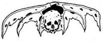
2.
Hol csókolod meg a bálványt: a homlokán - lapozz a 314-re; a bal szemén - lapozz a 163-ra; a jobb orcáján - lapozz a 334-re; a bal orcáján - lapozz a 88-ra; az orrán - lapozz a 296-ra, vagy az ajkán - lapozz a 231-re.
3.
Elsősorban két mesterember vonja magára a figyelmedet: az egyik egy kar nélküli férfi, aki portrékat állított ki, a másik egy tűzmester, aki különböző színű díszes tüzeket mutat be. Melyikükhöz mész oda: a művészhez - lapozz a 18-ra, vagy a tűzmesterhez - lapozz a 96-ra.
4.
A hatalmas bronzláb rád tapos. Megpróbálsz elugrani előle… de már késő; a földhöz lapít. Kalandod itt véget ér!
5.
Egy erszény röpül ki a vitrinből a lábad elé. Kinyitod, és amikor belenézel, úgy látod, üres. Elteheted arra az esetre, ha esetleg a saját erszényedet elveszítenéd, hogy legyen miben tartanod az aranyadat. Nemsokára rájössz, hogy az erszény egyáltalán nem üres. Amikor ismét kinyitod, egy bolhacsalád pattan ki belőle, és megtelepszik a karodon, de addig nem veszed észre őket, amíg egy kis idő múlva iszonyatosan viszketni nem kezd a karod. Ettől eltekintve nem okoznak nagyobb problémát. Kimész a sátorból, és folytatod az utadat. Lapozz a 160-ra.
6.
A csődör hatalmasakat szökkenve, kapálózva vágtat veled lefelé az úton. Elkeseredetten próbálsz megkapaszkodni a hátán, de hiába: levet magáról, és az út szélén landolsz. Vesztez 2 ÉLETERŐ pontot, ugyanis szerencsétlenül estél, és megütötted a válladat. Feltápászkodsz, és leporolod a ruhádat. A ló eltűnik a szemed elől egy kanyarban, te pedig elindulhatsz vissza az elágazáshoz. Lapozz a 237-re.
7.
Mit veszel elő a hátizsákodból? Rendelkezel-e a következő tárgyakkal: egy fekete maszk; egy íj és nyílvesszők; varázslánc? Ha igen; válassz ki közülük egyet, jegyezd fel, hogy nálad van, és lépj be a kriptába. Lapozz a 249-re.
8.
Odamész a szoborhoz, mely szerinted igen tehetséges művész alkotása lehet, hiszen olyan élethű. Ekkor azonban a látványtól földbe gyökerezik a lábad - a szobor pislog egyet, és életre kel.
A teremtmény hosszú karja egy szempillantás alatt feléd nyúl, megragad a válladnál fogva, és fölemel magához. Nagyra tátja a száját, és a nyakadba mélyeszti a fogait. Azt sem tudod, mi történt, és máris halott vagy! Kharé egyik legveszélyesebb lakójára - az ÁJTATOS MANÓEMBERRE bukkantál.
9.
A Lánckészítő mester műhelyével szemben lévő kunyhóból isteni illatok szállnak feléd. Ha akarod, odamehetsz, és megnézheted, mi van ott - lapozz a 171-re. Máskülönben menj tovább az úton - lapozz a 294-re.
10.
Zsákutcába jutottál. Vissza kell menned, és más utat kell választanod. Merre indulsz tovább?
Egyenesen mész mindaddig, ameddig
lehet? Lapozz a 298-ra.
A második elágazáson fordulsz jobbra, és
addig mész, ameddig lehet? Lapozz a 174-re.
Az első elágazáson fordulsz jobbra, és addig
mész, ameddig lehet? Lapozz a 69-re.
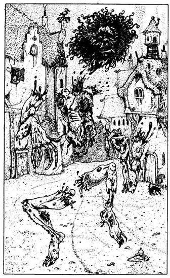
11.
Ütésed egyenesen az undorító élőholt teremtmény mellkasába csapódik. Az Élő Hulla megtántorodik. Bár ez az ütés minden élőlényt ledöntött volna a lábáról, ezt a szörnyeteget nem öli meg; ehelyett hat darabra szaggatja a testét. Mind a hat testrész ott kering körülötted, közben beléd mar, megkarmol, beléd rúg, neked ront. Mostantól kezdve egy fej, egy torzó, két kar és két láb ellen kell küzdened, melyek mind egyszerre támadnak.
Ha továbbra is a karoddal harcolsz ellenük, az egyes testrészek pontértékei a következők:
DOBÁS TESTRÉSZ ÜGYESSÉG ÉLETERŐ
1 Fej 3 1
2 Torzó 2 1
3 Bal kar 3 1
4 Jobb kar 3 1
5 Bal láb 2 1
6 Jobb láb 2 1
Minden egyes testrészt külön ellenfélnek tekints, és dobókockával állapítsd meg a Támadóerejét, majd ugyancsak dobókockával állapítsd meg a saját Támadóerődet. Minden egyes testrésztől, amelynek nagyobb a Támadóereje, mint a tiéd, egy ütést kapsz. Egy dobókockával dobj ahhoz, hogy megállapíthasd, melyik testrészt támadod meg: azt a testrészt támadd, amelyet a kocka száma megad (lásd a fönti táblázatot). Ha a te Támadóerőd nagyobb, mint a megtámadott testrészé, akkor ez a testrész ezáltal játékon kívül kerül, és a következő fordulókban nem is dobsz azért, hogy megállapítsd annak Támadóerejét - viszont továbbra is szerepel a dobható testrészek sorában (tehát, ha ennek a testrésznek a számát dobod újból, akkor egy ütést elpazaroltál). Ha legyőzted a teremtményt - lapozz a 276-ra.
Ha akarod, varázsolhatsz a harc helyett:
POP LÁP FAL HAT FEL
441 450 373 435 357
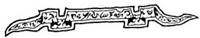
12.
Előveszed a kulcsot a hátizsákodból, és óvatosan bedugod a zárba. A reteszek sorban kikattannak. A kapu kissé megnyílik. Gondosan körülnézel, majd benyitsz és belesel. Nincs bent senki.
Gyorsan besurransz, és becsukod magad mögött a kaput. A fene egye meg! A kulcsot kívül hagytad a zárban! (Húzd ki a Kalandlapodról.) Lábujjhegyen odalopakodsz a kapu mögött lévő boltíves átjáróhoz, és elbújsz egy beugróban. Néma csönd van körülötted, és úgy döntesz, hogy előbújsz rejtekhelyedről. Először egy házat veszel észre a fal túloldalán, és odasettenkedsz. A kőház ablakait rácsok védik. Belesel, és látod, hogy a szoba szinte teljesen üres, csak egy pad van bent, amelyen egy öregember ül. Ha bemész a házba és üdvözlöd az öreget - lapozz a 169-re. Ha inkább továbbmész - lapozz a 218-ra.
13.
Miközben támadsz, ő célba vesz, és kilövi a nyílvesszőt. Vajon eltalál-e? Dobj egy kockával, hogy megtudd:
1. Eltalálja a szemedet - azonnal meghalsz.
2. Mellbe lő - vesztesz 5 ÉLETERŐ pontot.
3. A lábadba lő - vesztesz 3 ÉLETERŐ pontot.
4. Megsebesíti a karodat - vesztesz 2 ÉLETERŐ pontot.
5. Felsérti a csuklódat a kardforgató kezeden - vesztesz 1 ÉLETERŐ pontot és 2 ÜGYESSÉG pontot.
6. Nem talál el.
Ha még mindig életben vagy, küzdj meg vele.
Gyilkos ÜGYESSÉG 7 ÉLETERŐ 8
Ha legyőzöd - lapozz a 105-re.
14.
A férfi végignézte harcotokat, és becsapja az ajtót, amikor végül legyőzöd a Borzas Vadat. Megpróbálod kinyitni az ajtót, de nem bírod, mert a férfi kulcsra zárta. Lapozz a 133-ra.
15.
A guillotine pengéje a magasba emelkedik, és ekkor megkönnyebbülten fellélegzel. A fogadós káromkodva vonul le a földszintre, s hagyja, hogy eloldozd kötelékeidet. Büszkén távozol a fogadóból. Nyersz 1 SZERENCSE pontot a helyes döntésért. Lapozz a 267-re. További 2 ÉLETERŐ pontot kapsz az éjszakai pihenőért.
16.
Óvatosan kikerülöd az ajtó előtti fénylő kört, és elhagyod a kriptát. Továbbmész a Kharéból kivezető úton - lapozz a 127-re.
17.
Megpróbálod utánozni a táncosok lépteit, de nem sok sikerrel. Ennek ellenére jól szórakozol, s ezért nyersz 1 ÉLETERŐ pontot. A tánc azonban csakhamar kifáraszt, annál is inkább, mivel még mindig a hátadon van a hátizsákod, és a fegyveredet is a kezedben tartod. A zene azonban csak nem akar elhallgatni. Kitartasz-e a zene végéig? Számold össze, hány tárgy van nálad (a fegyveredet, Élelmedet és a nálad lévő Aranyat összesen három tárgyként számold), majd dobj két kockával. Ha a dobott összeg nagyobb, mint ez a szám, akkor kitartasz a zene végéig. Ha a dobott összeg kevesebb vagy ugyanannyi, mint a nálad lévő tárgyaknak a száma, akkor 1 ÉLETERŐ pontot vesztesz, és újra kell dobnod, méghozzá addig kell újra dobnod, amíg nem dobsz nagyobbat, mint a tárgyaid száma. Minél több tárgy van a hátizsákodban, annál inkább kifáradsz. Ha ötször dobsz sikertelenül, összeesel, és a tömeg kihúz a kör szélére. Lapozz a 201-re.
18.
A művész festményein Kharé különböző előkelőségei láthatók. Kíváncsian kérded, miként tud kéz nélkül festeni, mire közli veled, hogy egy olyan varázsecsettel rendelkezik, amely azt festi le, amit ő kíván. Most éppen bent a házában fest az ecset az ő utasításainak megfelelően. Ha be akarsz menni a házba, hogy megnézd, mit fest éppen az ecset - lapozz a 176-ra. Ha inkább a tűzmester tüzeit kívánod megtekinteni - lapozz a 96-ra.
19.
Hozzáérsz az egyik különösen csörömpölő lánchoz. A zajra a másik szobából előbújik a Lánckészítő mester. Rögtön látod, hogy az nem más, mint egy Torrepani faluból való Svinn, azaz egy ember-ork, aki most igen mérges, amiért betolakodtál a házába. Lapozz a 119-re.
20.
Remek szerzemény a talizmán. Amíg nálad van és Próbára teszed a SZERENCSÉDET, de nincs SZERENCSÉD, nem kell levonnod magadtól 1 SZERENCSE pontot. Lapozz vissza a 264-re.
21.
Nyersz 2 ÉLETERŐ pontot, amiért pihentél. Másnap kora reggel ébredsz. Ettél-e tegnap? Ha nem, le kell vonnod magadtól 3 ÉLETERŐ pontot, mert most nagyon éhes vagy.
Amikor felkelsz, kintről hangokat hallasz. Az őrök tértek vissza. Alighanem rájöttek, hogy nem jelentesz veszélyt a városukra, és kituszkolnak a házból az öregemberrel együtt. Kissé bódultan bukdácsoltok lefelé az úton, Kharé központja irányába. Az öreg gyorsan szedi a lábát, igyekszik lehagyni téged. Miközben figyeled, gyanú ébred benned - megállsz, és átvizsgálod a hátizsákodat. Nem kellett volna hinned a gazfickónak, ugyanis ellopta az egyik tárgyadat! Húzd ki az egyik tárgyat a Kalandlapodról. (Ha nincs semmilyen tárgyad, 1 adag Élelmedet veszted el!) Utána kiáltasz, de már jócskán lehagyott, és bekanyarodott jobbra egy elágazásnál. Futva kell utolérned. Lapozz a 81-re.
22.
Melyik varázslatot alkalmazod?
HOM HAT RAN TIV YOB
358 384 454 491 411
Ha ezek közül egyik varázslatot sem ismered, meg kell küzdened a Szoborral - lapozz a 299-re.
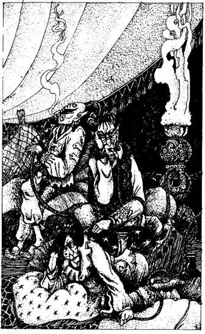
23.
Elindulsz fölfelé az úton a kölykök után. Rozzant házak és kunyhók szegélyezik az utat, és igencsak óvatosan haladsz. Furcsa arcú emberek bámulnak rád az ablakokból. Fönt a kanyarban egy őrcsapat jelenik meg! Villámgyorsan felméred a helyzetet, besurransz az egyik kunyhóba, és magadra zárod az ajtót. Az őrök elmennek a ház mellett, és ekkor megkönnyebbülten lélegzel fel. De hol is vagy valójában?
Körülnézel a rozzant viskóban, és hátrahőkölsz, amikor megpillantod a három undorító arcú embert, akik téged bámulnak. A szoba iszonyúan piszkos, és egy szalmazsákon meg egy alacsony asztalkán kívül szinte nem is látsz mást benne. A három teremtmény, a három FEKETE ELF kifejezéstelen arccal mered rád. Átható, édeskés szag csapja meg az orrodat, amely azonnal magyarázatot ad közönyös viselkedésükre. Valamennyien vízipipát szívnak, melyben kapadohány van. Egyikük, miután nagy nehezen összeszedi magát, felajánlja, hogy tarts velük. Mit teszel?
Leülsz közéjük és rápipálsz? Lapozz a 150-re.
Elnézést kérsz a zavarásért, és távozol? Lapozz a 213-ra.
Megpróbálsz valamilyen információt kicsikarni
belőlük? Lapozz a 242-re.
Kardot rántasz ellenük? Lapozz az 58-ra.
24.
Elindulnak feléd, és te besurransz a bal oldali mellékutcába. Üldözőbe vesznek. Igen gyorsak, de meg kell próbálnod lerázni őket. Merre futsz?
Az első utcán jobbra, majd az elsőn balra és az
elsőn jobbra? Lapozz a 232-re.
Az első utcán jobbra, majd a következőn jobbra és
az elsőn balra? Lapozz a 41-re.
Az első utcán balra, majd az elsőn jobbra és
a következőn jobbra? Lapozz a 184-re.
Ha akarod, varázsolhatsz:
TÁN POR YOB BŰZ ELT
489 458 354 407 510
25.
A Szerencsekerék minden egyes forgatása 1 Aranytallérba kerül. Ahhoz, hogy ezt a játékot játszhasd, fizesd le az 1 Aranyat, jegyezd meg a fenti fejezetszámot (hogy majd később visszatérhess ide), és csukd be a könyvet. A könyv néhány lapjának az alján, a nyomtatott dobókockák fölött feltüntettük a nyereményt. Pörgesd meg a könyv lapjait, majd állj meg hirtelen, és nyisd ki a könyvet. Ha nem találsz jelzést arra vonatkozóan, hogy mennyit nyertél, vesztettél. Ha ott van a feltüntetett nyereményösszeg, az mind a tiéd (5, 10 vagy 20 Aranytallér). Addig fizethetsz be a játékba és annyiszor játszol, ameddig nem nyersz. Miután nyertél, el kell hagynod a játéktermet - lapozz a 39-re.
26.
Melyik varázslatot alkalmazod?
TÉR FÉM YAG KIN FUJ
483 439 428 475 465
Ha egyik varázslatot sem ismered, valamivel meg kell vesztegetned őket - lapozz a 157-re, máskülönben elvezetnek.
27.
A kunyhó belsejében csontok hevernek szanaszét a földön. Bárki vagy bármi lakik is itt, az minden bizonnyal ragadozó. A csontokból ítélve ez a teremtmény különösen kedveli az emberhúst. Mivel a kunyhó valójában elhagyatott, úgy döntesz, hogy átkutatod a földön szétszórt holmikat. A szerencsétlenül járt áldozatok ruhái ott hevernek, és amikor megnézed a zsebeket, 15 Aranytallérra lelsz. Találsz néhány ujjpercet is, amelyeket karpereccé fűztek össze. Elteheted azt is az Arannyal együtt. Miután meggyőződsz róla, hogy senki sincs a közelben, óvatosan elhagyod a kunyhót. Lapozz a 37-re.
28.
Kissé följebb egy elágazáshoz érsz, ahol vagy egyenesen mész tovább, vagy balra kanyarodsz. Az elágazásban egy kunyhó áll, előtte egy csődört látsz kikötve. Ha a balra nyíló utcán mész tovább - lapozz a 300-ra; ha egyenesen mész tovább - lapozz a 233-ra; ha odamész a lóhoz - lapozz a 183-ra.
29.
Kinyitod a dobozt, és megnézed, mi van benne. Úgy látod, a teremtmény összes értékes holmija ott lapul. A legfigyelemreméltóbb egy aranyhátú, szépen megmunkált tükör. Találsz még egy papirusztekercset, amelyen számodra ismeretlen nyelven írt szöveg olvasható. Ezt is magaddal viheted. Ezenkívül még 2 Aranytallért is találsz a dobozban. Gyorsan kimész a kunyhóból. Lapozz a 294-re.
30.
Istennődhöz fohászkodsz. Halk kattanást hallasz az ajtó felől, és ekkor az Elvin odasúgja neked: - Csitt! Sikerült! Az ajtó nyitva van! - Bármikor elhagyhatod a cellát, és megvárod, míg az őr elalszik. Néma hálát rebegsz Librának - de ne feledd, többé nem veheted igénybe a segítségét ebben a kalandban. Lapozz a 206-ra.
31.
Odahajolsz a bálvány szájához, amikor az közli veled a választ: - A varázsigét egyedül Sansas, Kharé Első Főnemese ismeri. Sajnos, nem sokra mész ezzel az információval, mert Sansas jelenleg nem tartózkodik a városban. A Jabaji folyón hajózik éppen fölfelé, a Lumlé tó irányába. - Káromkodsz, mert teljesen fölöslegesen tetted fel ezt a kérdést; nem ezt kellett volna kérdezned. Most el kell hagynod Courga Szentélyét, és tovább kell menned az Északi Kapuhoz. Lapozz a 109-re.
32.
A kunyhók mellett haladsz az úton, míg egy elágazáshoz érsz, ahol jobbra fordulsz. Lapozz a 297-re.
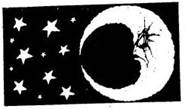
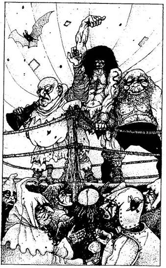
33.
A ringben a haramia bemutatja a vállalkozó szellemű versenyzőt. - Nos, emberek, ez itt a versenyző, a fehér sarokban! Hadd halljam, miként ünneplitek Anvart, a Barbárt! - A tömeg vadul éljenez. - A fekete sarokban Kharé nagy küzdőbajnoka, a hatalmas Koponyahasogató Ogre áll, Daddu-Ley Cagouja - Ismét éljenzés hangzik fel a tömegből, amint a hatalmas termetű, kopasz, vadállathoz hasonló férfi megjelenik a ringben. Igazi harcnak néztek elébe. A Barbár magasabb, mint az Ogre, de az Ogre karja és lába csupa izom. A tömegben az emberek fogadásokat kötnek egymással. Ha akarsz, te is fogadhatsz - lapozz a 190-re; de úgy is dönthetsz, hogy csak szemlélője leszel a küzdelemnek. Ha akarod, te is vállalhatod a versenyző bajnok szerepét, hisz a győztesnek 15 Arany üti a markát. Ha nem akarsz fogadni, lapozz a 234-re.
34.
Két korsó sörrel tér vissza, és az egyiket leteszi eléd. - Kharé központja a kikötőnél van - mondja-, de az igen veszélyes hely éjszaka. Sok útonálló settenkedik arrafelé, és orvul megtámadja az óvatlan járókelőket, majd a rabszolgahajókra viszi őket, úgyhogy jobban teszed, ha még napnyugta előtt szállás után nézel! - Még nem nyúltál az italodhoz. Ha belekortyolsz és hagyod, hogy vendéglátód folytassa a mondókáját - lapozz a 236-ra. Ha inkább varázsolnál, válassz!
HOP TÁV TEL CSA RAN
361 387 498 414 355
35.
Nem találtad el, a sima fémfelület itt sértetlen. Mialatt a szobor gyenge pontját keresed, a hatalmas láb beléd rúg, és elvágódsz. Vesztesz 4 ÉLETERŐ pontot! Lapozz vissza a 326-ra, és válassz újra.
36.
Ránézel az őrre, aki gúnyos mosollyal szemlél. Jól becsapott. Bajba keverheted, ha leleplezed, mint csalót - lapozz a 126-ra, vagy dönthetsz úgy is, hogy inkább nyugton maradsz, és megpróbálsz vele együttműködni - lapozz a 291-re.
37.
Miközben távozol a kunyhóból, még egyszer ránézel a szoborra. Nem vagy benne teljesen biztos, de az az érzésed, hogy valami megváltozott rajta. Ekkor döbbensz rá, hogy valóban megváltozott. A feje megfordult, és most pontosan téged néz! Ha gyorsan elrohansz - lapozz az 55-re. Ha kardot rántasz - lapozz a 76-ra. Ha varázsolni akarsz, melyik varázslatot alkalmazod?
MEN TEL FIX TIV POR
492 401 394 461 348
38.
A Halálkísérteteket kizárólag ezüstfegyverrel lehet megsebezni. Ha van nálad íj és ezüstvégű nyílvessző, előveheted a hátizsákodból - lapozz a 147-re. Ha nincs ilyen nyílvessződ, egyetlen reménységed Libra - hozzá könyöröghetsz segítségért, ha még nem fordultál hozzá ebben a kalandban - lapozz a 87-re. Máskülönben ez lesz az utolsó csatád Kharéban…
39.
A Játékteremből kifelé menet egy ajtó mellett haladsz el, melyen a következő kiírást látod: "Díszterem". Ha meg akarod nézni - lapozz a 112-re. Ha inkább távozol Vlada Játéktermeiből - lapozz a 197.-re. Ha távozáskor több Aranyad van, mint amikor ide bejöttél, 2 SZERENCSE pontot kapsz.
40.
A teremtmények a téged körülvevő tömegben dühösek, amiért nem csatlakozol hozzájuk. Lökdösni kezdenek, s te megpróbálsz ellenállni. - Miféle legény vagy te, mi? - szólal meg egy hang a hátad mögött, egy másik meg odamorogja: - Menj, má! Hisz ez csak tréfa! - Ha továbbra sem akarsz beállni közéjük táncolni - lapozz a 230-ra, ha viszont nem akarod magadra haragítani a tömeget - lapozz a 17-re.
41.
Egy kunyhó előtt megállsz. Mögötted egyre hangosabb a lábdobogás. Úgy döntesz, besurransz a kunyhóba. Lapozz a 324-re.
42.
Zsákutcába kerültél. Vissza kell fordulnod. Merre mész tovább?
Egyenesen előre, a második elágazásnál jobbra, majd az
első elágazásnál balra? Lapozz a 10-re.
Egyenesen előre, az első elágazásnál jobbra, majd a másodiknál
balra, és az első elágazásnál jobbra? Lapozz a 77-re.
Egyenesen előre, majd az első elágazásnál balra? Lapozz a 174-re.
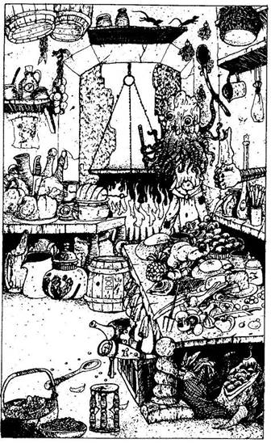
43.
Körülnézel a szobában. Különböző fűszerek, zöldségek és húsok hevernek szanaszét a szoba közepén lévő asztalokon és lógnak mindenütt a falakon. Szemmel láthatólag egy konyhában vagy. A konyha végében tűz lobog a tűzhelyen, fölötte egy kondérban leves rotyog, amelynek az illata az utcán megcsapta az orrodat. A tűzhely mellett undorító külsejű teremtmény áll. Teste és lába akár az emberé, de a feje hatalmas, kocsonyaszerű massza, amely előtt szabadon úszkál a két szeme. Erről a fejről körös-körül hosszú, polipszerű csápok csüngnek le. Úgy véled, ez lehet a keze (mivel másféle keze nincs), amelyben egy merőkanalat és egy fakanalat tart. Furcsa szerzet ez a teremtmény. Ám ugyanakkor az egyik asztal alatt észreveszel egy ládát, amelyből egy papírtekercs és egy csillogó tükör kandikál ki. Vendéglátód kíváncsian várja, hogy mit akarsz:
Megpróbálsz beszélni vele? Lapozz a 145-re.
Kardot rántasz és rátámadsz? Lapozz a 243-ra.
Varázsolsz? Lapozz a 257-re.
Kimész, és folytatod az utadat? Lapozz a 294-re.
44.
Megpróbálod elkapni az ecsetet, de az minduntalan kicsusszan a kezed közül, és a festmény felé tör. Előránthatod a kardodat, és megküzdhetsz vele:
Festőecset ÜGYESSÉG 8 ÉLETERŐ 5
Az ecset valójában nem támad rád: ÜGYESSÉGE csupán fürgeségében rejlik. Ha az ötödik Fordulóig nem sikerül összetörnöd (azaz megölnöd), az ecset befejezi a portrét. Lapozz a 67-re. Ha sikerül összetörnöd, elhagyhatod a kunyhót - lapozz a 137-re.

45.
A csomagban 6 Fekete Goblin-fog van. Amikor kiszórod őket a tenyeredbe, örömmel látod, hogy eggyel több van belőlük. Egy hatalmas Óriás-fog is ott lapul még a zsák alján, amelyről a Gnóm nem tudott. Lapozz vissza a 264-re.
46.
Az utcákat róva csakhamar egy útelágazáshoz érsz, ahol vagy balra fordulhatsz - lapozz a 131-re, vagy jobbra - lapozz a 60-ra, vagy egyenesen mehetsz tovább - lapozz a 139-re.
47.
Bemész a temetőbe, és egy gazzal benőtt úton odalopakodsz a kripta ajtajához. Az ajtó előtt sötéten csillogó, kör alakú valamit látsz, amit vagy átugrasz, vagy átmész rajta. Ha átsétálsz rajta az ajtóhoz - lapozz a 288-ra, ha átugrasz rajta - lapozz a 258-ra. Ha varázsolsz, melyik varázslatot választod?
FÉM CSA DOK MEN TEL
466 377 442 395 418
48.
A pap nem tudja titkolni a csalódását. Szemmel láthatólag a kharéi embereket nem okították ki a matematika tudományára, mint ahogy azt veled tették Analandban. Ígéretének megfelelően teljesíti egy kérésedet. Megkérdezed, mit tud arról a varázsigéről, amely Kharé Északi Kapuját nyitja. - Nem ismerem a varázsige teljes szövegét - mondja -, mert annak mind a négy sorát csupán Kharé Első Főnemese tudja. Az egyik sorát azonban én is ismerem, s az így hangzik: - Nyílj ki négyre nekem tágra. - Hallgatóságát ámulatba ejti bölcsességed, és jó szerencsét kívánva bocsátanak utadra. Állítsd vissza SZERENCSE pontjaid számát a Kezdeti értékre. Lapozz a 165-re.
49.
Eloldod a kötőféket, és felpattansz a ló hátára. Az állat hangosan felnyerít és felágaskodik. Mielőtt még bármit tehetnél, vágtatva elindul veled azon az úton, amelyen idejöttél. Erősen megkapaszkodva benne megvárhatod, hová visz, lapozz a 268-ra, vagy Tedd próbára a SZERENCSÉDET, hogy megkísérelhesd megállítani, és leszállhass a hátáról - lapozz a 220-ra.
50.
Megkerülöd a teret, és közben le nem veszed a szemedet a szoborról. Amint az egyik ház ajtaja előtt elhaladsz, kezek nyúlnak ki feléd, és nyakon ragadnak. - Úgy látom, hívatlan vendégünk van - mondja valaki. - Mi, Vörösszeműek nem szeretjük az ilyen hívatlan vendégeket. Tömlöcbe vele! - Végiglökdösnek a mellékutcákon, míg végül egy nagy házhoz értek. Bent betuszkolnak egy cellába, és rád zárják az ajtót. Lapozz a 143-ra.
51.
- Lássuk csak - mondja töprengve. - Ki is ismerheti az Északi Kapu varázsigéjének egyik sorát? Ó, igen! A következő útelágazásnál nehogy ne menj egyenesen előre. Végül pedig nehogy balra kanyarodj. Igen… Úgy hiszem, ez az. Sok szerencsét! - Nem egészen érted, mit is javasolt neked, és egyre csak ez jár a fejedben, miközben az útkereszteződéshez közeledsz. Ne feledd, az illető kényszeres hazudozó! Lapozz a 144-re.
52.
Hol csókolod meg ezúttal? A jobb szemén? - Lapozz a 2-re. A bal szemén? Lapozz a 163-ra. A jobb orcáján? Lapozz a 334-re. A bal orcáján? - Lapozz a 88-ra. Az orrán? - Lapozz a 296-ra. A száján? - Lapozz a 141-re.
53.
Megnyugszik, és kijelenti, hogy a hallása már nem olyan jó, mint régen volt. Természetes, hogy gyanakvó minden idegennel szemben, hisz ez a hely ezt megkívánja. Befelé invitál, de ekkor meglátja a fegyveredet. Ha be akarsz menni hozzá, át kell adnod neki a kardodat - lapozz a 229-re. Máskülönben nem enged be, és tovább kell menned - lapozz a 133-ra.
54.
Felkapod az undorító teremtményt, és odaviszed a koporsóhoz, majd beledobod. Kimerültél a harcban, pihensz egy percet. Ha enni akarsz Élelmedből, megteheted, s ezzel 2 ÉLETERŐ pontot nyersz, ha ma még nem ettél semmit (de csupán 1 ÉLETERŐ pontot kapsz, ha már ettél volna a mai nap folyamán). Lapozz a 209-re.
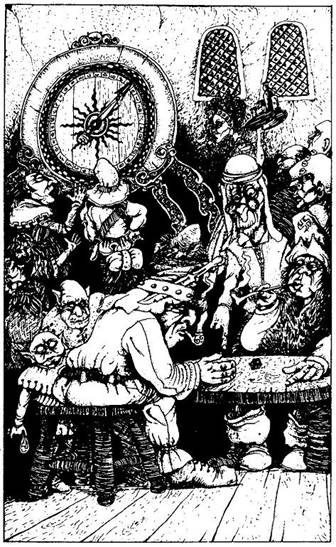
55.
Amint megmozdulsz, a szobor odapattan hozzád! Kinyújtja feléd a kezét, és megpróbál elkapni. Ez a teremtmény a szörnyűséges ÁJTATOS MANÓEMBER. Ha sikerül elkapnia, magához húz, és éles fogai azonnal végeznek veled, de azért megkísérelheted levágni a két karját, és így hatástalanítani.
Ájtatos Manóember ÜGYESSÉG 6 ÉLETERŐ 5
A szörny harceszköze a két karja: minden Forduló előtt dobj 2 kockával. Ha a dobott összeg kevesebb, mint az Ájtatos Manóember ÜGYESSÉGE, sikerül elkapnia, és nincs menekvés előle. Ha a dobott összeg ugyanannyi vagy nagyobb, mint az ő ÜGYESSÉGE, nem sikerült elkapnia - tehát dobj még egyszer, hogy megállapítsd a Támadóerődet. Ha túléled a harcot - lapozz a 117-re.
56.
Belépsz a terembe. Bár még korán van, benn zajos tömeg szórakozik. Senki nem vesz észre, mindenkit lefoglal a játék. Csupán a dobókockák zörgése és a szerencsekerék kattogása hatol át hozzád a hangzavaron. Ha a szerencsekeréknél próbálnál szerencsét - lapozz a 25-re. Ha inkább a dobókockákkal játszanál - lapozz a 188-ra. Ha elhagyod Vlada Játéktermeit - lapozz a 39-re.
57.
Továbbmész az úton. Kharé központja felé haladsz, ahol a házak és épületek egyre sűrűbben állnak. Az utca egyik oldalán mész. Amikor átnézel a másik oldalra, hátulról hirtelen megragad valaki, és betuszkol egy házba! Szembefordulsz a támadóddal, egy sötét bőrű, borostás képű férfival. Szemmel láthatóan meglepi az erőd. Elenged, és kezét fölemelve jelzi, hogy nem óhajt bántani. - Barátom, sajnálom, hogy megijesztettelek - mondja. - Magányos vagyok ebben a gonosz városban. Éppolyan emberi lény vagy, mint én, és korábban nem láttalak errefelé. Kérlek, ülj le velem, és beszélgessünk egy kicsit. Nem foglak bántani. - Elég barátságosnak látszik, de a szemében gonosz fény csillog, s ezért nem igazán hiszel neki. Az ő otthonában vagytok, ahol a szobában egy asztal, néhány szék meg egy tálalószekrény áll, s a falakról faliszőnyegek lógnak. Ha itt maradsz nála és elbeszélgetsz vele - lapozz a 186-ra. Ha inkább továbbállsz innen - lapozz a 173-ra.
58.
A többiek feltápászkodnak, és sután a fegyverük után nyúlnak. Küzdj meg velük egyenként:
ÜGYESSÉG ÉLETERŐ
Első Fekete Elf 6 5
Második Fekete Elf 7 4
Harmadik Fekete Elf 5 5
A kapadohány megteszi a magáét: olyanok, akár az alvajárók. Minden alkalommal, amikor valaki, aki túl sokat szívott (téged is beleértve), megsebez valakit, dobj egy kockával. Ha ez a szám páros, az ütés talált. Ha páratlan - nem talált. Ha a dobott szám 1 - az ütés nem talált, a támadó saját fegyverébe dől, és 2 ÉLETERŐ pont kárt tesz önmagában. Ha legyőzöd a teremtményeket - lapozz a 251-re.
59.
Ravaszul mosolyogva körülnéz, nem figyeli-e valaki, majd feléd nyújtja a tenyerét, és te beledobod az érméket (vonj le magadtól 2 Aranyat). Amikor a pénz megcsörren, hangosan köhög egyet, hogy elnyomja a hangot. Odasúgja neked, hogy várj egy percet. Rád csukja az ajtót. Lapozz a 225-re.
60.
Az utcából egy újabb utca nyílik. Ha balra fordulsz rajta, eljutsz Kharé központjába. Lapozz a 165-re.
61.
A közelben egy hatalmas vakolt kőházat pillantasz meg. Tekintélyes épületnek látszik. Ha odamész a bejárati ajtóhoz - lapozz a 140-re. Ha megkerülöd a házat és megnézed, mi van hátul - lapozz a 208-ra. Ha inkább továbbmész lefelé az úton - lapozz a 133-ra.

62.
Kissé följebb az úton egy útkereszteződéshez érsz. Balra az út hasonló kunyhók sora között halad tovább, míg jobbra valami vásárféléhez vezet el, ahol színes zászlók lengedeznek és nagy a sürgésforgás. Ha balra indulsz - lapozz a 32-re. Ha jobbra - lapozz a 322-re. Ha egyenesen mész tovább - lapozz az 57-re.
63.
Megkönnyebbülsz, amikor Aranyadat megtalálod az erszényben. Dulakodás támad a tömegben, mert a zsebtolvaj áldozatai mindannyian a szomszédaikat gyanúsítják. Úgy döntesz, hogy távozol erről a helyről. Ha odamész a táncosokhoz - lapozz a 261-re. Ha odamész a ringhez, hogy megnézd, vajon a bajnok talált-e magának ellenfelet - lapozz a 33-ra. Ha elhagyod a fesztivál színhelyét - lapozz a 263-ra.
64.
Épp jókor ugrasz el, mert a hatalmas láb kíméletlenül feléd tart. Sajnos épp a kardforgató karodra esel. 1 ÜGYESSÉG pontot vesztesz a mai napra. (Karod holnapra gyógyul csak meg.) Lapozz a 93-ra, és válassz újra.
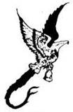
65.
A fénylő felület nem más, mint egy csillogó fekete folyadékkal teli medence. Amikor szemügyre veszed, a hátad mögött közelgő léptek zaját hallod. - Nocsak, egy idegen kíváncsi a mi "Dísztermünkre?" - rikácsolja a hang. - Nos, ez az a hely, ahová a szemetet szoktuk tenni - meg a hívatlan látogatókat! - Mielőtt megfordulhatnál, két kéz ragad meg, és belök a kör közepébe. Lapozz a 270-re.
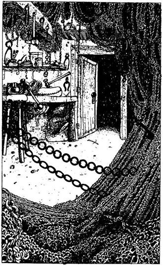
66.
Odamész az ajtóhoz. A cégtáblán ez áll: LÁNCKÉSZÍTŐ MESTER. Az ajtó kissé nyitva van, s te belépsz. Egy lélek sincs bent, de a kunyhó mélyén egy újabb nyitott ajtót látsz. Ahová csak nézel, a szoba falait különböző hosszúságú láncok borítják, szinte alig tudsz elmenni mellettük úgy, hogy hozzájuk ne érj. Ha akarod, kiálthatsz a Lánckészítőnek - lapozz a 280-ra, vagy gyorsan körülnézhetsz a szobában, amíg egyedül vagy - lapozz a 215-re.
67.
Amikor a festmény elkészül, legnagyobb meglepetésedre hasonmásod megmozdul a vásznon. A festmény meredten a szemedbe nézve mindkét kezével megragadja a vászon két szélét, elrugaszkodik és leugrik a földre. Ott áll előtted a hasonmásod! Néhány pillanatig szemeztek egymással. Ekkor egy hang szólal meg kintről - a művész azt parancsolja a festménynek, hogy támadjon rád, és vegye el a pénzedet. Küzdj meg alteregóddal (ÜGYESSÉGE és ÉLETEREJE épp olyan, mint a tiéd). De harc helyett varázsolhatsz is. Mivel a művész nem tudott róla, hogy varázsolni tudsz, hasonmásod nem rendelkezik varázserővel.
KIN DEM REP SUD PÉL
356 385 508 364 339
68.
Amikor kilépsz a fogadóból, körülnézel az utcán, hátha találsz valami alkalmas helyet, hogy megpihenj éjszakára. Ha a fogadó mögött lévő sötét sétányt választod erre a célra - lapozz a 94-re. Ha inkább ébren töltöd az éjszakát - lapozz a 159-re.
69.
Zsákutcába jutottál. Föntről azonban fény szűrődik be, és amikor felnézel, egy lyukat fedezel föl, ahonnan egy kötél lóg le, melynek a végére vödröt erősítettek! Lehet, hogy egy használaton kívüli kutat találtál?
Felugrasz, és elkapod a kötelet. Fölfelé kezdesz mászni a fény felé. A
mászás igen fáradságos, és 2 ÉLETERŐ pontot vesztesz, de ugyanakkor 2 SZERENCSE pontot nyersz azáltal, hogy ráleltél a csatorna kijáratára. Mikor felérsz, akkor látod, hogy valóban egy kúton át másztál ki a felszínre. Kicsit kifújhatod magad. Egyenesen elindulhatsz Kharéból kifelé - lapozz a 319-re, vagy visszamehetsz a kikötőbe, hogy megnézd a temető mellett lévő házat - lapozz a 83-ra.
70.
Némán Librához fohászkodsz. Nem érzel semmi különöset, de az elkövetkező harcban melletted fog állni. Első sikeres csapásod leteríti az ellenfeledet, s azonnal meghal. Lapozz a 323-ra, és vívd meg a csatádat. Ne feledd azonban, hogy ezúttal felhasználtad az egyetlen alkalmat, amikor segítségül hívhattad istennődet Kharéban. Mindaddig nem veheted igénybe a szolgálatát, amíg el nem hagyod a kikötővárost.
71.
Egy kis karkötő repül ki a vitrinből. Fölemeled és megnézed. Egy törpe ujjperceiből készült a karkötő, és varázsláskor majd hasznát veheted. Elteszed a hátizsákodba, és kimész a sátorból. Lapozz a 160-ra.
72.
Lehajol, hogy megnézze, mit választottál. - Ó, te ügyetlen! - kiáltja. - A válasz természetesen helytelen, nem ez a jel illik oda. Ha csak ennyire vagy bölcs, akkor bizony utad során elkel majd egy kis segítség az istennődtől. - Folytatni akarja a munkáját, és így távoznod kell a házából. Elmenőben magadhoz veszed a kardodat, és - lapozz a 133-ra.
73.
Amikor lenyomod a bejárati ajtó kilincsét, megnyikordulnak a sarokvasak, és az ajtó kinyílik. A nyikorgás csak úgy visszhangzik az üres belső térben. Óvatosan belesel. A hely elhagyatottnak tűnik, életnek semmi jelét nem látod. Amikor belépsz a szentélybe és az ajtó becsukódik mögötted, a szemed elé táruló látványtól a lélegzeted is eláll.
A falakat élénk színű, Kharé vallásos mitológiáját ábrázoló festmények díszítik. Értékes fémfoglalatban finoman megmunkált díszek állnak a padsorok körül, a beugrókban, és minden felületet gazdagon hímzett szőttesek borítanak. Az épületet olyan furfangosan tervezték meg, hogy a szél éteri zúgással járja át a szentély belsejét, s ezáltal természetes háttérzenét szolgáltat. Négy hatalmas vízköpő sárkány szobra vigyázza
magas tetőpárkányon állva a szentély nyugalmát, és a csarnok végében, pontosan középen áll az oltár. Az oltárhoz vezető út csak még jobban kiemeli a szentély díszét, egy hatalmas aranyszobrot, mely Courgát ábrázolja.
Ha meg akarsz bizonyosodni róla, hogy valóban nincs senki a szentélyben - lapozz a 168-ra. Ha átvizsgálod a szentélyt, nincs-e benne csapda - lapozz a 224-re. Ha megnézed, van-e valami értékes tárgy, amit ellophatnál - lapozz a 205-re. Ha a szobrot tekinted meg - lapozz a 122-re. Mindezek helyett varázsolhatsz is, ha akarsz:
VAR DOK LÁP CSA TEL
431 485 374 503 477
74.
Életben van-e még a koldus? Ha igen - lapozz a 207-re. Ha nem, rövid pihenő után folytathatod az utadat - lapozz a 148-ra.
75.
Kitárod az ajtót, és fegyveredet készenlétben tartva belépsz. Az ajtó tetején azonban egy folyadékkal teli kis üvegcsét helyezett el valaki, amely az ajtó megmozdításakor lepottyant és épp a fejeden landolt. Megdörzsölöd a fejedet. Az üvegből valamiféle olajos folyadék ömlött szét a hajadon! Amikor megnézed a kezedet, látod, hogy az tele van hajjal! Ismét a fejedhez nyúlsz, és ekkor már egy egész csomó hajat húzol ki! - Úgy kell neked, te hitvány betolakodó - szólal meg kárörvendőn egy hang a kunyhó mélyéről. - Talán majd a kopaszság jó modorra fog tanítani! - Ismét a fejedhez nyúlsz, hogy megdörzsöld, s ekkor döbbenten tapasztalod, hogy teljesen kopasz vagy! Valójában a Kopaszság Főzetének hatása csak rövid ideig tart. Miután megmosod a fejedet, a hajad ismét kinő - de beletelik egy kis idő, mire a fejedet teljes egészében újra borítja a haj! Lapozz a 43-ra.
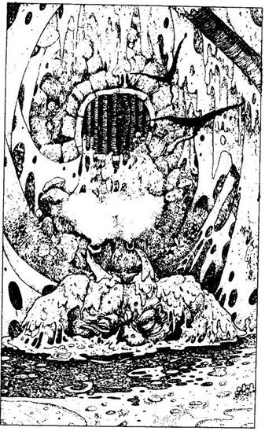
76.
Előrántod a kardodat, és amint megmozdulsz, a szobor életre kel! Nyurga lábaival leugrik hozzád, miközben két kezét még mindig imádkozva szorítja össze. Villámgyorsan feléd nyúl, és megpróbál elkapni. Ez a teremtmény nem más, mint a rettenetes ÁJTATOS MANÓEMBER, akivel meg kell küzdened.
Ájtatos Manóember ÜGYESSÉG 6 ÉLETERŐ 5
Az Ájtatos Manóember ostorhoz hasonló karjait támadásra használja. Megpróbál elkapni és behúzni a szájába, ahol borotvaéles fogai garantáltan halált okoznak. Minden Forduló előtt dobj két kockával a teremtmény nevében. Ha a dobott összeg kevesebb, mint ÜGYESSÉGE - sikerült elkapnia, és biztos halál vár rád. Ha a dobott szám ugyanannyi vagy nagyobb, mint az ÜGYESSÉGE, nem tudott elkapni - dobj Támadóerőt a szokásos módon. Egyetlen lehetőséged az, ha sikerül megsebezned a karját, mert akkor képtelen lesz elkapni. (Ezért is ilyen alacsony az ÉLETEREJE.) Ha legyőzöd - lapozz a 117-re.
77.
Zsákutcába jutottál a csatornában, ahol térdig gázolsz a szennyvízben. Nyugtalanít a lábad alatt bugyogó lé, melyből nem messze tőled egy alak emelkedik ki. Egy petyhüdt testű, hatalmas NYÁLKAEVŐ tornyosul előtted. Amikor meglát, hangosan elordítja magát, és feléd nyúl kocsonyás mancsával: Meg kell küzdened ezzel a teremtménnyel.
Nyálkaevő ÜGYESSÉG 7 ÉLETERŐ 11
Ha legyőzted - lapozz a 196-ra. Ha akarod, varázslattal is elbánhatsz vele.
GOB TÁN TEL ÁTÉ ALV
471 427 488 479 393
78.
Most hol fogod megcsókolni? A homlokán? - Lapozz az 52-re. A bal szemén? - Lapozz a 163-ra. A jobb orcáján? - Lapozz a 334-re. A bal orcáján? - Lapozz a 88-ra. Az orrán? - Lapozz a 296-ra. A száján? - Lapozz a 231-re.
79.
Flanker, a bérgyilkos, akivel Torrepani közelében találkoztál, egy nappal előtted érkezett Kharéba. Ha az alább közölt fejezetpontok bármelyikére érkezel, belebotlasz, és beszélhetsz vele. Jegyezd meg ezeket a pontokat. (Nem írhatod le őket; úgy kell tekintened, hogy ez jelenti majd azt, hogy felismered-e vagy sem.) Ha bármelyik (244 vagy 110) fejezetponthoz érnél, lapozz arra a pontra, ahová az utasítás szól, hogy megtudd, mit mond Flanker.
Ha a 244-re érkezel Lapozz a 111-re.
Ha a 110-re érkezel Lapozz a 222-re.

80.
Gúnyosan fogadják csekély adományodat. - Barátaim, tán meg akar vesztegetni ez a vándor, vagy csak alamizsnát vetett nekünk? - kérdi a vezérük. Elkapja a három Aranyadat, és odapöccint egyet-egyet mindkét társának. - Ha azt akarod, hogy ne vegyünk észre - mordul rád -, jobban tennéd, ha valamivel nagyobb kedvet csinálnál hozzá! Adj mindannyiunknak még 5-5 Aranyat! - Ha kifizeted neki a kért összeget - lapozz a 113-ra. Máskülönben, ha teheted, csakis varázslattal tudod kijátszani őket. Lapozz a 26-ra.

81.
Odaérsz az útkereszteződéshez. Három irányba mehetsz tovább. A város külterületén vagy, ahol a házak egymástól távol, a kikötővárosba vezető út két oldalán sorakoznak. A balra vezető úton néhány koszos kölyköt látsz felfelé menni, hátukon málhával. Szemben veled valószínűleg a főút az, amely egyenesen Kharéba visz. A jobb kéz felőli úton az öreget látod, aki épp az egyik házba megy be az út bal oldalán. Merre indulsz tovább?
Balra? Lapozz a 23-ra.
Egyenesen tovább? Lapozz a 138-ra.
Jobbra? Lapozz a 292-re.
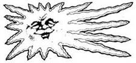
82.
Kihívásodat elfogadják. A tömeg megéljenez, amikor elfoglalod a helyedet a fehér sarokban. Meggyőződésed, hogy képes leszel legyőzni a bajnokot, aki kissé legyengült az előző küzdelemben, ám amikor átnézel rá a fekete sarokba, a szívverésed is eláll: valami csel van a dologban. A haramia titokban gyógyító varázslatot alkalmazott bajnokán, aki ezáltal tökéletesen visszanyerte az erejét. Varázsolhatsz te is, ha így akarsz segíteni magadon:
DOK VIK GAK YOB ANY
405 362 497 451 425
Librát is segítségül hívhatod - lapozz a 70-re. Ha egyik lehetőséggel sem élsz, kezdetét veszi a harc - lapozz a 323-ra.
83.
Följebb, az út mentén, egy kicsiny temető mellett haladsz el, ahol dús lombú fák állnak. Egy régi kripta körül szanaszét hevernek a sírkövek. A kripta ajtaja fölött a következő felirat olvasható: ITT NYUGSZIK SHINVA NAGYÚR - KHARÉ ÖTÖDIK FŐNEMESE. Ha be akarsz menni a kriptába - lapozz a 47-re. Ha úgy gondolod, hogy biztonságosabb lesz elhagyni a kikötőt - lapozz a 127-re.
84.
Csakhamar újabb útkereszteződéshez érsz, ahonnan vagy balra folytathatod az utadat - lapozz az 57-re, vagy egyenesen mehetsz tovább - lapozz a 322-re.
85.
Ha ki akarod venni az érmét, Tedd próbára a SZERENCSÉDET (ha nem akarod elvesztegetni a SZERENCSÉDET, távozz a tótól, és lapozz a 28-ra). A parányi ezüsthal felháborodik azon, hogy el akarod venni az érméjét, és a vízből felbukva megharap. Ha SZERENCSÉD van, sikerül megkaparintanod az érmét, de a hal így is 1 ÉLETERŐ pont sebesülést okoz a harapásával. Ha nincs SZERENCSÉD, akkor is megharap, de ismét Tedd próbára a SZERENCSÉDET (minden próbánál 1 ÉLETERŐ pontot vesztesz, mert újabb és újabb harapás ér). Ha végre sikerül megszerezned az Aranytallért, vagy ha feladod a küzdelmet, folytathatod utadat - lapozz a 28-ra.
86.
Van-e elég pénz nálad, hogy kifizesd a szoba árát? Ha van, fizess a fogadósnak 4 Aranyat, és lapozz a 282-re. Ha nincs, az utcán kell töltened az éjszakát. Lapozz a 68-ra.
87.
A teremtmény rád támad, nem tudsz kitérni előle. Hirtelen odanéz a tárna végében lévő lépcsőfeljáró aljában felvillanó fényre. Amikor a szemed megszokja a sötétet és meglátod a fényt, nem tudod eldönteni, mit is látsz valójában. Egy csillogó fehéren ragyogó nőalak áll előtted a fényben. Ujjával a koporsó felé mutat. A Halálkísértet megretten a nő láttán, és visszamegy a koporsóhoz, mint akit valamiféle szellemek vezetnek. Mozdulatai iszonyúan lassúak és lomhák: olyan, mintha minden erő elhagyta volna. Utolsó erejével bemászik a koporsóba. Odanézel a lépcsőnél álló alakra, de az időközben eltűnt! Lapozz a 209-re.

88.
Hol csókolod meg? A homlokán? - Lapozz a 314-re. A jobb szemén? - Lapozz a 2-re. A bal szemén? - Lapozz a 163-ra. A jobb orcáján? - Lapozz a 334-re. Az orrán? - Lapozz a 296-ra. A száján? - Lapozz a 231-re.
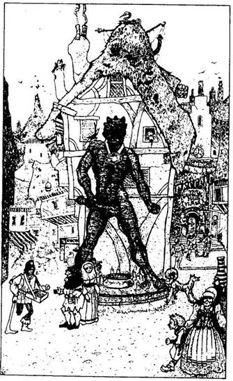
89.
Kissé följebb az úton egy elágazáshoz érsz, ahonnan vagy jobbra, vagy balra mehetsz tovább. A baloldali elágazás kivezet a városból, míg a jobb oldali egy rövidke utcába torkollik, ahol egy magas épületen a következő kiírás olvasható: VLADA JÁTÉKTERMEI. Az útkereszteződésben egy Bronzszobor áll; a lábánál sok-sok Aranytallérral teli edényt látsz. Rögtön rájössz, hogy ez nem lehet más, csupán Kharé egyik istene, és az edényben az ő híveinek ajándéka gyűlik. Ha a baloldali elágazáson mennél tovább, a városból kifelé - lapozz a 104-re. Ha a jobb oldali elágazáson mész tovább és meglátogatod Vlada Játéktermek - lapozz az 56-ra. Ha viszont a Szobor lábánál lévő edényből csennél egy marék aranyat - lapozz a 221-re.
90.
Bekiáltasz az ajtóból, hátha van benn valaki. Egy hang válaszol: - Gyere be, barátom, de vigyázz, amikor kinyitod az ajtót! - Meglököd az ajtót, és hirtelen hátraugrasz, mert az ajtó tetejéről egy folyadékkal teli üvegcse pottyan le. Belépsz a kunyhóba. Lapozz a 43-ra.
91.
Feldobsz egy érmét a levegőbe, és a kölykök azonnal civakodni kezdenek rajta. Megkérdezheted tőlük, hogy:
Honnan jöttek? Lapozz a 180-ra.
Hogyan jutsz el a város központjáig? Lapozz a 289-re.
Hallottak-e valakiről, akinek a neve Vik? Lapozz a 246-ra.
92.
Egy kis erszény repül ki a vitrinből, és a lábad elé esik a földre. Amikor kinyitod, két apró dobódárdát találsz benne. Az erszényt a derekadra kötheted, hogy a dárdák harc közben mindig kéznél legyenek. Mindkettő bűvös robbanódárda. Harc közben használhatod őket, mielőtt ellenfeled megragadna. Minden alkalommal, amikor egy dárdát elhajítasz, dobj két kockával. Ha a kapott összeg kevesebb, mint ÜGYESSÉGED, eltaláltad ellenfeledet. A dárda felrobban, és 2 ÉLETERŐ pont sérülést okoz. Ha a dobott összeg ugyanannyi vagy több, mint ÜGYESSÉGED, dobásod célt tévesztett, a dárda földbe csapódva robban fel, és nem okoz sérülést ellenfeleden. Ne feledd, hogy csupán két ilyen dárdád van. Elteszed az erszényt, és kimész a sátorból. Lapozz a 160-ra.

93.
A szobor melyikpontjával próbálkozol meg? Ha a derekán lévő övvel - lapozz a 155-re. Ha a bal térdével - lapozz a 182-re. Ha a jobb bokájával - lapozz a 212-re.
94.
Behúzódsz egy sarokba, és elalszol. Az éjszaka kellős közepén közeli léptek zajára ébredsz. Még azt sem tudod, mi történik körülötted, valaki máris fejbe vág, és elveszted az eszméletedet. Lapozz a 312-re.

95.
A férfi hátralép, és ráparancsol a kutyájára. A BORZAS VADÁLLAT rád vicsorítja fogát, és neked ugrik. Döntsd el kettőtök harcát!
Borzas Vadállat ÜGYESSÉG 5 ÉLETERŐ 7
Ha legyőzted a teremtményt - lapozz a 14-re. Ha akarod, varázsolhatsz:
ELT KIL GUM GAK ZAV
459 437 378 500 443
Ha nem akarsz megküzdeni ezzel a vadállattal, és nem akarod haragra gerjeszteni a férfit, megkérheted, hogy parancsolja vissza Borzas Vadállatát, és ezért felajánlhatod neki a kardodat - lapozz a 229-re.
96.
Odamész a tűzmesterhez, és üdvözlöd. Mosolyogva fogad, és megkérdi, vajon érdekelnek-e a tüzei. Megmutogatja neked szebbnél szebb fehér, zöld, kék és fekete tüzek, melyeket úgy készíti el, hogy megfelelő színű speciális köveket helyez a közepükre. Elbűvölnek csodaszép tüzei, de ezeknek nem igazán tudod hasznát venni. - Nem érdekelne esetleg valamelyik speciális tüzem? - kérdi. - Bújj be, és tekintsd meg őket odabenn. - Ha be akarsz menni a kunyhóba - lapozz a 108-ra. Ha inkább a festő műveit néznéd meg - lapozz a 18-ra.
97.
Ha varázstudományodat alkalmazod - lapozz a 310-re; ha megküzdesz a szárnyas vadállatokkal - lapozz a 118-ra.

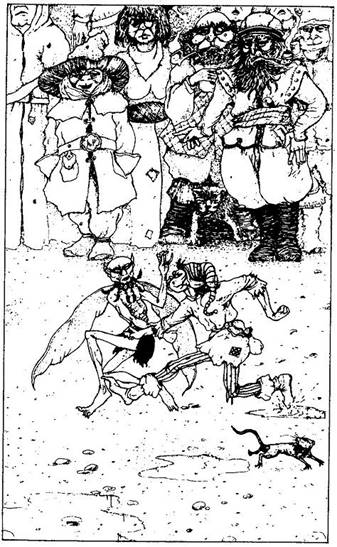
98.
A kis csoportosulás előtt két parányi, egymással dulakodó teremtményt pillantasz meg. Egy Kobold meg egy Pindur csatázik egymással. A tömeg egyik fele a Pindurnak szurkol, míg a másik fele a Koboldnak. Senki sem kísérli meg, hogy beleavatkozzon a verekedésbe. Ha megpróbálsz beavatkozni - lapozz a 392-re. Ha az egyik teremtménynek akarnál segíteni - lapozz a 321-re. Ha nem törődsz a verekedőkkel, hanem továbbmész - lapozz a 153-ra.
99.
Ha kardot használsz - lapozz a 151-re. Ha baltát - lapozz a 125-re. Ha íjat és nyílvesszőket - lapozz a 147-re.
100.
Az étel - a borzas vadvesepörkölt a spenótszerű zöldséggel - nem valami ínycsiklandó, de mosolyt erőltetsz az arcodra. A teremtmény biccent neked, és felajánl egy korsó koszos löttyöt, hogy azzal öblítsd le a finom ételt. Szándékosan feldöntöd a korsót, kiömlik az ital, és vendéglátód elugrik egy rongyért, hogy feltörölje. Most itt az alkalom, hogy ellopd a dobozt. Lapozz a 29-re.
101.
Figyelmesen hallgatod, mit válaszol a bálvány szája. - A Büszkeség Istene nem más, mint az én fivérem. Fourga a neve, és tudnod kell, hogy közel egy évszázada elvesztette a többi isten bizalmát, és Kharé lakosai sem imádják. - Hasznos-e számodra ez az információ? Most elhagyhatod a templomot. Lapozz a 109-re.

102.
Átvirrasztod az egész éjszakát, de egyetlen őr sem tűnik fel. Az öreg lefekszik a priccsére, és végül elalszik. 2 ÉLETERŐ pontot vesztesz, mert nem pihentél éjjel - és ha nem ettél volna semmit tegnap, további 3 ÉLETERŐ pont levonás jár.
Az őrök nem sokkal napfelkelte után megjelennek. Úgy látszik, megbizonyosodtak róla, hogy nem jelentettek veszélyt a városra, így szabadon engednek az öreggel együtt. Elindultok a város felé, de az öreg meglepően fürge, és csakhamar lehagy. Még látod, amint a legközelebbi útkereszteződésnél jobbra fordul, majd eltűnik a szemed elől. Lapozz a 81-re.
103.
Vagy karddal támadj rájuk - lapozz a 192-re, vagy varázsolj:
GAK MEN TÜK KIN HOM
463 446 349 363 422
104.
Addig mész lefelé az úton, míg valami furcsa látvány meg nem állít. Egy halom kő és szikla torlaszolja el az utadat. A legalább négy és fél méter magas, és másfél méter széles kör alakú halom feketén csillog. Ha meg akarod vizsgálni, mi az - lapozz a 65-re. Ha nem törődsz vele, hanem továbbmész - lapozz a 319-re.
105.
Átkutatod a gyilkos zsebeit, és 8 Aranytallért találsz bennük. Nincs a szobában semmi igazán értékes dolog, csak egy "Méreg" feliratú csupor, amit elteszel. Egy másik csuporban "Fakéregesszencia" van; ezt szintén elteheted. Ezt követően elhagyod az épületet. Lapozz a 46-ra.
106.
A ló hatalmasat szökkenve, kapálódzva vágtat veled lefelé az úton. Nem tudod megállítani, de sikerül megkapaszkodnod benne, és nem esel le a hátáról. Lapozz a 268-ra.
107.
Ennek a tárgynak a segítségével sikerül megtalálnod a varázsige egyik sorát. Ha követed azt az irányt, amerre ez a tárgy vezet téged, megtalálod azt a személyt, aki ismeri a varázslat egyik sorát. Ha majd ezt a tárgyat használod - lapozz a 319-re. Most azonban menj vissza a 264-re.
108.
Belépsz a kunyhóba. A szoba közepén, lenn a földön egy kéménylyuk alatt vadul lobog a tűz. Bár a lángok magasra csapnak, valójában alig árasztanak meleget, és amikor belenézel a tűzbe, a parázson egy faládát látsz a lángok közepén - de a tűz nem fogja! Ha ez nyugtalanít, kimehetsz a kunyhóból, és folytathatod az utadat - lapozz a 137-re. De kiagyalhatod azt is, hogyan nézhetnéd meg, mi rejlik a ládában. Ha megpróbálsz bemászni a lángok közé, mivel azok egyáltalán nem melegek - lapozz a 130-ra. De varázsolhatsz is, ha akarsz:
FÉM TEL SÁP GOP VAR
467 420 346 478 453

109.
Kimész a szentélyből, és folytatod az utadat. Feltűnik előtted a hatalmas Északi Kapu. Ezt a kaput szigorúan őrzik, és megfelelő tervet kell kidolgoznod ahhoz, hogy kijátszd az őröket. Lapozz a 175-re.
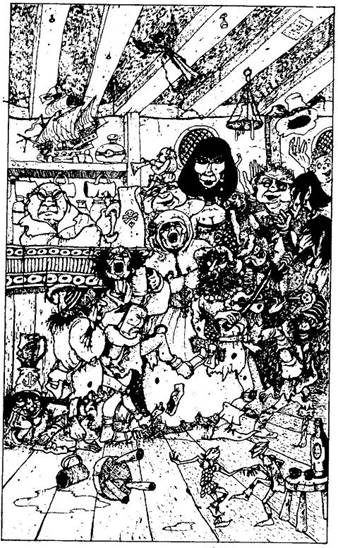
110.
Belépsz a "Megfáradt Vándor"-hoz címzett fogadóba. A zajos, zsúfolt teremben senki nem vesz rólad tudomást, amikor belépsz. A pult mögött áll a kocsmáros, aki megpróbálja kiszolgálni a sörüket egyszerre követelő vendégeket. Ez lehet a helyi fogadó, ide járnak a kikötő matrózai; tengerészlegények és dús keblű fehérszemélyek nevetgélnek és tengerészdalokat énekelnek az asztalok körül. Végre felfigyel rád a mogorva, kopasz fogadós, aki tudja, hogyan kell bánni a kikötői gyülevész népséggel, és meglepődik, amikor meglátja az errefelé szokatlan rendes öltözékeket és észreveszi úri modorodat. - Mi szél hozott erre a fertályra? - kérdi. Ágyat kérsz éjszakára, mondod, meg valami ételt, majd megkérded, mit kell érte fizetned. - Egy jó szoba ára 4 Arany - mondja. - Az étel meg szintén 4 Arany. - Ha ennél, mielőtt lepihensz - lapozz a 331-re. Ha csak szállást kérsz és a saját Élelmedet fogod fogyasztani - lapozz a 282-re. Ha nincs annyi pénzed, hogy akár egyél vagy megszállj itt - lapozz a 68-ra.
111.
- Aha! Itt az én barátom és egyszersmind ellenségem! - mondja nevetve Flanker, amikor felismer. - Te is a vásárban gyönyörködsz, akárcsak én? Gyere, meséld el, mi történt veled azóta, hogy utoljára találkoztunk, jobban mondva összecsaptunk. - Elmeséled, milyen kalandokban volt részed, mióta megérkeztél Kharéba, és azt is, hogy az Északi Kaput nyitó varázsige sorait keresed. - Hm. Fogalmam sincs, tudok-e segíteni - mondja. - A barátom, az Idősebb Lortag itt lakik nem messze. Ő bölcs ember, talán tud valamit erről a varázsigéről. - Ha már ismered a keresett varázsige valamelyik sorát, akkor már voltál Lortagnál, ezért lapozz a 244-re, és döntsd el, mint fogsz csinálni a vásárban. Ha a varázsige egyetlen sorát sem ismered, elmehetsz Flankerral a barátjához. A Déli Kapu felé visz az úton, ahol egy takaros háznál megáll, és elbúcsúzik tőled. Egyedül mész oda a bejárati ajtóhoz. Lapozz a 140-re.

112.
Óvatosan kinyitod az ajtót. Bent egy kis szobát találsz. Középen, a földön, egy körülbelül másfél méter átmérőjű csillogó, fekete kört látsz. Mielőtt még bármit is tehetnél, megragad az ajtó túloldalán álló őr. - Egy újabb bajkeverő, mi? - mondja, és belök a fekete kör közepére. Valamiféle csobbanó hangra vársz, de meglepetten tapasztalod, hogy nem folyadékba lökött bele. Lapozz a 270-re.
113.
Felcsillan a szemük, amikor az erszényedből előhúzol 15 Aranytallért. - Ez valami nemesember lehet, barátaim! - mondja kajánul nevetve az egyik őr, miközben elveszi a pénzedet. - Tedd azt, amihez kedved van, vándor! Nekünk más fontos dolgunk van, nem igaz? - Magával hívja másik két társát, és továbbmennek a fal mellett, hagyják, hogy elindulj a kapu felé. Lapozz a 271-re.

114.
A Dögnyúzó megragad a csápjaival. Felüvöltesz fájdalmadban - csápjai végén veszedelmes fullánkok vannak, melyek a szokásos 2 pont helyett 3 pontot sebeznek ÉLETERŐDBEN. Lapozz vissza a 243-ra, és küzdj meg a Dögnyúzóval, de ne feledd, hogy ahányszor megsebez, szúrós fullánkja mindig egy ponttal nagyobb kárt tesz ÉLETERŐDBEN!
115.
- Nos, lássuk csak! - mondja. - Nem, nem hiszem, hogy ez a helyes megoldás. Én már megpróbálkoztam ezzel a verzióval, és semmi értelme. Nem baj. Köszönöm, hogy egyáltalán megpróbáltál segíteni. Most pedig jobb lesz, ha folytatod az utadat. Örülök, hogy ilyen kellemesen elbeszélgettünk, és sok sikert kívánok neked további utad során. Gondolom, erre szükséged lesz, ha majd segítségre szorulsz Kharéban - s ezzel átad neked egy bugyellárist, amelyben egy maroknyi zöld szőrféleséget látsz. Csak akkor jössz rá, amikor kibontod, hogy egy parókát kaptál. Megköszönöd neki, és amikor kivezet az ajtóhoz, átadja a fegyveredet. Lapozz a 133-ra.
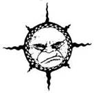
116.
- Mi van, te bolond, most jöttél le a falvédőről? - kérdezi az egyik teremtmény. Miközben rád néz, hirtelen így kiált: - Egy idegen! Testvéreim, egy idegen van közöttünk! Megtréfáljuk? - A többiek is feléd fordulnak, és rád "néznek" csukott szemükkel. Megragadnak, és a medence felé taszítanak. Tedd próbára a SZERENCSÉDET! Ha SZERENCSÉD van - lapozz a 290-re. Ha nincs SZERENCSÉD - lapozz a 330-ra.

117.
Elveszed az Aranymedált a teremtménytől. A medál körülbelül 8 Aranytallért ér. (Mindent megvehetsz érte, ami nem kerül többe 8 Aranynál, de ha olyasmit veszel, aminek az ára kevesebb, mint 8 Arany, a visszajáró pénzt nem kapod meg.) A medál közepén egy ragyogó Napékszer van, amely fényesen csillog. Tedd el a hátizsákodba, írj be magadnak plusz 1 SZERENCSE pontot, amiért sikerült túlélned ezt a találkozást, aztán folytasd az utadat. Lapozz a 137-re.

118.
Kardot rántasz, és a magasból rád támadó HÁRPIÁK felé csapsz vele. A koldus segítségedre siet a botjával, de nem sok hasznát veszed, hiszen vak. Döntsd el a harc kimenetelét:
ÜGYESSÉG ÉLETERŐ
Első Hárpia 7 6
Második Hárpia 6 6
Vak koldus 2 8
Te döntöd el, ki kivel csap össze a harc során, mindaddig, amíg mindenki mindenkivel meg nem küzd. Ha megölöd a Hárpiát - lapozz a 74-re.
119.
A Lánckészítő mester lekap egy láncot a falról. Meglengeti a feje fölött, így közeledik feléd. Ha akarsz, varázsolhatsz ellene:
PÉL FIX DEM RAN HOM
370 345 502 440 449
Ha inkább megküzdesz vele:
Svinn lánckészítő mester ÜGYESSÉG 8 ÉLETERŐ 7
Ha ÉLETERŐD 5-re vagy ez alá csökken, láncai előnyt fognak jelenteni a számára. Ha ugyanakkora Támadóerőt dobsz a Lánckészítőnek is, mint amennyit magadnak, ez azt jelenti, hogy sikerült sebet ejtenie rajtad. Ha te győzöl - lapozz a 195-re.
120.
Az utcákat róva újabb elágazáshoz érsz, ahonnan vagy egyenesen mész tovább - lapozz a 60-ra, vagy térj le balra - lapozz a 139-re.

121.
Figyelmesen néznek, amint elhaladsz mellettük. Tökéletesen tisztában vannak azzal, hogy kész vagy megverekedni velük, de ez nem látszik rajtuk. Egyikük hirtelen elkiáltja magát, erre mindannyian rád támadnak. Meg kell küzdened velük! Lapozz a 103-ra.
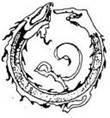
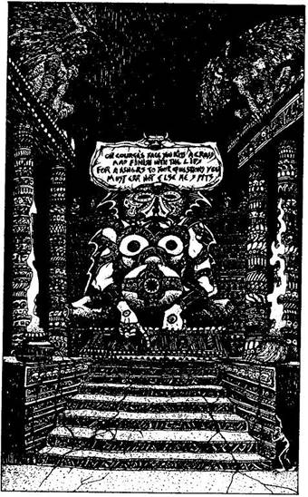
122.
Odamész az ember nagyságú bálványhoz, amelynek a feje fölött egy vésett táblát pillantasz meg. Amikor elolvasod, rájössz, hogy ez olyan üzenet, amelynek a segítségével beszélni tudsz a bálvánnyal. Ha ki akarod próbálni, hogyan működik - lapozz a 252-re. Ha nem akarod kipróbálni, elhagyhatod a templomot - lapozz a 109-re.
123.
Letérdelsz. Nevetgélést hallasz a hátad mögül, és ekkor valaki a csizmás lábával úgy farba rúg, hogy belezuhansz a medencébe! A várt csobbanás azonban elmarad. Lapozz a 270-re.
124.
Elmondod a varázsigét, és vársz. Végigfut a hideg a hátadon, amikor meghallod a kapu nyikorgását. Ám ahelyett, hogy a tárt kaput látnád magad előtt, egy szellem alakú ködfelhőt pillantasz meg, amely a kapukeret tetején elhelyezett fadobozból száll föl. A szellemalak úgy ugrál a levegőben, akár egy zsinóron rángatott bábu. Kővé dermedve figyeled. Hirtelen rád veti magát, és mielőtt bármit tehetnél, elnyel! Köhögsz, izzadsz, pánikba esel, amikor rájössz, hogy a KÉNSZELLEM karmai közé kerültél, melynek mérgező gázai megfojtanak! Nemhiába figyelmeztettek, hogy az Északi Kapunak saját védelmi rendszere van, és avatatlan személy csak élete kockáztatásával vállalkozhat arra, hogy a kaput kinyissa. A te életed most odaveszett…
125.
Amikor fölemeled a fegyveredet, a teremtmény közelebb lép hozzád. Lapozz a 151-re.
126.
Odaszólsz a többi őrnek, és közlöd velük, hogy 2 Aranyat elszedett tőled a társuk. Gyanakvó pillantást vetnek a kapuőrre, de az dühösen tagad, és könyökével jól gyomorszájon vág. Vesztesz 2 ÉLETERŐ pontot, és lapozz a 291-re.
127.
Az úton valamivel följebb egy kúthoz érsz. Egy csigán átvetett kötél lóg le a kútba. Odamész, s közben hallod, amint egy nő énekel. A hang a kútból jön, és mintha neked szólna:
"Kedvesem, megmondom, milyen jövő vár rád,
Ha tenyerembe teszed aranyad javát."
Ha be akarsz dobni egy Aranytallért a kútba - lapozz a 217-re. Ha inkább nem, és továbbmész - lapozz a 319-re.
128.
Az állat különös pillantással néz rád. Megpróbálod néhány kedves szóval megnyugtatni, de nem nagyon hallgat rád. Végül feladod ezt az egyoldalú társalgást. A ló elég nyugodtnak látszik, megpróbálhatsz felülni rá - lapozz a 49-re. Ha akarod, ott is hagyhatod, és folytathatod az utadat - lapozz a 237-re.

129.
Végigzuhansz a földön, és miközben gondolatban segítségért könyörögsz, elájulsz. Kis idő múlva kinyitod a szemedet. A gyilkos ott fekszik a földön. Fogalmad sincs róla, mi történt, egy dologban azonban biztos vagy: ez istennőd műve volt! Tudnod kell azonban, hogy mindaddig nem hívhatod őt ismét segítségül, amíg el nem hagyod a kikötővárost. Magadra maradtál. Lapozz a 105-re.

130.
Óvatosan belépsz a tűzbe. Bár a lángok nem égetnek meg, a tűz sisteregve, szikrázva feléled. Mintha ez figyelmeztető jel lenne, a tűzmester megjelenik az ajtóban. Kimondhatatlanul mérges rád, amiért lopni akartál a ládájából, ezért szénport szór a tűzre. Felordítasz a fájdalomtól, mert a lángok átforrósodnak, és ott állsz a tüzes pokol kellős közepén! Úgy ugrasz ki a lángok közül, akár egy égő fáklya. Égési sebeid miatt 5 ÉLETERŐ pontot vesztesz. Lecsapkodod a lángokat a ruhádról, és ekkor a tűzmester fölszólít, hogy távozz. Lapozz a 137-re.
131.
Abból az utcából, amelyen mész, egy újabb utca nyílik. Ha jobbra fordulsz rajta, eljutsz Kharé központjába. Lapozz a 165-re:

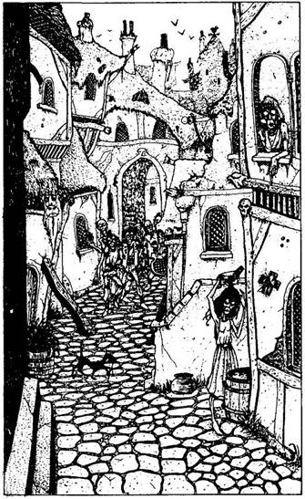
132.
Egy keskeny, kanyargós úton indulsz el, amely tele van üzletekkel és különböző árusok standjaival. Még igen korán van, és az üzletek csak egy-két óra múlva nyitnak ki, de a házak előtti sürgölődésből arra lehet következtetni, hogy a nap elkezdődött. Az egyik ablakban egy arc jelenik meg, és úgy érzed, mintha téged nézne, amint elhaladsz; ugyanakkor azt is látod, hogy az illető szeme csukva van, így nem vagy teljesen biztos benne, hogy valójában lát-e. Egy másik hasonló teremtmény az ajtónál áll és az utca kövét mossa. A vékony, nyurga teremtésnek hosszúkás az arca, és az ő szeme is csukva van. Kissé följebb fiatal férfiak állnak csapatba verődve az úton. Egyikük "észrevesz", és mond valamit a többieknek. Lehet, hogy ebből baj lesz? Ha továbbmész az utcán, és szívélyesen üdvözlöd őket, amikor elhaladsz mellettük - lapozz a 286-ra. Ha továbbmész, de felkészülsz rá, hogy esetleg megtámadnak - lapozz a 121-re. Ha lemész egy mellékutcán és elkerülöd őket - lapozz a 24-re.
133.
Kissé följebb a kereskedők fertályára érsz, az úton, ahol fazekasok, takácsok és különböző kézművesek kínálgatják portékáikat a kunyhóik előtt. Ha megállsz szemlélődni - lapozz a 3-ra. Ha továbbmész - lapozz a 137-re.
134.
A szoba egyik sarkában, egy szekrényben két címkével ellátott üveget találsz. Az egyik flaskában "Bodzaszörp" van, amely tudomásod szerint gyógyító erejű ital, míg a másikban olyan ragasztó van, amilyet a Lánckészítő mesterek szoktak használni, amikor az apró láncszemeket akarják összeilleszteni. Elteheted a két üveget, és elhagyhatod a kunyhót - lapozz a 9-re, vagy tovább kutathatsz benne. Ha további kincsek után kutatsz, ismét Tedd próbára a SZERENCSÉDET! Ha SZERENCSÉD van - lapozz a 235-re. Ha nincs SZERENCSÉD - lapozz a 19-re.
135.
Menet közben az egyik utcában egy piachoz érsz. Ha kíváncsi vagy, miféle portékát árulnak itt - lapozz a 226-ra. Ha továbbmész az utcán - lapozz a 83-ra. Ha nincs elég pénzed, bemehetsz az utca bal oldalán lévő nagy épületbe, amelyen ott a kiírás: VLADA JÁTÉKTERMEI - lapozz az 56-ra.
136.
Most láthattad, hogyan küzd a bajnok. Ha kiállsz ellene és megpróbálod elnyerni a 15 Aranytallért - lapozz a 82-re. Ha nem, el kell hagynod a fesztivál színhelyét - lapozz a 263-ra.
137.
Addig mész az úton, amíg egy hármas elágazáshoz nem érsz, ahonnan északnak folytatod az utadat. Lapozz a 191-re.
138.
Elindulsz az úton az aprócska kunyhók felé. Ahogy elhaladsz előttük, undorító teremtményeket látsz, akik napi teendőjüket végzik, közben vizsla szemmel figyelnek. Nem messze tőled, az út menti csatorna szélén egy ember fekszik a hasán. Első pillantásra úgy látod, hogy ez egy alvó koldus vagy valami hullarészeg teremtmény. Ha megnézed, nincs-e szüksége némi segítségre - lapozz a 256-ra. Ha rá se hederítesz, hanem továbbmész - lapozz a 239-re.
139.
Kissé följebb egy kis kápolna előtt haladsz el az utcán. A kiszüremlő hangokból arra következtetsz, hogy valamiféle találkozó zajlik odabenn. Ha meg akarod nézni, mi folyik a kápolnában - lapozz a 187-re. Ha megállás nélkül folytatod az utat - lapozza 165-re.
140.
Díszesen faragott tölgyfa ajtó előtt állsz. A közepén hatalmas sárgaréz kopogtató van, amit háromszor megkoccantasz. Egy pillanattal később az ajtó kinyílik, és egy köntöst viselő idős férfi jelenik meg előtted. Egy különös, gyíkhoz hasonló tüskés teremtmény gubbaszt a lábánál. Félénken köszönsz az öregnek. Visszaköszön, és úgy látod, nem barátságtalan. Beenged a kapun, de csak a fegyvered nélkül. Ha átadod neki a fegyveredet - lapozz a 229-re. Ha a fegyvereddel rontasz be - lapozz a 95-re.
141.
Amikor megcsókolod a száját, a bálvány szeme kinyílik. A szája meg sem moccan, de lágy hangon suttogva így szól hozzád: - Te nem az én hívem vagy, idegen! Mindazonáltal eleget tettél a szertartás követelményeinek, így megérdemled, hogy válaszoljak egy kérdésedre. - Mit kérdezel az istentől? Ha azt, hogy ki ismeri a varázsigét, amely az Északi Kaput nyitja - lapozz a 31-re. Ha azt, hogy mit tartogat számodra a sors Baklandban - lapozz a 266-ra. Ha azt, hogy mi a neve a Büszkeség Istenének - lapozz a 101-re. Ha azt, hogy miként tudod elkerülni az Északi Kapu őreit - lapozz a 193-ra.

142.
Elmondod a varázsigét, és vársz. Végigfut a hideg a hátadon, amikor megnyikordul a kapu. Ahelyett azonban, hogy a tárt kaput látnád magad előtt, egy szellem alakú ködfelhőt pillantasz meg, amely a kapukeret tetején elhelyezett dobozból száll föl. A szellemalak úgy ugrál a levegőben, akár egy zsinóron rángatott bábu, és te kővé dermedve figyeled. Hirtelen rád veti magát, és mielőtt bármit tehetnél, elnyel! Köhögsz, izzadsz pánikba esel, amikor rájössz, hogy a KÉNSZELLEM karmai közé kerültél, amelynek a mérgező gázai megfojtanak! Nemhiába figyelmeztettek, hogy az Északi Kapunak saját védelmi rendszere van, és avatatlan személy csakis az élete kockáztatásával vállalkozhat rá, hogy a kaput kinyissa. A te életed ezúttal odaveszett…
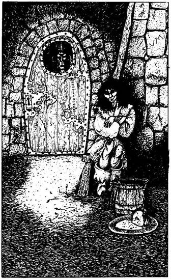
143.
Elveszik a hátizsákodat és a fegyveredet, és bezárnak egy cellába, melyet egy Vörösszemű őr tart szemmel. Cellatársad, egy vidám kis ELVIN, boldogan üdvözöl új otthonodban. A Shamutanti dombokból ismert Elvin völgyből való. Mivel már több hónapja itt raboskodik a cellában, boldog, hogy végre társa akadt. Megkérded, hogyan lehetséges, hogy eddig nem volt képes megszökni, hisz az Elvinek mágikus erővel rendelkeznek. Erre ő csak megrázza a fejét, és közli veled, hogy itt a tömlöcben képtelen akár egyetlenegy varázslatot is működésbe hozni. Úgy véli, hogy itt a tömlöcben valószínűleg az ÖSSZEZAVARÓ Varázslat lenne hatásos.
Elképzelhető, hogy utad során találtál egy kulcsot, amely beleillik a cella zárjába. Ha így van, kivárhatod a pillanatot, amikor az őr elalszik, majd kinyithatod a cellátok ajtaját. Lapozz arra a pontra, amilyen szám a kulcsodon van. Ha nincs ilyen kulcsod, csak úgy menekülhetsz meg, ha Librát hívod segítségül, persze csak akkor, ha eddig még nem fordultál hozzá segítségért (lapozz a 30-ra). Máskülönben életed végéig Kharé tömlöcének foglya leszel.

144.
Az útkereszteződésnél vagy egyenesen mehetsz tovább - lapozz a 165-re, vagy jobbra fordulhatsz - lapozz a 120-ra. Melyik utat választod?
145.
A teremtmény áthajol az asztalon, és ledobja a merőkanalat meg a kanalat. Ha fegyveredet ráfogva követeled, hogy adja át neked az asztal alatt lévő dobozt - lapozz a 273-ra. Ha azzal próbálod meg becsapni, hogy megkérdezed tőle, vajon vehetsz-e nála valamilyen élelmet - lapozz a 283-ra.
146.
A Bronzszobor figyeli, amint aranyadat az edénybe hajítod. Nem tudja eldönteni, hogy megtámadjon-e. Míg eldönti, elmenekülhetsz az egyik utcán. Ha a városból kivezető úton menekülsz el - lapozz a 104-re. Ha a jobb oldali elágazáson mész Vlada Játéktermeiig - lapozz az 56-ra.
147.
Előveszed az íjadat, és megeresztesz egy nyílvesszőt támadód undorító koponyája felé. Dobj két kockával, és a kapott összeget hasonlítsd össze ÜGYESSÉG pontjaid számával. Ha a dobott összeg ugyanannyi vagy kevesebb, mint ÜGYESSÉGED, jól céloztál. Ha a kapott összeg nagyobb, mint ÜGYESSÉGED, célt tévesztettél.
Helyesen választottál, amikor ezt a fegyvert vetted elő, mert csak ezzel tudsz sebet ejteni a gonosz HALÁLKÍSÉRTETEN. Ez az élőholt teremtmény kizárólag ezüstfegyverrel sebezhető meg, és a te nyílvesszőid hegye ezüstből van. Egyetlen találat 2 ÉLETERŐ pontot sebez rajta. Küzdj meg vele a szokásos módon, de minden alkalommal, amikor a teremtményénél magasabb Támadóerőt dobsz magadnak a dobókockával, döntsd el ÜGYESSÉGEDET a fent leírt módon, hogy megtudd, vajon jól céloztál-e.
10 nyílvessződ van, és ha ennyi nyílvesszővel nem végeznél a Halálkísértettel, úgy ő fog megölni téged.
Halálkísértet ÜGYESSÉG 9 ÉLETERŐ 8
Ha megölöd a teremtményt - lapozz az 54-re.
148.
Az Északi Kapu felé tartasz. Elhagyod Kharé városát, és a távolban feltűnik előtted a Nagy Fal, amely keresztezi utadat. Egyetlen épület áll már csak a kapuig vezető úton, egy fényűző palota. Mikor a közelébe érsz, akkor látod, hogy ez egy hatalmas templom. Valóban különös látvány. A templom ajtajáig vezető rövid ösvény két szélét ősi istenek totemei szegélyezik. A piramis alakú épület az egekbe nyúlik. Vízköpő sárkányok szobrai és egyéb csillogó fémszobrok díszítik a palota minden oldalát. A bejárati ajtó körül soha nem látott, minden képzeletet felülmúló teremtmények kőszobrai sorakoznak oltalmazóan. Ha be akarsz lépni Courga Szentélyébe - lapozz a 73-ra. Ha inkább továbbmész az Északi Kapuhoz - lapozz a 109-re.
149.
A vegyesboltban sokféle áru kapható. A következő árucikkek érdekelnek (bármelyiket megveheted):
Különböző fajtájú kesztyűk 5 Aranytallér párja
Egy üveg, melynek címkéjén ez áll:
"A titokzatosság itala" 2 Aranytallér
Élelem 3 Aranytallér egy adag
Egy tál méhviasz 2 Aranytallér
Egy porral teli kis üvegcse 3 Aranytallér
Döntsd el, mit akarsz megvenni, és lapozz a 199-re. Ha a fenti áruk közül semmit sem akarsz megvenni, továbbmehetsz - lapoz a 170-re.
150.
Odaülsz hozzájuk a matracra. Rád vigyorognak, és kivillan sárga, ápolatlan foguk. Egy pipát nyújtanak oda neked, néhányat pöfékelsz, majd hátradőlsz. A pipa körbemegy, és csakhamar mind a négyen bambán bámultok a levegőbe. Kissé szédülni kezdesz. A Kapadohánynak azonban előre nem látható hatása van. Dobj egy kockával, hogy megtudd, mi történik veled:
1. Nyugodt, kellemes érzés hat át - nyersz 2 ÉLETERŐ pontot.
2. Hatalmas önbizalom áraszt el - nyersz 2 ÜGYESSÉG pontot a következő csatád idejére.
3. Álmosnak érzed magad, és húsz percet szundítasz.
4. Ellenállhatatlan kényszert érzel, hogy valami ésszerűtlen dolgot tégy - adj mindegyik Elfnek 1 Aranyat.
5. Úgy érzed, mintha megőrülnél - vonj le magadtól azonnal 1 ÉLETERŐ pontot, és csökkentsd ÜGYESSÉGEDET 1 ponttal a következő harcban.
6. Erőszakoskodni kezdesz és kardot rántasz - lapozz az 58-ra.
Ha nem 6-ost dobsz - lapozz a 242-re.

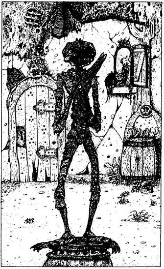
151.
Kardot rántasz, és kiállsz a teremtmény ellen. Amikor a fény ráesik az arcára, megpillantod a HALÁLKÍSÉRTET iszonyatos koponyáját. Küzdj meg vele.
Halálkísértet ÜGYESSÉG 9 ÉLETERŐ 8
Amikor az első csapást méred a teremtményre - lapozz a 189-re.
152.
"Köszönöm az aranyakat néked,
Adj még egyet, s baj nem érhet téged!"
Ha még egy aranyat bedobsz a kútba - lapozz a 295-re. Ha inkább továbbmész - lapozz a 319-re.
153.
Elhagyod a Törpék faluját, és folytatod utadat. Kissé följebb az úton egy magányos, zsúpfedeles házhoz érsz. A ház előtt egy szobor áll. Egy férfit vagy ahhoz igen hasonló lényt ábrázol, melynek hosszú, vézna végtagjai vannak. Két tenyerét összetéve mintha imádkozna. Bár maga a teremtmény is különös, figyelmedet mégis a nyakában lógó aranymedál vonja magára. Úgy látod, a medál túlzottan értékes ahhoz, hogy csak úgy ott lógjon egy őrizetlen szobor nyakán. Lehetséges, hogy igen értékes, sőt mi több, lehet, hogy varázsereje van. Mit teszel?
Jobban szemügyre veszed a szobrot? Lapozz a 8-ra.
Bemész a kunyhóba a szobor mögött nyíló ajtón? Lapozz a 27-re.
Nem engedsz a csábításnak, és továbbmész. Lapozz a 137-re.
Varázsolsz?
VAR TÁV GOB ERŐ CSA
482 413 359 429 472
154.
Végül egy alak jelenik meg az ajtóban, akit azonnal felismersz. Ő az az öreg, akivel az őrök szobájában találkoztál. - Hát te vagy az, barátom! -
mondja, amikor meglát. - Ha jól látom, Lánckészítő mesterünk csapdájába kerültél. Szerencséd, hogy nem ő talált rád. - Az öreg megígéri, hogy kiszabadít, ha visszaadod a 3 Aranyat és a két üvegcsét, amit elloptál. Odaadod neki, amit kér, és ő kiszabadít. - Jobb, ha most gyorsan eltűnsz - figyelmeztet -, még mielőtt a Lánckészítő mester visszajön. - Megköszönöd a segítségét, és kimész a kunyhóból. Lapozz a 9-re.
155.
Az övvel bajlódsz, de itt a derekán sem fedezel fel semmiféle gyenge pontot. A hatalmas Szobor csak nézi, ahogy övének csatját megpróbálod kinyitni, és ekkor mindkét kezével lecsap rád, majd a testéhez szorít. Hány ÉLETERŐ pontod van? 10 vagy több? Ha ennyi, túléled a csapást, de ÉLETERŐDET 5-re kell csökkentened. Ha ÉLETERŐD 10-nél kevesebb, az ütéstől elveszted az eszméletedet, és a Bronzszobor végez veled, míg a földön fekszel. Ha még mindig életben vagy, tenned kell valamit, hogy feltartóztasd a támadást. Dobd az összes aranyadat a talapzaton lévő edénybe, és lapozz a 146-ra.
156.
A magasba emeled a kezedet, és elfogadod a kihívást. - És mondd, ki a te istened, idegen? - kérdi a pap. Megmondod neki. - Libra, az Igazságosság Istennője? Nem hallottam róla - mondja. Majd meglátod, hogy Slangg sokkal hatalmasabb istenség. Nos, lássuk, vajon a te istennőd, Libra, tud-e segíteni neked Slangg kihívásában? Ha helyesen válaszolsz a kérdésemre, kívánhatsz tőlem bármit. De ha nem tudsz válaszolni a kérdésemre, meg kell tagadnod Librát, és át kell pártolnod Slangghoz. Rendben van? - Bólintasz, és megkéred, hogy tegye fel a kérdését.
- Az idősebb Nagylábú délnek ment, s vagy hárommérföldnyi földön zabot vetett, majd kelet felé indult, és legalább kétmérföldnyi kukoricát vetett, onnan északnak fordult, és ötmérföldnyi búzát vetett, végül délnyugatnak tartott, és négymérföldnyi lucernát vetett. Megjegyeztél mindent? Feladhatom a kérdésemet? - Ha készen állsz, lapozz a 301-re.
157.
Hány Aranyat ajánlasz fel?
Mindegyiküknek 1 Aranyat? Lapozz a 80-ra.
Mindegyiküknek 3 Aranyat? Lapozz a 287-re.
Mindegyiküknek 5 Aranyat? Lapozz a 113-ra.
Ha nem tudsz legalább 1 Aranyat adni mindegyiküknek, lapozz a 26-ra és varázsolj, máskülönben nem jutsz tovább.
158.
Kilesel az utcára, majd óvatosan kimész a kunyhóból. Senki sincs a közelben. Elmész egészen a főutcáig, és ott folytatod az utadat. Lapozz a 89-re.
159.
2 ÉLETERŐ pontot vesztesz, amiért egész éjjel ébren voltál. Hajnalban folytatod az utadat. Lapozz a 267-re.
160.
Közeledsz Kharé központja felé. Itt már a házak és viskók egyre sűrűbben sorakoznak egymás mellett, és az utcák is koszosak. Különböző teremtmények ácsorognak az utcán, és lesik lépteidet. Egy elágazáshoz érsz, ahol balra fordulhatsz - lapozz a 202-re, vagy továbbmehetsz a kikötő felé - lapozz a 165-re. Merre mész?
161.
Fogalma sincs az Északi Kaput nyitó varázsigéről, és dühös, amiért megzavartad a munkájában. Most vagy kimész a kunyhóból - lapozz a 9-re, vagy rátámadhatsz, ha át akarod kutatni a szobáját - lapozz a 119-re.
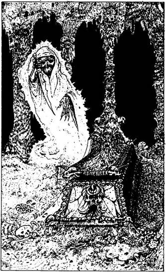
162.
Az íj és a nyílvesszők, a tűzszerszám meg a kígyóméreg ellenszere egyszerű tárgyak, varázserővel nem rendelkeznek. A pallost elég nehéz használni, de segítségével majd nagyobb kárt tehetsz ellenfeledben, mintha csak egy egyszerű karddal küzdenél. Ha megvetted a pallost, használhatod majd a harcokban, de ilyenkor 1 pontot mindig le kell vonnod a Támadóerődből, és ha sebet ejtesz vele valakin, akkor a 2 pontnyi ÉLETERŐ veszteség helyett 3 pontot kell levonni. Most elhagyhatod a vásárt. Lapozz a 83-ra.
163.
Hol csókolod meg? Ha a homlokán - lapozz a 314-re; ha a jobb szemén - lapozz a 2-re; ha a jobb orcáján - lapozz a 334-re; ha a bal orcáján - lapozz a 88-ra; ha az orrán - lapozz a 296-ra; ha a száján - lapozz a 231-re.
164.
Óvatosan lopakodsz le a lépcsőn. A falak nedvesek és a levegőben rothadás szaga terjeng. Csak a lentről jövő vízcsöpögés zaját hallod, semmi mást. Amikor leérsz a lépcsőn, egy nagy, sötét, csupán a lépcső felől megvilágított terembe érsz. Egy koporsó áll a terem közepén. Odamész, hogy közelebbről is megszemléld. Ekkor nyikorgó hangot hallasz, és a szívverésed is eláll! A koporsó teteje megmozdult! Ámultan nézed, amint egy arasznyira kinyílik, és ekkor bal kéz felől valami megmozdul! Egy sötét falmélyedésből fehér szellemalak közeledik feléd! A félelemtől szinte földbe gyökerezik a lábad, és képtelen vagy varázsolni. Ha előrántod a fegyveredet - lapozz a 99-re. Ha felrohansz a lépcsőn és kimenekülsz a kriptából - lapozz a 16-ra.
165.
A közelgő éjszakát semmi kedved Kharé utcáin tölteni. Megállítasz egy nőt, és megkéred, igazítson útba a legközelebbi fogadóhoz. - Menj egyenesen a kikötő felé - mondja. - Arra találsz majd egy fogadót. De siess, idegen, mert hamarosan leszáll az éj. - Megköszönöd az útbaigazítást és továbbmész. Végül eljutsz a "Vándor Pihenője" nevű fogadóhoz, és bemész. Lapozz a 110-re.
166.
Ez a hátizsák nagyobb, mint a tiéd, ha akarod, kicserélheted. Ha ezt teszed, az új hátizsákba sokkal többet pakolhatsz, mint az előzőbe, és még ha azt az utasítást kapod is, hogy "ha ezt a tárgyat magaddal akarod vinni, úgy egy tárgyról le kell mondanod" - akkor sem kell ennek eleget tenned, hanem egyszerűen csak elteszed az újat, és nem kell megválnod egyik régi tárgyadtól sem. Lapozz a 264-re.
167.
Egy SZERENCSETALIZMÁNT kaptál. Mindaddig, amíg ez nálad van, ha Próbára teszed a SZERENCSÉDET, kockadobásodból 1 pontot levonhatsz. Ha már eddig is volt ilyen SZERENCSETALIZMÁNOD, ezt a jutalom pontszámot nem duplázhatod meg, amiért két talizmánod van. Most elhagyhatod a sátrat, és folytathatod az utadat. Lapozz a 160-ra.
168.
Minden beugróba benézel, hátha ráakadsz valami rejtekhelyre vagy titkos átjáróra, de semmit nem találsz. Ha a kegytárgyakat nézed meg, hátha elcsenhetsz valamit - lapozz a 205-re. Ha odamész az oltárhoz - lapozz a 122-re.
169.
Megpróbálsz benyitni a ház ajtaján. Zárva van, de a kulcs benne van a zárban. Elfordítod a kulcsot, és benyitsz az ajtón. Abban a pillanatban, ahogy belépsz, a hátad mögött becsapódik az ajtó és a kulcs ismét elfordul. Fogoly vagy! Lapozz a 254-re.
170.
Ha most elhagyod ezt a környéket és továbbmész az úton - lapozz a 153-ra. Ha csatlakozol az utcai verekedést szemlélő tömeghez - lapozz a 185-re.
171.
Lenyomod a kilincset. Az ajtó kinyílik, de ha akarod, jelezheted jöttödet. Ha engedélyt kérsz rá, hogy beléphess az ajtón - lapozz a 90-re. Ha hirtelen mozdulattal benyitsz és ezáltal megleped azt, aki bent tartózkodik, bárki legyen is az - lapozz a 75-re.
172.
Óvatosan megkerülöd a házat. Amikor az ajtóhoz közeledsz, az hirtelen kinyílik, és egy sötét köntöst viselő idősebb férfi jelenik meg előtted. Háziállata, egy tüskés bőrű, gyíkszerű teremtmény a lába körül tekereg. A férfi dühös, és követeli, hogy mondd meg, mit keresel a kertjében. Ideges vagy, és magyarázkodva azt mondod, hogy már megpróbálkoztál a bejárati ajtóval, de úgy láttad, nincs ott senki. Vajon meggyőzi-e a meséd? Dobj két kockával, és a kapott összeget vesd össze saját ÜGYESSÉG pontjaiddal. Ha a dobott összeg ugyanannyi vagy kevesebb, mint ÜGYESSÉGED - lapozz az 53-ra. Ha a kapott összeg nagyobb, mint ÜGYESSÉGED - lapozz a 194-re.
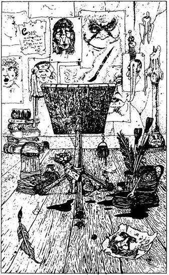
173.
A férfi dühös lesz. - Hálátlan vándor! - kiáltja. - Nem utasíthatod vissza a vendégszeretetemet! Gyere, igyál meg velem egy korsó sört. Ha nem, soha nem jutsz ki ebből a házból! - Ha meggondolod magad és mégis elfogadod a meghívását - lapozz a 34-re. Ha inkább harcolsz, ha kell, csak hogy kiszabadulj innen - lapozz a 223-ra.

174.
Zsákutcába jutottál. Vissza kell fordulnod, és más utat kell választanod. Merre mész tovább?
Az első elágazáson balra, vagy jobbra, ismét balra,
és újra jobbra? Lapozz a 298-ra.
Az első elágazáson jobbra? Lapozz a 42-re.
A harmadik elágazáson balra, majd az elsőn jobbra? Lapozz a 77-re.
175.
A kapu előtt a városi őrök hármasával járnak. Megállsz egy fánál, és megvárod az alkalmas pillanatot, hogy előlépj. Amikor az őröknek csupán az egyik hármas csoportja áll közted és az Északi Kapu között, odamész hozzájuk. Gúnyosan méregetnek. - A kapu zárva van, te tökfilkó! - mondja az egyik. - Fordulj meg szépen, és menj vissza a városba! - Nincs bátorságod megküzdeni velük, hisz járőrtársaik csakhamar itt lehetnek. Ha meg akarod vesztegetni őket - lapozz a 157-re; ha varázsolsz - lapozz a 26-ra.
176.
Belépsz a házba, amelynek a falait a festő művei díszítik. A szoba közepe táján egy festőállványt látsz, s rajta egy neked háttal lévő képet, amelyen vadul dolgozik egy láthatatlan kéz által mozgatott ecset. Átmész a szobán a festményhez. Az ecset éppen a te hasonmásodat festi! Ha meg akarod várni, míg elkészül a portréd, azzal a szándékkal, hogy talán megveszed azt a művésztől - lapozz a 67-re. Ha leállítod az ecsetet, még mielőtt mesterművét befejezné - lapozz a 44-re. Ha kimész a kunyhóból - lapozz a 137-re.
177.
Megdermedsz, amikor kezed az üres erszényt tapintja. A zsebtolvaj eliszkolt a pénzeddel. Nem maradt egy filléred sem! A tömeg egyre dühösebb lesz, és úgy döntesz, távozol innen. Ha a táncosok felé indulsz - lapozz a 261-re. Ha megnézed, vajon a bajnok talált-e már ellenfelet magának - lapozz a 33-ra. Ha elhagyod a fesztivál színhelyét - lapozz a 263-ra.
178.
Egy nagydarab, testes fegyveres őr jelenik meg a kapuban. - Ki akar itt bejutni? - mordul rád. Azt válaszolod, hogy az apádat jöttél meglátogatni. Hamis nevet mondasz neki, és közlöd vele, hogy Dhumpusból jöttél. Megparancsolja, hogy várj, míg a felettesével beszél. Ha vársz, ahogy utasított - lapozz a 225-re. Ha felajánlasz neki 2 Aranytallért, ha kérdezősködés nélkül átenged - lapozz az 59-re.
179.
A hajófenékben rajtad kívül még számos, az eszméletlenségig összevert alak hever. A hajó legénységéből azonban senki nem bukkan fel. Néhány óra múlva a fenti hangokból arra következtettek, hogy a hajó elhagyja a kikötőt! Nincs menekvés! A hajó lassan kifut a tengerre, és sorsod megpecsételődik. Gályarab leszel életed végéig, és így már soha nem szerezheted meg a Királyok Koronáját…
180.
Azt mondják, hogy épp az imént jöttek ki a tudós házából, oda járnak iskolába. A tudós a tanítómesterük. Lapozz a 329-re.
181.
A fal mellett álló asztalon egy kis dobozban 3 Aranytallért találsz. Ha akarod, elteheted a pénzt. Ha most elhagyod a szobát - lapozz a 9-re. Ha tovább folytatod a kutatást - ismét Tedd próbára a SZERENCSÉDET! Ha SZERENCSÉD van - lapozz a 134-re. Ha nincs SZERENCSÉD - lapozz a 19-re.
182.
Egy kis lemezt fedezel fel a lábán! Kardod élét gyorsan beilleszted a lemez és a szobor fémteste közé, és megpróbálod a lemezt lefeszíteni. Mielőtt még az óriás teremtmény bármit is tehetne, a fémlemez lepattan a földre. Mintha egy szelep nyílt volna ki, gomolygó gázok törnek elő a Szobor belsejéből. Az óriás életét biztosító gázok elszabadulnak! A Szobor meginog a lábán; majd arccal az utca kövére zuhan. Legyőzted hát az óriás Szobrot, és 18 Aranytallérral gazdagabb lettél! 2 SZERENCSE pont jár érte. Ha a bal kéz felől nyíló úton mész tovább a városból kifelé - lapozz a 104-re. Ha jobbra mész a másik úton a Játéktermekig - lapozz az 56-ra.
183.
A ló kötőfékén rángatózva, idegesen felnyerít. Ha akarod, beszélhetsz hozzá - lapozz a 128-ra, vagy felpattanhatsz a hátára - lapozz a 49-re, Vagy ott hagyhatod, ahol van, és továbbmehetsz utadon - lapozz a 237-re.
184.
Az utolsó kanyarnál a szívverésed is eláll: zsákutcába kerültél. Egyre közelebbről hallod a lépteket. Amint a teremtmények bekanyarodnak a sarkon, meg kell küzdened velük. Lapozz a 103-ra.
185.
Talán a küzdelem befejeződött, amíg a vegyesboltban voltál. Ha így van, továbbmehetsz. Dobj egy kockával. Ha páratlan számot dobsz - lapozz a 98-ra. Ha páros számot dobsz - lapozz a 153-ra.
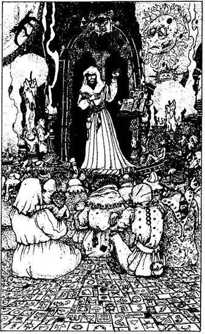
186.
Leültök, és ekkor azt kéri, hogy mesélj neki magadról és a Kharén túli világról. Minden kérdésére válaszolsz, de úgy érzed, kissé tartózkodó, ezért nem tudod, hogy valóban érdekli-e mindaz, amit kérdez. Megkéred, hogy meséljen egy keveset Kharéról. - Ó, az egy álnok hely - kezd bele mondókájába. - Sok mindent tudok mesélni neked azokról a veszélyekről, amelyek a kikötővárosban az emberre leselkednek, előbb azonban ihatnál velem egy pofa sört. - Ha iszol vele - lapozz a 34-re. Ha inkább továbbállsz - lapozz a 173-ra.
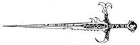
187.
Épp akkor lépsz be a kápolnába, amikor egy asszony jön ki onnan a gyermekével. - Ó valóban szent ember - mondja a gyermek. - Salen sánta öccse tegnap jól válaszolt a kérdéseire, és azonnal meggyógyult a lába! Életében először tudott futni! - Kíváncsian lépsz be a kápolna csarnokába. A földön sok-sok felnőtt és gyermek ül. A csarnok egyik végében egy dobogóról ősz hajú, fehér köntöst viselő férfi szól az egybegyűltekhez. - Van-e valaki, aki meg akarja oldani Slangg tesztjét? - kérdi. - Aki válaszolni tud a kérdéseimre, annak istenem bármely kérését teljesíti. Ha viszont valaki nem tudja a választ, annak le kell mondania saját istenéről, és Slangg hívévé kell válnia. Slangg nem más, mint a "Bosszú Istene". - Ha vállalod ezt a kihívást - lapozz a 156-ra. Ha nem, elhagyhatod a kápolnát, és folytathatod az utadat - lapozz a 165-re.

188.
Megállsz az egyik kockavető asztalnál, és érdeklődve figyeled, mit játszanak. Vagy egy tucat ember a "kitalálóst" játssza. Miközben a játékot nézed, gyorsan rájössz a játékszabályra. A tét 1 Aranytallér dobásonként. A tétedet 1-6-ig bármelyik számra ráhelyezheted. Egy kockával dobnak, és ha a dobott szám megegyezik azzal a számmal, amelyikre a pénzedet tetted, 10 Arany jutalom üti a markodat. Szemmel láthatólag igen kedvező az osztalék. Ha be akarsz szállnia játékba, tegyél meg egy Aranyat, és válassz egy számot (ebben az esetben úgy, hogy például az egyik ujjadat ráteszed a fejezet alatt látható kockák egyikére). Dobj egy kockával. Ha a letakart kocka száma jön ki, nyertél 10 Aranytallért. Ha nem, vesztesz. Ha akarod, a szerencsét is segítségül hívhatod. Tedd próbára a SZERENCSÉDET! Ha SZERENCSÉD van, mielőtt a játék kockával dobnál, jelöld meg bármelyik számot, amit eddig még nem választottál, és ha ez a második szám jön ki, nem kell vele törődnöd, hanem újra dobhatsz, s ezáltal is növeled az általad kiválasztott szám esélyét.
Bármely dobásra csak egyszer tehetsz, és a SZERENCSÉDET is csupán egyszer hívhatod segítségül minden egyes tétnél. Ötször játszhatsz, ezt követően el kell hagynod a játéktermet, hiszen nem szabad megfeledkezned küldetésed valódi céljáról! Miután távoztál innen, lapozz a 39-re.
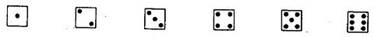
189.
Ezt az élőholt teremtményt nem sebezheted meg hétköznapi fegyverrel: kárörvendőn néz rád, amikor halálos döfésed átjárja a testét! Folytasd a harcot!
Halálkísértet ÜGYESSÉG 9 ÉLETERŐ 8
Legközelebb, ha nagyobb Támadóerőt dobsz magadnak, mint a HALÁLKÍSÉRTETNEK, nem fogod megsebezni, hanem kivéded a csapását, s ezalatt új tervet agyalhatsz ki. Ha ez történik, Próbára teheted a SZERENCSÉDET! Ha SZERENCSÉD van - lapozz a 38-ra. Ha nincs SZERENCSÉD, folytatnod kell a harcot, és legközelebb akkor Teheted próbára a SZERENCSÉDET, ha nagyobb Támadóerőt dobsz, mint az ellenfeled.
190.
Egy ember megy el melletted, akinél fogadásokat lehet kötni a bajnokságra. Megkérdezed tőle, miként lehet nála fogadni. - Szerencsésnek hiszed magad, mi? - kérdi vihogva. - Három az egyhez, ha a vállalkozó kedvű ellenfél győz, és egy a háromhoz, ha a bajnok győz. Melyikre fogadsz? Bármennyit tehetsz akár a Barbárra, akár az Ogre-ra. Minden egyes Aranyért, amivel a Barbárra fogadsz, 3 Aranyat kapsz tőle, ha a Barbár győz, de minden 3 Aranyért, amivel az Ogre-ra fogadsz, csak egyet kapsz vissza tőle, ha az Ogre győz. (Ha eltalálod, ki győz, visszakapod azt az összeget, amellyel fogadtál.) Fogadj, ha akarsz - lapozz a 234-re.
191.
Egy útkereszteződéshez érsz. Mehetsz egyenesen tovább - lapozz a 297-re, de elkanyarodhatsz jobbra is - lapozz a 84-re.
192.
Nagyot nevetnek, amikor előrántod a kardodat. Egyikük tágra nyitja a szemét, és ekkor egy vörös lángnyaláb tör át a légen, amely belecsap a csuklódba, súlyos égési sérülést okozva. (Vesztesz 2 ÉLETERŐ pontot!) Fájdalmadban kiejted kezedből a kardodat. Utolérnek, körülvesznek, és nincs más választásod, meg kell adnod magad. Elvezetnek (kardoddal együtt) egy kocka alakú épülethez, és betuszkolnak. Egy másik, kissé idősebb, de hozzájuk hasonló teremtmény néhány szót vált velük. Úgy látod, ez a hely lehet a tömlöcük, ahová most bezárnak. Lapozz a 143-ra.
193.
Az isten a bálvány szájával szól hozzád: - Az Északi Kapu őrsége engedetlen népség. Jaj neked, ha dolgod akad velük! Ugyanakkor ez a gátlástalan banda inkább csak a saját hasznát lesi, és nem a város érdekeit nézi. Csakis varázslattal okozhatsz zavart közöttük! Ha nem varázsolsz, adj mindegyiknek 3 Aranyat, hogy ne vegyenek észre, amikor a kapuhoz közeledsz. - Jól az eszedbe vésed a szavait, és elhagyod a templomot - lapozz a 109-re.
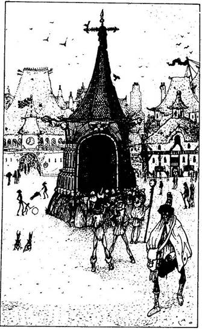
194.
A férfi nem hiszi el a történetedet. Látod, hogy egyre dühösebb. Hogy megmutasd, nem akarod bántani, átadod neki a fegyveredet, míg beszélgettek, ő azonban már eldöntötte, mit tesz. Lapozz a 95-re.
195.
Átkutatod a Lánckészítő mester zsebeit, és 10 Aranytallért találsz - a lánckészítés nyilvánvalóan jövedelmező foglalkozás itt Kharéban. Ezenkívül találsz a zsebében egy gondosan összehajtogatott kis papi sapkát is, amelynek későbbi varázslataid során még hasznát veheted. Miközben kifelé igyekszel, nekimész egy sötét színű láncnak, amely megtetszik neked, és elteszed a hátizsákodba. Nyersz 1 SZERENCSE pontot, és lapozz a 203-ra.
196.
Jobb, ha minél előbb továbbállsz innen, mert a Nyálkaevők általában csoportba verődve táplálkoznak, úgyhogy minden esélyed megvan rá, hogy többen is legyenek ebben az elágazásban. Merre mész tovább?
Az első elágazáson balra, majd egyenesen? Lapozz a 298-ra.
Az első elágazáson jobbra, majd az elsőn balra, a
másodikon balra és az elsőn jobbra? Lapozz a 174-re.
Az első elágazáson balra, majd az elsőn jobbra és a
másodikon balra? Lapozz a 42-re.
197.
Kint az utcán vásári forgatagot látsz. Ha körül akarsz nézni a vásárban - lapozz a 226-ra. Ha inkább a Kharéból kivezető úton mész tovább - lapozz a 83-ra.
198.
A kora reggeli napfény életre kelti Kharé utcáit. Addig mész az úton, amíg egy térhez nem érsz, amelynek a közepén furcsa külsejű teremtmények ácsorognak valamiféle építmény körül. Közelebb mész hozzá, hogy jobban szemügyre vehesd. Az építmény afféle hatalmas boltív, amelynek a belseje fontos dolgot rejthet, s a bámészkodók azt lesik. Maguk a bámészkodók is fura alakok. Hosszú, nyurga testük van, arcuk is hosszúkás,
a szemük pedig mintha örökké csukva lenne! Ha közelebbről szeretnéd megszemlélni az építményt - lapozz a 204-re. Ha inkább elkerülöd ezt a helyet és átmész a tér túloldalára - lapozz az 50-re.
199.
Ha Élelmet vettél, elteheted a hátizsákodba, és később majd megeheted. A méhviasz nem más, mint lép. Rengeteg viasz van benne. Majd varázsolhatsz vele eleget küldetésed hátralévő részében. Ha vettél kesztyűt - lapozz a 210-re. Ha nem - lapozz a 272-re.
200.
A lép jócskán tele van méhviasszal; ki fog tartani utad végéig - varázsolhatsz vele, amennyit csak akarsz. Lapozz vissza a 264-re.
201.
Otthagyod a táncosokat, és most vagy a ringhez mész, hogy megnézd, vajon ki az, aki kiáll a haramia bajnokával - lapozz a 33-ra, vagy elhagyod a fesztivál színterét - lapozz a 263-ára.
202.
Menet közben újabb útkereszteződéshez érsz. Ha egyenesen mész tovább - lapozz a 131-re. Ha befordulsz jobbra egy másik utcán - lapozz a 139-re.
203.
A lánc kitűnő szerzemény, mert ez egy önrácsatolós varázslánc, amit harc közben használhatsz. Minden alkalommal, amikor ellenfeled ÉLETERŐ pontjait 3-ra vagy ennél kevesebbre csökkented, ezt a láncot legyengült ellenfeled köré varázsolhatod. A lánc a kiszemelt célpontod köré tekeredik, és foglyul ejti az áldozatot. Ekkor ellenállás nélkül végezhetsz vele. Sajnos azt már nem tudod, miképp lehet a láncot leoldani, így azt csak egyszer használhatod. Ugyanakkor megteheted, hogy egyszeri használat után megpróbálod megtalálni a láncon lévő rejtett zárat, mégpedig oly módon, hogy kétszer Próbára teszed a SZERENCSÉDET. Ha mindkét alkalommal SZERENCSÉD van, sikerül leoldanod a láncot, és ismét felhasználhatod. A rejtett zárat azonban nem könnyű megtalálni, és minden alkalommal, amikor a láncot fogod használni, kétszer sikerrel Próbára kell tenned a SZERENCSÉDET! ahhoz, hogy a lánc leoldódjon és ismét használni tudd. Most el kell hagynod a kunyhót. Lapozz a 9-re.
204.
Felmész a lépcsőn az emlékműhöz, hogy jobban megnézd, mi van odabenn. - Na, ne lökdöss! Vigyázz! - mondja az egyik teremtmény. Elnézést kérsz, és belesel. Bent valami olyasmit látsz, ami csillogó vízzel teli medencére emlékeztet, bár nem tudod biztosan, hogy valóban víz van-e benne. Ha lehajolsz, hogy közelebbről megnézd - lapozz a 123-ra. Ha megkérdezed az egyik jelenlévőt, mi az - lapozz a 116-ra. Ha visszafordulsz és elhagyod a teret - lapozz a 275-re.
205.
Hol kezded a kutatást? A templom tele van értékesnél értékesebb műkincsekkel, és nem nagyon tudod eldönteni, melyiket is vidd magaddal. Aranyszobrok, páncélruhák, gyertyatartók és pajzsok vesznek körül. Odamész egy selyemterítővel letakart asztalhoz, melyen egy kristálykancsó és négy aranyserleg áll. Fölemeled az egyik serleget, és megfordítod. Hirtelen úgy érzed, mintha felerősödne a szél zúgása. Amikor körülnézel, látod, hogy a hímzett faliszőnyegek táncra perdülnek az erős légvonatban, holott előzőleg meg sem moccantak. Föltekintesz a vízköpő sárkányokra - és azonnal visszateszed a serleget a helyére! Mind a négy sárkány életre kelt, és szárnyát hátrahúzva feléd fordult. Amint visszahelyezed a serleget, minden megnyugszik körülötted, és a vízköpő sárkányok is visszafordulnak eredeti helyükre. Lapozz a 122-re.
206.
Amikor az őr végre elalszik, kinyitod a cellád ajtaját. Fölveszed a hátizsákodat, felkapod a fegyvereidet és elhagyod a tömlöcöt. A kis Elvin rohanva követ az úton. Igen hálás neked, amiért kiszabadítottad, és cserébe SZERENCSE varázslattal jutalmaz. SZERENCSE pontjaidat visszaállíthatod a Kezdeti értékre! Egy ideig a mellékutcákon haladtok, majd végül elválnak útjaitok. Lapozz a 135-re.
207.
- Hogyan hálálhatnám meg ezt neked, idegen? - kérdi a koldus. - Amióta vaksággal sújtottak, azóta kínoznak egyfolytában ezek a gonosz démonok. - Beszélsz hozzá még egy ideig, majd mindketten nagyot sóhajtotok. - Szomorú az én történetem - mondja -, mivel nagy gazdagságból koldusbotra jutottam. Három évvel ezelőtt még én voltam Kharé Hetedik legtehetősebb Főnemese, amikor is a fekete szeműek átka lesújtott rám. - Közbevágsz, és megkérdezed, vajon nem ismeri-e az Északi Kaput nyitó varázsigét. - Már hogyne ismerném - feleli -, hisz engem bíztak meg a varázsige egyik sorának őrzésével. Ha a kikötővárost arra akarod elhagyni, ez talán segíteni fog. Kissé ugyan megkopott az emlékezetem, de ez a sor, ha jól tudom, így hangzott: "Kéri… - kezdi, és máris elbizonytalanodik - na, az a büszke, a… a… kegyes Courga." A fenébe! Elfelejtettem, ki is volt az a büszke. Valamelyik isten. "Kéri valaki s a kegyes Courga." Ne haragudj, idegen. Cserbenhagyott az emlékezetem. Nem emlékszem rá, melyik isten volt az. Talán majd megtudod Courga templomában, hisz ott van kissé lejjebb az úton. Ott majd beszélhetsz a Báj Istenével. De ha ezt teszed, az életeddel játszol! Egy dolgot azonban biztosan tudok: a bal szem vezet hozzá. Ennél többet nem tudok mondani. - Megköszönöd a segítségét, és távozni készülsz, de mielőtt elmennél, így szól: - Ha Bakland felé tartasz, ennek talán majd hasznát veszed. Évek óta féltve őrzöm e kincset, de úgy érzem, már soha nem fogom használni - soha nem hagyom már el Kharét -, s ez a tárgy minden bizonnyal segítségedre lesz az utadon. - Átad neked egy kígyómintázatú gyűrűt, amely rögtön az ujjad köré csavarodik. Hite szerint ez a gyűrű megvéd majd a Szárnyaskígyóktól. Hogy megtudd, milyen ereje van - lapozz a 130-ra a következő kalandkönyvben. Ez a gyűrű kétségkívül igen értékes. Köszönetet mondasz neki, összeszeded a holmidat, és elindulsz az úton lefelé. Lapozz a 148-ra.
208.
Óvatosan megkerülöd a házat, és megnézed az ablakait. Az egyik ablakon belesve egy dolgozószobát látsz. A falakat könyvekkel megrakott polcok borítják. Minden bizonnyal egy bölcs, egy tudós vagy varázsló lakik itt. Ha visszamész a bejárati ajtóhoz - lapozz a 140-re. Ha megpróbálsz besurranni a hátsó ajtón - lapozz a 172-re.
209.
Minden csöndes körülötted, miközben ott pihensz a csata után, de hirtelen zajt hallasz a koporsó felől, és odafordulsz. Egy alak emelkedik ki a koporsóból! Ezúttal azonban nem a szörnyűséges Halálkísértet, hanem egy öregember. - Ki az? - kérdi. - Ki tett pontot szenvedéseim végére? - Körülnéz a kriptában, majd megakad rajtad a szeme. - Mivel hálálhatom meg ezt neked, idegen? - kérdi. - Ki tudja, már milyen régóta ül rajtam az átok, mely élőhalottá tett. Most végre nyugodtan megpihenhet a lelkem. Hogyan tudnám ezt neked megköszönni?
Elmondod neki, milyen út előtt állsz, miképp akarsz eljutni Kharén át Báklandba. Közli veled, hogy Kharéból soha nem fogsz kijutni, hacsak nem ismered az Északi Kaput nyitó varázsigét. Ennek a varázsigének csak az egyik sorát ismeri, amely így hangzik: - Gólem-bőrből készült zár. - Mesélsz még neki egy keveset a küldetésedről, amelyhez sok szerencsét kíván. - Többet nem segíthetek - mondja -, de azért még elmondok egy kis versikét, amit még a régmúlt időkből ismerek. Úgy érzem, hasznát veheted majd. A Vers így hangzik:
"Hogy elaludjon az álmatlanságban szenvedő kos,
Meg kell keresni azt, kit úgy hívnak, a Szélhámos."
Nem tudom pontosan, mi az az "álmatlanságban szenvedő kos", de ezt a verset vésd jól az agyadba. - Megköszönöd a segítségét, és kimész a kriptából. Nyersz 2 SZERENCSE pontot, és lapozz a 16-ra.

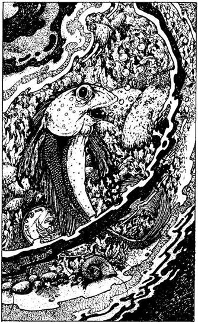
210.
A kereskedő páncélinget és bőrkesztyűt kínált megvételre. Mit vettél tőle? Ha páncélinget - lapozz a 228-ra. Ha bőrkesztyűt - lapozz a 238-ra.
211.
A guillotine pengéje lezuhan, és azonnal átvágja a nyakadat. Kalandod itt véget ér…
212.
Nem látsz itt semmiféle gyenge pontot, de amíg azt keresed, a szobor fölemeli a lábát, és megpróbál eltaposni. Tedd próbára a SZERENCSÉDET! Ha nincs SZERENCSÉD - lapozz a 4-re. Ha SZERENCSÉD van - lapozz a 64-re.
213.
Elhagyod a kunyhót. Az őrök eltűntek az utca végében, és így továbbmehetsz. Kissé följebb egy tó mellett haladsz el az úton. Amikor belenézel a tó vizébe, egy kő mögül parányi ezüsthalacska surran elő, és rád néz. Szájából levegőbuborékok törnek elő. Mintha beszélne hozzád. Egy Aranytallér fölött úszkál, amit minden bizonnyal valaki beleejtett a tó vizébe. Ha lehajolsz, hogy meggyőződj róla, vajon a halacska valóban beszél-e hozzád - lapozz a 320-ra. Ha elcsened az Aranytallért - lapozz a 85-re. Ha továbbmész utadon - lapozz a 28-ra. Ha inkább varázsolsz, melyik varázslatot alkalmazod?
MEN HOM TIV VAR KIN
456 351 375 470 338
214.
Lélegzetvisszafojtva várod, vajon helyesen idézted-e a varázsigét. Egyre erősödő nyikorgást hallasz. Csapdát gyanítasz, de félelemre semmi ok: a kapu két szárnya között egy vékony fénycsík jelenik meg! Lapozz az 511-re. Sikerült kinyitnod a kaput, és utadnak ez a fejezete már-már lezárult!
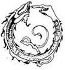
215.
Ha át akarod kutatni a szobát, tedd próbára a SZERENCSÉDET!, mert keresés közben minden bizonnyal hozzáérsz majd a láncokhoz, és a zajra felfigyelhet a lánckészítő. Ha SZERENCSÉD van - lapozz a 181-re. Ha nincs SZERENCSÉD - lapozz a 19-re. Ha nem akarsz itt SZERENCSE pontot veszteni, kiálthatsz a Lánckészítőnek - lapozz a 280-ra, vagy kimehetsz a kunyhóból - lapozz a 9-re.
216.
- Ha szállást keresel éjszakára - mondja -, akkor én a te helyedben nem kanyarodnék jobbra az elágazásnál. - Megköszönöd a tanácsát, és miközben az elágazás felé mész, egyre az jár a fejedben, amit mondott. Ne feledd, kényszeres hazudozó az illető! Lapozz a 144-re.
217.
Bedobod a kútba az Aranytallért, és jó pár másodpercet vársz, míg meghallod lentről a csobbanást. A kút kétségkívül nagyon mély. A hang énekelve ismét megszólal:
"Ha nekem adod még egy tallérodat,
Teljesítem érte két kívánságodat!"
Ha egy újabb Aranyat akarnál bedobni a kútba - lapozz a 152-re. Ha nem, továbbmehetsz, és lapozz a 319-re.
218.
Körülnézel a házban, és felméred a lehetőségeidet. A hátad mögött lépteket hallasz, és hirtelen megfordulsz, de már késő! Két kéz megragadja a csuklódat, és amikor föltekintesz, egy őr pimasz pofáját látod. Az ő erős marka tart fogva. Erőszakkal maga után húz, a sarkon befordulva benyit egy házba, és belök az ajtón. A zár kattan egyet mögötted. Lapozz a 254-re.
219.
Egy piros alma röpül ki a vitrinből, és a lábad elé hullik. Finom gyümölcsnek látod, és elteszed a hátizsákodba a többi Élelmed közé. Azt azonban nem tudod, hogy ez az alma belül teljesen rothadt. Amikor legközelebb kinyitod a hátizsákodat, akkor veszed majd csak észre, hogy az alma tönkretette a többi élelmedet is, és így 1 étkezésre elegendő Élelmed kárba veszett. (Ha pillanatnyilag nincs semmilyen Élelmed, a rothadt alma csupán a hátizsákodat koszolja össze.) Kimész a sátorból, és folytatod az utadat. Lapozz a 160-ra.
220.
Tedd próbára a SZERENCSÉDET! Ha SZERENCSÉD van - lapozz a 106-ra. Ha nincs SZERENCSÉD - lapozz a 6-ra.
221.
18 Aranytallér van az edényben. Kiszedegeted őket, és kinyitod az erszényedet. Ekkor nyikorgó hangot hallasz, és megdermedsz! A Szobor életre kel, és karjával feléd nyúl! Elugrasz, és épp hogy csak sikerül elkerülnöd, hogy meg ne csapjon. Végiggurulsz a földön, majd felállsz. Ekkor látod, hogy a bronzóriás lelép a talapzatról és feléd tart. Ha varázsolsz ellene - lapozz a 22-re. Ha kardoddal állsz ki ellene - lapozz a 299-re.
222.
Ismerős hang üdvözöl a szoba túlsó végéből. - Hahó, kedves barátom! - kiáltja egy férfi. Odafordulsz, és mosolyra húzódik a szád, amikor megpillantod Flankert, a Bérgyilkost. - Nem maradhatok itt veled, barátom - mondja Flanker, aki épp távozóban van két gyanús külsejű alakkal. - Hogy megy a sorod, mióta nem láttalak? Most nyertem egy halom pénzt Vlada Játéktermeiben! Jó vastag vagyok! Nesze, itt van italra és szállásra - mondja, s ezzel átad neked 5 Aranytallért. - Vigyázz itt a sörrel! Egy korsó felfrissít, kettő felvidít, de három már kiút! Na, viszlát! - Csatlakozik társaihoz, és egymásba karolva, énekelve, vígan távoznak. Úgy sejted, két korsóval ihatott meg! Lapozz vissza a 110-re és döntsd el, mit csinálsz ezt követően.

223.
Távozni készülsz. A Gyilkos ekkor lekapja a falról az íját, belehelyezi a nyílvesszőt, és megcéloz vele. - Nem menekülsz a Gyilkos Vangorn elől! - mondja kárörvendőn, és meghúzza az íj húrját. Ha kardot rántasz és rátámadsz - lapozz a 13-ra, vagy ha akarsz, varázsolhatsz:
TIV NYI FAL SUD GUM
493 366 383 509 455
224.
Csapda után kutatsz. Odamész az oltárhoz vezető lépcsőhöz, és ekkor a szőnyeg mintázatában egy díszesen szőtt kört fedezel fel. Hogy gyanúdat beigazold, egy kavicsot hajítasz a kör közepébe. Mosolyogva nyugtázod,
hogy az eltűnik a szemed elől. Egy kaput fedeztél fel, mely biztosan elnyelt volna, ha rálépsz. Még véletlenül sem fogsz rálépni erre a kerek foltra. Ha most megnézed, mit lophatnál el - lapozz a 205-re. Ha az életnek bármi jelét szeretnéd felkutatni - lapozz a 168-ra. Ha fölmész az oltárhoz - lapozz a 122-re.
225.
Nem sokkal később visszajön, kinyit egy kis ajtót a kapun, és beenged. Gyorsan int neked, hogy kövesd a boltíven át, a fal mentén. Hirtelen erős kezek ragadják meg a derekadat és a kezedet. Hiába erőlködsz, a három őr túl szorosan fog, és ellökdös egy nagy házig, amely a Kapu túloldalán áll. Ha megvesztegetted az őrt - lapozz a 36-ra. Máskülönben lapozz a 291-re.
226.
Élelmiszert, fegyvert és mindenféle csecsebecsét árulnak a vásárban. Vehetsz magadnak Ételt az útra, adagonként 3 Aranytallérért. Két fegyver tetszik meg neked: egy íj meg egy ezüstvégű nyílvesszőkkel teli tegez 5 Aranyért, meg egy szép dupla élű pallos 4 Aranyért. Baklandi utadra gondolva vennél egy tűzszerszámot, hogy majd azzal világíts 2 Aranyért, és egy üveg kígyómarás elleni szert 3 Aranyért. Vedd meg a fent említett tárgyak közül azt, amit szeretnél és amire pénzed van, aztán lapozz a 162-re.
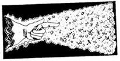
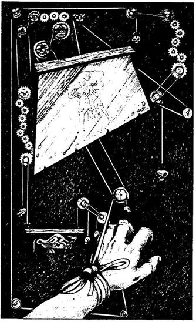
227.
Azt álmodod, hogy elfogott egy szadista kínzómester, aki szörnyűséges halálnemeket agyalt ki számodra. Testedről patakokban folyik a veríték, amikor rémülten felébredsz. Éppen hajnalodik, a kora reggeli fény beszűrődik az ablakon, és megvilágítja a szobádat. Amikor fölnézel, megdermedsz a látványtól. Egy erős szíjjal vagy odakötözve az ágyadhoz, a nyakad felett pedig egy éles pengéjű guillotine lóg! Az ágy végéből kárörvendő nevetést hallatsz. Odanézel, és megpillantod magát a fogadóst. Hangosan nevet. Húsért jött az ebédjéhez, amit lehet, hogy ezúttal te fogsz neki szolgáltatni. Lehet, hogy ő maga nem szeret másokat megölni, vagy talán csak örömét leli a hosszas kínzásban, de bármi legyen is az ok, egy kötéllel, amit a bal csuklód köré tekert, esélyt adott neked a menekülésre.
Kioldja a kötelet, és ekkor érzed a súlyt a kezedben. Meghúzhatod vagy elengedheted a kötelet. Az egyik választásod azonnali halálodat fogja okozni; a másik viszont a magasba emeli a pengét, és lehetővé teszi, hogy felülj és kioldd kötelékeidet. A nevető fogadós minden kétséget kizáróan teljesen őrült, és nem fog segíteni neked. Ha meghúzod a kötelet - lapozz a 211-re. Ha elereszted - lapozz a 15-re.
228.
Kezeden a páncélkesztyűvel furcsán magabiztosnak érzed magad, és a fegyveredet is könnyebb tartani. Meggyőződésed, hogy a kesztyű hatására harckészséged jelentékenyen növekedni fog, de sajnos ez az érzés csak illúzió, mely egy varázslatnak köszönhető, és a kesztyű valójában csökkenteni fogja harckészségedet. (Vonj le 1 pontot a Támadóerődből, ha majd legközelebb harcolsz.) Ez után a küzdelem után majd rájössz, hogy a kesztyű meg van átkozva, és eldobod. El ne feledd megtenni. Vettél-e egy fiola port is? Ha igen - lapozz a 247-re. Ha nem - lapozz a 259-re.
229.
Elveszi a fegyveredet, és leteszi az ajtó mellé. Őszintének és barátságosnak látszik, és amikor bemutatkozik, azt mondja, ő az Idősebb Lortag, tudós és bölcs. Követed a dolgozószobájába. Lapozz a 336-ra.
230.
A nézők gúnyos kiabálása, sikolya közepette kiverekszed magad a táncosok közül. Egy térd gonoszul oldalba rúg, majd összeesel tőle, és 2 ÉLETERŐ pontot vesztesz. Végül sikerül kimenekülnöd a tömegből. Lapozz a 201-re.
231.
Megcsókolod a bálvány száját. Miközben ezt teszed, halk kattanást hallasz. Szemed tágra nyílik, amikor valami átdöfi a torkodat. Kiáltanál, de az aranyszájból kiröpített dárda végén lévő gyorsan ható méreg megnémít. Eszméletlenül zuhansz el a földön, és már soha nem térsz magadhoz. Utad itt, e szentélyben véget ért. Így fizetsz meg azért, hogy kudarcot vallottál Courgánál a rituális csókkal.
232.
Egy zsákutcában találod magad. Üldözőid már-már a sarkadban vannak. A harc elkerülhetetlen. Amikor befordulnak a sarkon, te már készen állsz, hogy megvívj velük. Lapozz a 103-ra.
233.
Amint felfelé mész az úton, észreveszed, hogy a kunyhók egyre kisebbek. Az úttesten Törpék és más apró teremtmények nyüzsögnek. Megvető pillantásaikból arra következtetsz, hogy nem nagyon kedvelik az embertermetű idegeneket. Ha akarod, megállhatsz itt a környék vegyesboltja előtt - lapozz a 149-re. Ha akarod, továbbmehetsz - lapozz a 153-ra. Valamivel távolabb kisebb tömeg verődött össze az úton két veszekedő teremtmény körül. Ha meg akarod nézni, mi okozta a nézeteltérésüket - lapozz a 98-ra.
234.
Kezdetét veszi a csata. Neked kell eldöntened, ki győz, a Barbár vagy az Ogre:
Barbár ÜGYESSÉG 7 ÉLETERŐ 8
Ogre ÜGYESSÉG 9 ÉLETERŐ 12
Ha fogadtál volna, és a harc úgy alakul, hogy az általad választott győztes húzza a rövidebbet, varázsolhatsz:
TIL TÁN NAP BUT YAG
469 369 416 507 460
A csata után - lapozz a 136-ra, és ne feledd behajtani a nyereményedet, ha fogadtál volna és nyertél.
235.
Megint szerencséd van, és a Lánckészítő mester nem hallja meg, hogy ott vagy. A mester azonban sose hagyja őrizetlenül a házát. Amikor átmész a szobán, a mennyezetről egy láncszemekből szőtt háló zuhan a nyakadba, és foglyul ejt. Megpróbálsz kiszabadulni, de csak még jobban belegabalyodsz a hálóba. Ha megvárod, mi történik - lapozz a 154-re. Ha varázslattal próbálsz meg kiszabadulni fogságodból:
TÜV MEN YOB FAL RIS
494 481 388 353 415
236.
Felhajtod az italt, és letörlöd a habot a szád széléről. - Amint mondtam - folytatja -, a másik dolog, amire oda kell figyelned, az a Jabaji folyó túlpartján lévő számos Kapucsapda. A nemesurak az Északi Parton laknak, és varázskapukkal védik magukat. Ha beleesnél egy ilyen csapdába, ki tudja, hová jutnál. - Hangszíne megváltozik és szeme összeszűkül. - De te, büszke barátom, már soha nem fogsz eljutni az Északi Partra. A Gyilkos Vangorn újabb áldozatot szedett! - Hangosan fölnevet, és ekkor éles fájdalom hasít a gyomrodba. Megmérgeztek! Perceken belül meghalsz, hacsak nem varázsolsz:
VAR DOK ERŐ TÜV VIK
430 376 484 406 340
Librát is segítségül hívhatod, ha ebben a kalandodban még nem tetted volna. Lapozz a 129-re.
237.
Ha a bal oldali elágazáson mész tovább - lapozz a 300-ra; ha egyenesen folytatod az utadat - lapozz a 233-ra.

238.
Mágikus erejű Harci Kesztyűt vettél magadnak, amely megsegíti tulajdonosát a bajban. Ha harc közben viseled, megvéd, de csak akkor, ha ÉLETERŐ pontjaid 5 alá zuhantak. Ha küzdesz és ÉLETERŐ pontjaidnak száma nem éri el az 5-öt, egy Támadóerő dobásodat megismételheted (vagyis, ha ötöt és egyet dobtál, az egyet újra dobhatod). Jegyezd ezt fel a Kalandlapodon!
Vettél-e egy porral teli üvegcsét? Ha vettél - lapozz a 247-re. Ha nem vettél - lapozz a 259-re.
239.
Az apró kültelki település mögött egy ócska fakerítéssel körülvett telek mellett visz el utad, ahol féltucat disznó túrja a földet. A disznóktól jókora távolságra teremtmények egy csoportját látod a tábortűz körül. Ha átmászol a kerítésen és odamész hozzájuk, hogy megnézd, mit csinálnak - lapozz a 307-re. Ha ügyet sem vetsz rájuk, és inkább továbbmész - lapozz a 62-re.
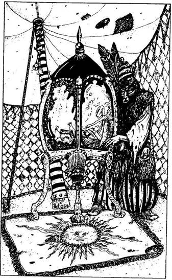
240.
Amikor belépsz a sátorba, egy koszos, szakállas férfi fogad. - Üdv, üdv, barátom - mondja színlelt lelkesedéssel. - Nézzük csak, mit fogsz nyerni ma! Senki sem veszthet a Becsületes Hanna Szerencsesátrában! - Odavezet egy nagy, üvegezett szekrényhez. A vitrinben különböző tárgyakat látsz: ékszereket, könyveket, aranyat, erszényeket és ételeket. Egy apró Minimó csücsül a vitrinben. - 2 Aranyért megtudhatod, mit választ számodra az én kis állatkám! - Ha szerencsét akarsz próbálni, adj neki 2 Aranyat, és lapozz a 318-ra. Ha valami csalafintaságot érzel a dologban, és nem akarsz szerencsét próbálni, kimehetsz a sátorból és folytathatod az utadat - lapozz a 160-ra.
241.
Elmondod a varázsigét, és vársz. Végigfut a hideg a hátadon, amikor a kapu megnyikordul. De nem a tárt kaput látod magad előtt, hanem egy szellem alakú ködfelhőt pillantasz meg, amely a kapukeret tetején elhelyezett dobozból száll föl. A szellemalak úgy ugrál a levegőben, akár egy zsinóron rángatott bábu, és te kővé dermedve figyeled. Hirtelen rád veti magát, és még mielőtt bármit tehetnél, elnyel! Köhögsz, izzadsz, pánikba esel, amikor rájössz, hogy a KÉNSZELLEM karmai közé kerültél, amelynek a mérgező gázai megfojtanak! Nemhiába figyelmeztettek, hogy az Északi Kapunak saját védelmi rendszere van, és avatatlan személy csak az élete kockáztatásával vállalkozhat rá, hogy a kaput kinyissa. A te életed ezúttal odaveszett..
242.
Kétségbeesetten próbálsz beszédbe elegyedni velük, de a pipázók túl kábák, és nem tudnak értékes információval szolgálni. Megkérdezed, nem ismernek-e itt a környéken egy tudóst. Bambán merednek egymásra, majd egyikük bólint, és ujjával előremutat az út felé. Nincs értelme folytatni a beszélgetést, így aztán távozol. Lapozz a 213-ra.
243.
Amikor kardot rántasz, a teremtmény hangosan elbődül és neked ront. Meg kell küzdened ezzel a DÖGNYÚZÓVAL, aki fejét vadul ide-oda rángatva támad, közben hosszú csápjaival feléd nyúl. Megpróbál foglyul ejteni. Küzdj meg vele.
Dögnyúzó ÜGYESSÉG 6 ÉLETERŐ 7
Amikor az első sebet ejti rajtad - lapozz a 114-re. Ha sebesülés nélkül sikerül legyőznöd, elveheted a dobozt az asztala alól. Lapozz a 29-re.

244.
Továbbmész az úton a kanyarban. Néhány száz méterre tőled emberek és teremtmények tömegét látod, akik elállják az utat. Számos sátrat húztak fel, melyeket színes zászlócskák díszítenek. Valami fesztiválféle színhelyére érkeztél. Úgy döntesz, megnézed, mi történik itt. Elvegyülsz a tömegben, és végigjárod a különböző események színhelyét. Egy helyütt zenészek játszanak vidám dalt egy csapat táncosnak. Másutt egy medvetáncoltató Törpét látsz. Egy sátorban felállított ring közepéről egy haramia hívogatja a vállalkozó kedvűeket, hogy vívjanak meg a bajnokával. Mit teszel?
A táncosokat nézed? Lapozz a 261-re.
A medvetáncoltatást nézed? Lapozz a 269-re.
Megpróbálsz kiállni a bajnok ellen? Lapozz a 33-ra.
Elhagyod a fesztivál színterét? Lapozz a 263-ra.
245.
Az orvvadászok szedett-vedett népség. Egyáltalán nem törődnek azzal, hogy idegen vagy. Elmondasz nekik néhány történetet meg viccet, és örömmel osztják meg veled a lakomájukat. Egy hatalmas adag disznólábat kapsz, de amint lenyeled az első falatot, érzed, hogy az túl forró. Ég a gyomrod, és kezedet a hasadra szorítva kétrét görnyedsz. A forró disznósült szétégette a gyomrodat: vesztesz 1 ÉLETERŐ pontot, és egész nap nem tudsz majd enni (Ha lehetőséged nyílik az evésre, akkor sem ehetsz.) Köszönetet mondasz a tűz köré gyűlteknek, és fájdalomtól meggyötörten visszabotorkálsz az útra. Lapozz a 62-re.
246.
Egymásra néznek, de csak a fejüket rázzák. Sose hallották Vik nevét. Egyikük felkiált: - Adj még egy Aranyat! - Erre valamennyien feléd nyújtják a kezüket, és követelik a pénzt. Lapozz a 329-re.
247.
Az üvegcsében lévő por valójában homok. Visszadugaszolhatod az üvegcsét, és elteheted. Lapozz a 259-re.
248.
- Hívő testvéreim! - kiáltja. - A Bosszú Istenének új híve áll előttetek! - Mint ahogy előzőleg beleegyeztél, most meg kell tagadnod Librát, és a továbbiakban Slangg istent fogod imádni. Ez azt jelenti, hogy mostantól soha többé nem fordulhatsz Librához segítségért. Kalandozásaid végeztéig magadra maradtál Kakhabadban. Eskütételed után elhagyhatod a kápolnát. Vesztesz 2 SZERENCSE pontot, és lapozz a 165-re.
249.
Az ajtó kinyílik, és besurransz. A kis kripta üres! A szemközti falnál azonban egy lépcsőt pillantasz meg, amely levezet a kripta alsó részébe. Ha lemész a lépcsőn - lapozz a 164-re. Ha már eleged van ebből a helyből - lapozz a 16-ra.
250.
Mély lélegzetet veszel, és lemerülsz a bűzös csatornaiszap alá. Amikor ismét felbuksz, hogy levegőt végy, úgy látod, megszűnt a szennyvízáradat, és most már kibújhatsz kellemetlen rejtekedből. A gyomrod majd kifordul - vesztesz 3 ÉLETERŐ pontot! Amennyire csak lehet, letisztogatod magad, és megpróbálsz kiutat találni innen. Mit teszel?
Továbbmész egyenesen, majd az első elágazásnál
jobbra és onnan megint jobbra fordulsz? Lapozz a 298-ra.
Továbbmész egyenesen, majd az első elágazásnál balra
és onnan megint balra fordulsz? Lapozz a 42-re.
Továbbmész egyenesen, majd az első elágazásnál balra
fordulsz, és onnan megint egyenesen haladsz előre? Lapozz a 174-re.
251.
Átkutatod a zsebüket, és 5 Aranytallért találsz. Megriadsz, amikor hangokat hallasz az ajtó előtt. Ha megnézed, mi van ott - lapozz a 213-ra. Ha nem törődsz vele, hanem tovább kutatsz a szobában - lapozz a 305-re.
252.
Az üzenet így szól: meg kell csókolnod a bálvány arcát. Hol csókolod meg először? Ha a homlokán - lapozz a 314-re. Ha a bal szemén - lapozz a 284-re. Ha a jobb szemén - lapozz a 2-re. Ha a jobb orcáján - lapozz a 334-re. Ha a bal orcáján - lapozz a 88-ra. Ha az orrán - lapozz a 296-ra. Ha a száján - lapozz a 231-re.

253.
Fizet neked egy újabb pofa sört, és te iszol vele. Nyersz 2 ÉLETERŐ pontot, mert egyre jobban érzed magad, és mindketten vígan nevetgéltek. Jól ismeri a kikötővárost. Még több információt szeretnél kicsikarni belőle arra vonatkozóan, hogy vajon ki ismeri a varázsige sorait, ő azonban csak annyit válaszol, hogy az általad keresett személyek egyike az az ember, akit megfosztottak Kharé Harmadik Főnemesének rangjától (mert azt rebesgetik róla, hogy Vámpír), s akit élőholttá tett egy átok. Ennél nem tud többet. Érdeklődéssel hallgatod egyik barátja történetét, aki megpróbált Courgával, az egyik istennel beszélni, és megölték a templomban, mert meg merészelte csókolni az isten orcáját. Mesél még neked néhány történetet, amely a nyílt tengeren esett meg vele. Újabb italt kínál. Ha inkább azt ajánlod, hogy most te fizetsz neki egy sört - lapozz a 306-ra. Ha azt mondod, hogy fáradt vagy és elmész aludni - lapozz a 86-ra.
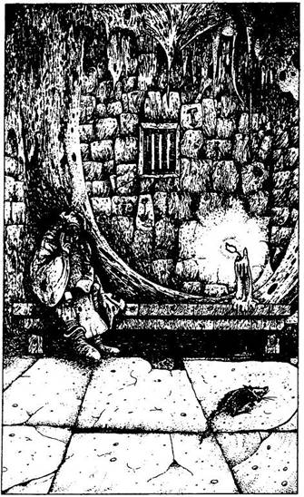
254.
Bent vagy a rácsos ablakú kőházban. A fal mellett álló fapad az egyetlen bútor a szobában, amelyen egy öregember ül szakadt köntösben. Feláll, és kezét feléd nyújtva üdvözöl. Ekkor veszed csak észre, hogy hiányzik a másik keze, köpenyének bal ujja ugyanis üresen csüng a teste mellett. - Mi szél hozott ide, erre a bűnös helyre? - kérdi. Közlöd vele, hogy épp kifelé igyekszel a városból, mire bólint, és így szól: - Lefogadom, idegen, hogy varázsló vagy. Valójában ez volt az én foglalkozásom is, mielőtt a sors - a Schanker-bányák egyik Ogréjának piciny segítségével - pontot nem tett reményeim és karrierem végére. - Hiányzó karjára mutat, és még ennyit mond: - Csakis egy varázsló ismerheti azt a varázsigét, amely az Északi Kaput nyitja!
Kissé zavartan nézel rá. - Ismered azt a varázsigét, ugye? - kérdi tőled, de te egyre csak kérdőn meredsz rá, s ekkor szemét tágra nyitva megrázza a fejét. - Nos, akkor jobb lesz, ha elmagyarázom… - mondja.
Elmeséli neked, hogy az Északi Kapun varázszár van, amelynek a baklandi betolakodóktól kell megvédenie a várost. Ezt a mágikus zárat csak és kizárólag egy meghatározott varázsige képes kinyitni. Csupán Kharé Első Főnemese ismeri teljes egészében ezt a varázsigét, ámbár annak négy sorát - soronként egyet-egyet - a várós négy előkelő polgára is ismeri. Ez megakadályozza őket abban, hogy egyedül, a társaik nélkül nyithassák ki a Kaput, s ez Kharé városának biztonságát jelenti. Amikor rákérdezel, kik azok az előkelő polgárok, kiderül, hogy nem sokat tud róluk. Csupán annyit hallott, hogy egyikük tudós.
Ekkor megkérdezed, miféle házban vagytok. Megnyugtatóan annyit mond, hogy az őrök egy napon belül eleresztenek, miután meggyőződnek róla, hogy nem vagy a kikötőváros ellensége. Ha megvárod, míg visszajönnek - lapozz a 260-ra. Ha varázsolsz, hogy kiszabadulj, melyik varázslatot választod?
EME POP FIX NYI FIL
371 504 486 432 344

255.
- Ez az! - mondja gúnyolódva. - Még a saját tanítványaim is tudják, hogy nem ez a megfelelő rúna! Te jó isten, úgy érzem, sok-sok szerencsére lesz szükséged utad során! - Hangosan felnevet. Úgy döntesz, itt az idő, hogy távozz. - Mielőtt elmennél, barátom, adok neked valamit, ami majd szerencsét fog hozni, és amire igen nagy szükséged lesz. Itt van, fogadd! - Átad egy zablisztből készült kis süteményt, és azt mondja, ha megeszed a felét, biztosan szerencséd lesz. Ha utad során bármikor azt az utasítást kapod, hogy Tedd próbára a SZERENCSÉDET!, megeheted helyette süteményed felét. Ha ezt teszed, automatikusan SZERENCSÉD lesz, anélkül hogy dobnod kéne, vagy le kéne vonnod SZERENCSE pontjaidból. A sütemény két alkalomra elegendő, azaz mindkét fele egy-egy alkalomra. Megköszönöd a kedvességét, és elhagyod a házát, de előbb még magadhoz veszed a fegyveredet. Lapozz a 133-ra.
256.
Odamész a földön fekvő emberhez. Szemmel láthatólag senki sem figyel fel rád az utcában. Lehajolsz hozzá. Kezedet a vállára teszed, és megrázod. Életnek semmi nyomát nem látod rajta. A karjánál fogva megfordítod a testet. Amikor az arca láthatóvá válik, döbbenten ugrasz hátra! Egy oszlófélben lévő hulla fekszik előtted! Arcáról rothadó húscafatok lógnak, rémült kiáltás hagyja el ajkadat. Miközben elfordítod a tekintetedet erről a szörnyű arcról, gonosz mosolyt veszel észre ott, ahol a száját sejted, és látod, amint a test talpra szökken! Rád veti magát, és már semmi másra nincs időd, csak arra, hogy kardot ránts, és azzal küzdj ellene.
Élő hulla ÜGYESSÉG 6 ÉLETERŐ 6
Meg kell vívnod ezzel a teremtménnyel. Miután az első sebet ejted rajta - lapozz a ti-re.

257.
Melyik varázslatot választod?
ZAV BAM BAG KIN LÁP
417 347 398 445 342
Ha egyik varázslatot sem ismered, elő kell rántanod a kardodat, és azzal kell támadnod. Lapozz a 243-ra.
258.
Tedd próbára a SZERENCSÉDET! Ha SZERENCSÉD van, elkerülöd a kört, és az ajtónyílásban érsz földet - lapozz a 317-re. Ha nincs SZERENCSÉD, nem sikerül átugranod a kört - lapozz a 288-ra.
259.
Megvetted a Titokzatosság Italát? Ha igen, megihatod - lapozz 281-re. Ha nem - lapozz a 170-re.
260.
Egész nap vársz, de az őrök csak nem jönnek vissza. Amikor leszáll az est, enned és aludnod kell. Ha a saját Élelmedet fogyasztod - lapozz a 308-ra. Ha nem, vagy ha nem tudod - lapozz a 333-ra.
261.
Elvegyülsz a tömegben, és nézed, mint lépkednek, hajlonganak a táncosok a zene ritmusára. A zene egyre hangosabban szól, s a tömeg ütemesen tapsol. Csodálod a táncosok ügyességét, téged is magával ragad a látvány. Már te is tapsolsz és táncolsz. Nyersz 1 ÉLETERŐ pontot, amiért ilyen jól szórakozol. A táncosok odapördülnek a tömeghez, mindenki legnagyobb gyönyörűségére megragadnak egy-egy nézőt, és magukkal viszik a táncba. Az egyik táncos épp téged ragad karon, és becipel a körbe. Ha beállsz táncolni - lapozz a 17-re. Ha otthagyod a partneredet, mert zavarban vagy - lapozz a 40-re.
262.
Dobj egy kockával, hogy megtudd, mit akarnak ellopni tőled:
1, 2 vagy 3. 3 Aranytallért lopnak el (vagy annyit, amennyit találnak, ha háromnál kevesebb aranyad van).
4, 5. Az összes Élelmedet elveszik.
6. A legnagyobb tárgyat lopják ki a hátizsákodból.
Ha dupla hatost dobtál, amikor Próbára tetted a SZERENCSÉDET, sikerül kioldaniuk a hátizsákod száját, és mindent elcsennek, majd elrohannak a zsákmánnyal. Utánuk eredsz, és meg is találod az üres hátizsákodat. Mindenedet elvesztetted! Ha valami igazán értékes holmit vesztettél volna el, akkor most megpróbálhatsz varázsolni, hogy visszaszerezd.
TEL RAN TIL HAT GOB
448 396 404 506 426
Máskülönben lapozz a 61-re.
263.
Távozol a fesztivál színhelyéről, de amint az egyik sátor előtt elhaladsz, érdekes kiírás vonja magára a figyelmedet: SZERENCSETANYA - PRÓBÁLJ SZERENCSÉT - MINDENKI NYER - CSAK 2 ARANYTALLÉR!
Ha meg akarod nézni, mi zajlik odabent - lapozz a 240-re. Ha nem - lapozz a 160-ra.
264.
- Jó, jó! - nyüszíti a Gnóm. - Lássuk, miféle üzletet tudunk kötni veled ma! - Az általa felkínált tárgyak listáját a fejezet végén találod. Saját Felszerelési tárgyaid közül négy tárgyat kell kiválasztanod (Aranyat, Élelmiszert vagy fegyvert nem választhatsz). Írd fel ezeket egy papírra úgy, hogy mindegyiket külön számmal jelöld, 2-től 4-ig. A Gnóm felkínált tárgyai közül kettőt választhatsz. Hogy melyik kettő, azt dobókockával döntöd el.
Ha 1-et dobsz - Nem érdekli semmi sem, amit felkínálsz neki. Ehelyett bármit elfogad, ami még a Felszerelési Tárgyaid listáján szerepel. (Valami olyan tárgy, amit nem ajánlottál fel cserébe.)
Ha 2-5 között dobsz - Elfogadja az általad felkínált tárgyat, amely megegyezik azzal a számmal, amellyel a tárgyat előzőleg megjelölted.
Ha 6-ost dobsz - Két tárgyat kér az ő egyetlen tárgyáért cserébe. Dobj ismét kétszer (hagyd figyelmen kívül az 1-est és a 6-ost), hogy megtudd, melyik tárgyat akarja.
Ha két tárgyára tartanál igényt, és másodszorra annak a tárgynak a számát dobod, amit épp most adtál át neki, szerencséd van, ezért a Gnóm odaveti neked ezt a második tárgyat is anélkül, hogy bármit is kérne érte cserébe.
Ha nincs elegendő Felszerelési Tárgyad, vagy ha nem akarod felhasználni összes létező tárgyadat, varázsolhatsz is.
DOK VAR GOB KIN REP
419 360 386 490 457
A kővetkező tárgyak közül kettőt választhatsz:
Bambuszfurulya (304) Egy zacskó Goblin-fog (45)
Szerencsetalizmán (20) Bűvös Iránytű (107)
Nagy Hátizsák (166) Méhviasz (200)
A tárgyak mellett a zárójelben lévő szám azt a pontot jelzi, ahová lapoznod kell, ha igényt tartasz erre a tárgyra. Ha befejezted az üzletelést a kis Gnómmal - lapozz a 158-ra.
265.
Nem találtad el. A bronzóriás hatalmas ütéssel lecsap rád, és szaltózol egyet a levegőben. Vesztesz 4 ÉLETERŐ pontot. Lapozz vissza a 326-ra, és válassz újra.
266.
Közel hajolsz a bálvány szájához, hogy jobban halld a válaszát. - A sors úgy akarja, idegen, hogy ne juss el Baklandba. Nem sikerült megszerezned az Északi Kaput nyitó varázsige valamennyi sorát. Jobb lesz, ha visszafordulsz, és újra nekivágsz az útnak. - Válasza komoly csalódást okoz neked. Vagy újrakezded kalandodnak ezt a szakaszát, vagy továbbmész az Északi Kapuhoz abban a reményben, hogy talán az isten tévedett - lapozz a 109-re.
267.
Ettél-e tegnap? Ha nem, most igen éhes vagy, és le kell vonnod magadtól 3 ÉLETERŐ pontot. Ha ettél, nem kell büntetőpontot adnod. Lapozz a 325-re.
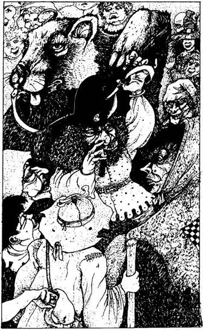
268.
A ló elvágtat veled, s közben elkeseredetten kapaszkodsz a hátába. A úton robog le néhány elszórtan álló kunyhó felé, ahol hirtelen egy pöttömnyi, pikkelyes testű teremtmény rohan át előtte, és megállásra kényszeríti. Leereszkedsz a ló hátáról, és szerencsére sértetlenül érsz földet. A ló felnyerít és elszáguld, miközben föltápászkodsz a földről. Ha odamész az utca bal oldalán lévő kunyhóhoz - lapozz a 66-ra. Ha egy másik kunyhóhoz mész oda az utca jobb oldalán - lapozz a 171-re. Ha nem törődsz a házakkal és továbbmész - lapozz a 294-re.
269.
A tömeg a medvetáncoltató Törpe körül csoportosul. A Törpe az egyik kezében a medve orrában lévő gyűrűhöz erősített pórázt tartja. A póráz végét rángatva arra készteti a medvét, hogy az cammogó táncot járjon. A másik kezében egy parányi síp van, mellyel vidám nótát fúj. A medve nem valami kecses táncos, és a tömeg hangosan nevetve szemléli esetlen lépteit. Néhány percig te is őt nézed. Hirtelen kiáltás hangzik fel a tömegből: - Eltűnt az aranyam! Zsebtolvaj! Vigyázz, zsebtolvaj! - A tömeg veled együtt a hang felé fordul. Egy apró termetű teremtményt pillantasz meg, aki a tömegből kiválva eltűnik az egyik sátorban. Nincs sok remény rá, hogy elfogják. Ekkor visszafordulsz a medvét táncoltató Törpe felé, de az abban a pillanatban eltűnik a szemed elől! Ez a mutatvány nem volt egyéb, mint illúzió, amely csupán azt a célt szolgálta, hogy elvonja a tömeg figyelmét, mialatt a zsebtolvaj ellopja az aranyakat. A többi teremtmény is megnézi a zsebeit, és kiderül, hogy sokan lettek a zsebtolvaj áldozatai. A te Aranyad megvan? Tedd próbára a SZERENCSÉDET! Ha SZERENCSÉD van - lapozz a 63-ra. Ha nincs SZERENCSÉD - lapozz a 177-re.
270.
Szép lassan bukfencezel lefelé a levegőben… Nem látsz semmit, olyan sötét van. Ekkor, mintha csak egy alagútba zuhannál bele, a távolban fényt pillantasz meg, amely egyre nő, minél közelebb kerülsz hozzá. Végül elérsz végzetedhez, mely talán még a halálnál is rosszabb!
Minden kétséget kizáróan a Kharé alatti szennyvízcsatorna-hálózatban vagy. Mindenfelé alagutak futnak, és a bűz kibírhatatlan. Egy undorító szennykupacon landolsz: nyakig ülsz a takonyban, ürülékben, sárban, ganajban és szennyben! Mielőtt még megpróbálnál kimászni ebből a mocsokból, közvetlenül a bal füled mellől vízcsobogást hallasz. Odanézel, és a falban egy piciny nyílást veszel észre. Ezen át ömlik be a szennyvíz meg a kosz, amely pillanatokon belül az arcodba zúdul. Gyorsan kell cselekedned: ha megpróbálsz lebukni előle az ürülék alá - lapozz a 250-re. Ha képtelen vagy erre - lapozz a 327-re.

271.
Elindulsz Kharé városának Északi Kapujához. A kaputól néhány méterre dermedten lecövekelsz, amikor egy fantomhang szólal meg: - Megállj, idegen! - mennydörgi a hang. Körülnézel, de senkit sem látsz a közeledben. A Kapu szól hozzád! - Nem léphetsz át e Kapun, mert varázszár van rajta. Ha nem ismered a nyitóvarázslatot, a következő lépésednél meghalsz!
Ismered-e a kaput nyitó varázslat négy sorát? Ha ismered, helyezd őket a megfelelő sorrendbe, és mondd el a Kapu felé fordulva. Három szám van elrejtve a varázsigében. Ha a helyes sorrendben írod le ezeket, egy háromjegyű számot kapsz. Lapozz erre a pontra, hogy megtudd, helyesen mondtad-e el a varázsigét. Ha nem ismered a varázsige négy sorát, újra kell kezdened utadat, de most már pontosabban kell követned azokat a nyomokat, amelyek elvezetnek a varázsige sorainak ismerőihez…
272.
Megvetted-e a porral teli fiolát? Ha igen - lapozz a 247-re. Ha nem - lapozz a 259-re.
273.
Dobj két kockával! Ha a kapott összeg nagyobb, mint ÜGYESSÉGED - lapozz a 303-ra. Ha a kapott összeg kevesebb vagy ugyanannyi, mint ÜGYESSÉGED - lapozz a 313-ra.
274.
- Hadd lássam! - mondja. - Miből gondolod, hogy ez a helyes megoldás? - Elmagyarázod neki, hogy a többi játékkockán foltok vannak. Ez a hiányzó jel. - Hát persze! - helyesel. Nagyon boldog, amiért sikerült megfejtened a feladatot, és buzgón beleegyezik, hogy segít küldetésedben - A varázsige egyetlen sorát ismerem csupán - kezdi -, amely így hangzik: "Kaput csukó kettős zár." Fogalmam sincs, kik azok a városban, akik a másik három sort ismerik, csak annyit tudok, hogy mindannyian előkelő polgárok. Itt gyakran előfordul, hogy a teremtmények sokkal többet tudnak, mint az emberek, Úgyhogy ez az ajándék biztosan hasznodra lesz. - Átnyújt egy bugyellárist, melyben egy maroknyi zöld szőrféle lapul. Amikor kiveszed és megnézed, akkor látod, hogy ez egy paróka, amely varázsláskor jól jön majd. Miután köszönetet mondasz neki, úgy döntesz, hogy továbbállsz, de előbb még magadhoz veszed a fegyveredet. SZERENCSE pontjaid számát állítsd vissza a Kezdeti értékre, és lapozz a 133-ra.
275.
Visszafordulsz az emlékműtől, óvatosan megkerülöd, és elindulsz a tér túlsó oldala felé. Lapozz a 135-re.

276.
Hátralépsz, és a hulla testének darabjai tehetetlenül vergődnek előtted. Végül a földön egyesülnek, de a test olyan látványt nyújt, mintha kocsihajtó versenyen gázoltak volna át rajta. Az egyik szomszédos kunyhó ajtaján valaki kidugja a fejét, és magához int. Néhány Gnóm a kunyhójából nézte végig a csatát, és most mindnyájan köszönetet mondanak neked, amiért megszabadítottad környéküket attól a rémséges teremtménytől. Gyermekeik most már nyugodtan játszhatnak az utcákon.
Hálából 5 Aranyat nyomnak a markodba, és megkérdezik, miben lehetnek a segítségedre. Elmondod, mi járatban vagy errefelé. Mindannyian egyetértenek abban, hogy előbb meg kell találnod a varázsige négy sorát, csak akkor hagyhatod el a kikötővárost. Azt tanácsolják, hogy keresd fel a város központja felé vezető úton lakó papot, aki talán segíteni tud neked. Ezenkívül felajánlanak még neked néhány tárgyat, amit majd varázsláskor használhatsz. Kaphatsz tőlük egy üveg gyógyitalt, vagy három kis kerek kavicsot tartalmazó zacskót, vagy egy fiola homokot (ritkaságszámba menő tengeri kincset). Ezek közül egyet választhatsz. Lapozz a 239-re.
277.
Gúnyolnak, hogy csinálj valamit. Rá kell kényszerítened őket, hogy adják vissza a pénzedet. Egyikük pislog egyet, amint a föld felé hajol, és mikor a szemhéja kissé szétnyílik, megpillantod a szemét - két vörösen izzó golyót! Ha felkészülsz, hogy megtámadd őket - lapozz a 103-ra. Ha otthagyod őket és továbbmész - lapozz a 89-re.
278.
Nem találtad el, nem ez a gyenge pontja. Az óriás teremtmény beléd rúg, s szaltózva zuhansz a talapzatra. Vesztesz 3 ÉLETERŐ pontot! Lapozz vissza a 326-ra, és válassz újra.
279.
Egy darab penészes kecskesajt hullik a lábad elé. A szaga iszonyatos. Ha akarod, eldobhatod, de el is teheted. Ha elteszed, mindaddig, amíg nálad van, 1 ÉLETERŐ pontot le kell vonnod magadtól. Dühösen fordulsz a férfi felé, de az csak vállat von, és csak annyit mond, hogy ez csupán a szerencse játéka volt. Kimész a sátorból, és folytatod az utadat. Lapozz a 160-ra.
280.
Miközben vársz, csoszogást hallasz az ajtó mögül. Végül is előbújik egy alak, és azonnal felismered benne a Lánckészítő mestert, aki nem más, mint egy Torreparriból származó, az ember-orkok családjából való SVINN. Mogorván köszönt, és megkérdezi, vajon akarsz-e láncot venni. Ha kiválasztasz egy érdekesnek látszó láncot és megkérdezed, mennyibe kerül - lapozz a 332-re. Ha megkérdezed, vajon nem tud-e segíteni neked abban, hogy megtaláld az Északi Kaput nyitó varázsigét - lapozz a 161-re.
281.
Lenyeled a varázsitalt, és várod, mi történik. Szédülni kezdesz, majd elveszted az eszméletedet, és elterülsz a földön. Amikor magadhoz térsz és körülnézel, egész más helyen találod magad, mint ahol korábban voltál, s a járókelők döbbenten néznek. Lapozz a 294-re.
282.
Fölmész a szobádba. Bent koromsötét van, gyertyát nem kaptál, így kitapogatod az ágyadat, és leülsz rá. Ha akarod, ehetsz most Élelmedből, és ezáltal 2 ÉLETERŐ pontot nyersz, ha ma még nem ettél volna (de csak 1 ÉLETERŐ pontot kapsz, ha ma már ettél). Végigfekszel az ágyon, és elalszol. Lapozz a 227-re.
283.
A szeme összeszűkül, amikor rád néz. Tompa hangon szólal meg, és motyogni kezd valamit, amit alig értesz. Ételt kínál neked, de az 5 Aranytallérba kerül. Ha továbbra is folytatni akarod a csaló játékot, venned kell egy adagételt - nyersz 2 ÉLETERŐ pontot, ha ez ma az első táplálékod (de csak 1 pontot kapsz, ha ma már ettél volna) - lapozz a 100-ra. Ha nem akarsz vagy nem tudsz neki fizetni, akkor távoznod kell - lapozz a 294-re, vagy meg kell támadnod. Ha fegyvereddel támadsz rá - lapozz a 243-ra. Ha varázsolni akarsz - lapozz a 257-re.
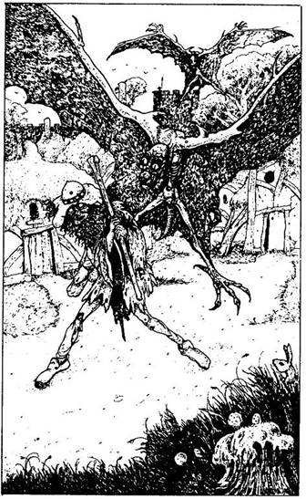
284.
Hol csókolod most meg? Ha a homlokán - lapozz a 314-re. Ha a jobb szemén - lapozz a 78-ra. Ha a jobb orcáján - lapozz a 334-re. Ha a bal orcáján - lapozz a 88-ra. Ha az orrán - lapozz a 296-ra. Ha a száján - lapozz a 231-re.
285.
Odavetsz neki egy érmét, amit hálásan megköszön. Leülsz mellé beszélgetni egy kicsit. Hirtelen visítás hallatszik a fejetek fölött - Jaj, nem! - kiáltja. - Már megint ezek az istenverte Hárpiák! Mikor hagynak végre békén? Folyton csak gyötörnek! - Fölnézel az égre, ahol két szárnyas állatot pillantasz meg, amelyek a fejetek fölött köröznek. Az undorító, sötét bőrű teremtmények lábát és karját éles karmok díszítik. Mindketten talpra szökkentek. Nem igazán tudjátok, mitévők legyetek, de a koldus megragadja a botját, és vakon hadonászni kezd vele a levegőben. - Az aranyamra vadásznak! - kiáltja oda neked. - Nincs bennük könyörület még egy vak ember iránt sem! Ó, idegen, látod ezeket a gazfickókat? Tudnál nekem segíteni? - Az egyik Hárpia ráveti magát a levegőből, és belecsimpaszkodik a fejébe, ettől az öreg elterül a földön. Ha segítesz az öregnek - lapozz a 97-re, ha nem avatkozol bele a küzdelembe, hanem inkább továbbrohansz lefelé az úton - lapozz a 148-ra.
286.
Jót nevetnek úri modorodon. Egyikük elgáncsol, és felbuksz. Esés közben kinyílik a pénztárcád, és kihullanak belőle az útra az Aranyaid. (Ha nincs Aranyad, 2 ÉLETERŐ pontot vesztesz, amiért felhorzsoltad a térdedet, és lapozz a 89-re.) A teremtmények odaugranak hozzád, hogy segítsenek felszedni az Aranytallérjaidat, de valójában az összeset a saját zsebükbe teszik el. Dobj egy kockával. Ennyi Aranytallérodat sikerült fölszedned, mielőtt még "segítettek volna neked", és ennyi az összes Aranyad, amit megmentettél. Ha Próbára akarod tenni a SZERENCSÉDET, megteheted. Ha SZERENCSÉD van, újra dobhatsz, és annyi Aranytallért szedhetsz még fel a teremtmények előtt, amennyit dobsz. (Természetesen több Aranyat nem szedhetsz össze, mint amennyivel eredetileg rendelkeztél.) Ha visszaköveteled tőlük az általuk ellopott Aranytallérokat - lapozz a 277-re. Ha otthagyod őket és továbbmész - lapozz a 89-re.

287.
Egymásra néznek, és megpróbálják eldönteni, Vajon remélhetnek-e tőled még több Aranyat. - Jól van, vándor - mondja a magasabb -, csinálhatsz bármit, csak igyekezz! - Elveszik tőled a pénzt, és elfordítják a fejüket a kaputól. Nincs sok időd rá, hogy odamenj a kapuhoz és megpróbáld kinyitni. Lapozz a 271-re.
288.
Amikor rálépsz a körre, úgy érzed, mintha az űrbe lépnél, és lezuhansz a mélybe. Ez egy Kapucsapda, amelyen át lassan a sötét mélységbe hullasz. Lapozz a 270-re.
289.
Közlik veled, hogy rossz irányba mész. Vissza kell fordulnod, és egy másik úton kell továbbmenned. Hajlandó vagy-e erre? Ha igen - lapozz a 233-ra. Ha azon az úton akarsz továbbmenni, amelyiken eddig is haladtál - lapozz a 329-re.
290.
Sikerül kicsúsznod a karmaik közül. Harcra készen néznek farkasszemet vejed. Akarsz-e varázsolni?
GAK VIK TÜK MEL TEL
367 462 382 434 495
Ha inkább karddal küzdesz meg velük - lapozz a 309-re.
291.
Lefognak, odavezetnek az épülethez, belöknek, és rád zárják az ajtót. Miután magadhoz térsz, körülnézel. Lapozz a 254-re.
292.
Elindulsz az úton a kunyhók felé. Az öreg besurrant az út bal oldalán egy nagy, koszos kunyhóba. Ha akarod, utánamehetsz - lapozz a 66-ra. Vagy bemehetsz a szemközti házba, ahonnan valami érdekes szag szivárog ki az útra - lapozz a 171-re. De ha akarod, folytathatod az utadat a kunyhók között - lapozz a 294-re.
293.
A Kobold igen hálás, és megkérdezi, hogy viszonozhatná a segítségedet. Elmeséled, mi járatban vagy errefelé, és azt is elmondod, hogy az Északi Kaput nyitó varázsigét szeretnéd megismerni. Nem tud semmit a varázsigéről, de ajánlhat valakit, aki segíthet neked. Felpattan a levegőbe, megcsapkodja a szárnyait, és int, hogy kövesd. A parányi teremtmény Törpék házai között vezet, majd egy bozótos részen át. Végül egy újabb úthoz értek, ahol a Kobold elbúcsúzik tőled, és egy nagy, vakolt kőházra mutat. 1 SZERENCSE pontot nyersz, amiért erre a házra rátaláltál. Ha odamész a ház bejáratához - lapozz a 140-re. Ha a ház mögé lopakodsz - lapozz a 208-ra. Ha továbbmész lefelé az úton - lapozz a 133-ra.
294.
Föntről, az út végéből zajongó tömeg hangját hallod. Lehet, hogy valami piac vagy vásár felé tartasz éppen. Egy útelágazáshoz érsz, ahonnan vagy egyenesen mész tovább - lapozz a 244-re, vagy balra fordulsz - lapozz a 328-ra. Melyik utat választod?
295.
"Dobj ide még egy Aranyat nekem,
S minden sebed begyógyul menten!"
Ha egy újabb Aranyat kívánsz a kútba dobni - lapozz a 15-re. Ha inkább folytatod az utadat - lapozz a 319-re.
296.
Hol csókolod meg? Ha a homlokán - lapozz a 314-re. Ha a jobb szemén - lapozz a 2-re. Ha a bal szemén - lapozz a 163-ra. Ha a jobb orcáján - lapozz a 334-re. Ha a bal orcáján - lapozz a 88-ra. Ha a száján - lapozz a 231-re.
297.
Belépsz Kharé központjába, ahol a házak már sűrűn egymás mellé épültek. Emberek és különféle teremtmények ólálkodnak az utcákon. Késő délután van már, és jó lesz, ha elkezdesz azon gondolkodni, vajon hol is töltöd az éjszakát. Melletted egy ifjú sétál az utcán, akivel beszélgetésbe elegyedsz. A különös fickó Slanggnak nevezi magát. Elmondja, hogy Kharé Északi Kapuja mögött lakik. Meglepő történeteket mesél az anyjáról, aki Bűzös Borz, meg arról, hogy ő maga csak patkányvelőt fogyaszt, és ő Kharé Első Főnemesének személyi szolgája. Csakhamar rájössz, hogy egy kényszeres hazudozóval van dolgod! Bármit mond, az hazugság! Végül is elértek egy útkereszteződéshez, mely közel van úticéljához. Mielőtt elbúcsúznátok, tanácsot kérhetsz tőle. Ha azt kérdezed tőle, hogyan juthatsz el a legközelebbi fogadóig - lapozz a 216-ra. Ha azt kérdezed meg tőle, vajon nem tudná-e megmondani, miképp juthatsz el ahhoz az emberhez, aki ismeri az Északi Kaput nyitó varázsige egyik sorát - lapozz az 51-re.

298.
Zsákutcában vagy. Merre mész tovább?
Megfordulsz, és az első elágazáson jobbra
mész le? Lapozz a 77-re.
Megfordulsz, és az első elágazáson balra mész le,
majd a másodikon is balra? Lapozz a 42-re.
Megfordulsz, és balra az első elágazáson mész tovább
egyenesen? Lapozz a 174-re.

299.
Kardot rántasz, és futva indulsz el a teremtmény felé. Igen lassan mozog. Sikerül a közelébe kerülnöd, és hatalmasat sújtasz a derekára. Kardod hangos csattanással pattan le bronztestéről, és közben fájdalmasan megrándul a karod. Vesztesz 1 ÉLETERŐ pontot. A BRONZSZOBOR meglendíti feléd a karját. Bár elugrasz előle, mégis sikerül elkapnia és fölemelnie a magasba. További 2 ÉLETERŐ pontot vesztesz. Meg kell küzdened a Szoborral:
Bronzszobor ÜGYESSÉG 10 ÉLETERŐ 15
Miután első csapásodat ejted - lapozz a 326-ra.

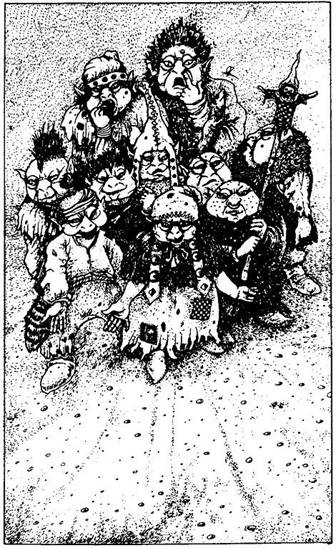
300.
Az út egy idő után kissé összeszűkül. Fiatal Ork kölykök lökdösődő csapata közelít feléd. Amikor megpillantanak, odarohannak hozzád, körbefognak és így könyörögnek: - Helló, adj egy Aranyat! - Tíz apró tenyér nyúlik feléd az adományt várva. Ha vetsz nekik egy Aranytallért - lapozz a 91-re. Ha nem veszel róluk tudomást, hanem továbbmész - lapozz a 329-re.
301.
- A kérdés… - kezdi a pap, majd elhallgat, és lesi a tömegen a hatást. A kérdés az… Vajon melyik volt a kedvenc színe?
Hevesen tiltakozol, mert kérdése mindennek mondható, csak tisztességesnek nem. A tömeg hangos nevetésben tör ki. Maflán vigyorogsz, amikor rájössz, hogy a szokásos beugrató kérdését tette fel neked. Pap létére igazán kiváló mókamester!
- Jól van, no, te analandi! - kezdi. Elámulsz. Vajon honnan tudja, hogy Analandból jöttél? Felteszi a kérdését: - A Nagylábúnak 6 fia van. Élete alkonyán úgy dönt, hogy vagyonát egyenlően osztja szét közöttük. 5 Aranytallért ad sorban a második legfiatalabb fiának, 13 Aranytallért ad a legidősebb fiának és 9 Aranyat a negyedik legfiatalabb fiának. Tudod-e, hogy a maradék három fia egyenként hány Aranyat kapott és összesen hány Aranytallérja volt a Nagylábúnak?
Jól gondold meg, mit válaszolsz neki. Amikor úgy érzed, tudod a választ, hangosan mondd meg, és lapozz arra a pontra. Ha nem tudsz válaszolni a kérdésre - lapozz a 248-ra.
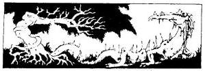
302.
Ha varázslattal akarsz véget vetni a verekedésnek, melyiket választod?
BŰZ WIK FIX ALV ANY
391 379 447 410 400
Ha közbelépsz és szétválasztod a kér verekedőt - lapozz a 311-re.
303.
Fenyegetésed nem nagyon izgatja a teremtményt. Egyre közeledik feléd. Meg kell támadnod. Lapozz a 243-ra, ha a fegyvereddel akarsz megküzdeni vele. Ha varázsolni akarsz - lapozz a 257-re.
304.
A furulya kellemes hangon szól, és dallama elkísér utadon. Lapozz vissza a 264-re.
305.
A matrac alatta sarokban egy fekete fából készült faragott maszkot találsz, mely a Fekete Elfek egyik imádott istenét ábrázolja. Elteheted, ha akarod. Ezenkívül semmi különöset nem találsz a szobában. Elhagyod a kunyhót. Lapozz a 213-ra.
306.
Elfogadja a meghívásodat, és odatámolyogsz a bárpulthoz. Két korsó sört veszel (1 Aranytallér darabja - ha nincs elég pénzed, nem ajánlhatod fel neki az italt, és lapozz a 86-ra). Mindketten lerészegedtek. A hátad mögött megpillantja a barátját, és int neki, de ahelyett, hogy üdvözölné, előhúz az övéből egy fütyköst, és jól fejbe vág vele. Eszméletlenül zuhansz az asztalra. Lapozz a 312-re.
307.
Átvágsz a mezőn a tűz körül csoportosuló undorító külsejű teremtményekhez. A tűz fölött a nyárson hatalmas disznó sül, amelyet az imént szúrtak le. Ez itt alkalmas hely lehet a számodra, hogy pihenj és egyél. (Tedd ezt, ha akarod, de ne felejts el levonni magadtól 1 Élelem pontot. Ha ez ma az első táplálkozásod, akkor 2 ponttal növelheted ÉLETERŐDET, de csak 1 ponttal, ha ma már ettél volna.) De oda is mehetsz hozzájuk, megismerkedhetsz velük, és ha a disznó már megsült, te is ehetsz az "ingyenételekből" - lapozz a 245-re. Ha nem akarsz a disznósültből enni, visszamehetsz az útra, és folytathatod az utadat - lapozz a 62-re.
308.
Ehetsz egy adag ételt, és nyersz 2 ÉLETERŐ pontot. Azonban, ha eszel, ételedet meg kell osztanod az öreggel, mert ő is éhes és hasznos információval szolgált. Adj neki 1 adag Élelmet (ha csak 1 adag Élelmed van, azt meg kell vele osztanod, és csupán 1 ÉLETERŐ pontot kapsz jutalmul) lapozz a 333-ra.
309.
Miközben kardot rántasz, egyikük kinyitja a szemét. Mindkét szemhéja mögül egy-egy lángnyelv csap ki az arcodba. Felordítasz, és kezedet a szemedhez kapod, de már késő. Örök vakság az ára annak, hogy összetalálkoztál a VÖRÖSSZEMŰEKKEL és most már képtelen leszel rá, hogy folytasd a küldetésedet.
310.
Melyik varázslatot alkalmazod?
ZAV TÜV VAR GOB LÁP
473 480 433 365 389
Ha ezek közül egyik varázslatot sem ismered, kardoddal kell küzdened - lapozz a 118-ra.

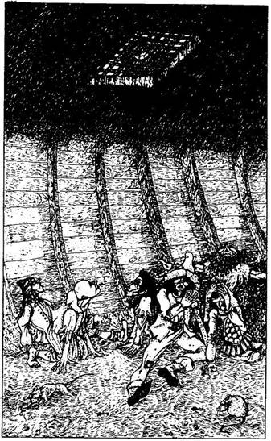
311.
A tömeg kifütyül, amikor elindulsz felé. Nyakon csíped a teremtményeket, és szétválasztod őket. Ahelyett, hogy hálásak lennének neked, mindketten rád támadnak! Küzdj meg velük:
ÜGYESSÉG ÉLETERŐ
Kobold 5 6
Pindur 5 5
Mindketten egyszerre vetik rád magukat. Dobókockával állapítsd meg a saját Támadóerődet, majd külön-külön a teremtmények Támadóerejét. Ha a te Támadóerőd nagyobb, mint bármelyik teremtményé, te döntheted el, melyikük ellen fogsz harcolni. Ha egyikük Támadóereje nagyobb a tiédnél, a másiké meg kisebb, akkor az utóbbit sikerül megsebezned, de ugyanakkor a másiktól, amelyiknek a tiédnél nagyobb a Támadóereje, te kapsz sebet. Ha mindkettőjük Támadóereje nagyobb a tiédnél, mindketten megsebeznek. Részükről ez nem lesz élethalálharc (bár megpróbálnak megölni) - feladják, és abbahagyják a küzdelmet, amikor ÉLETERŐ pontjuk 2-re csökken. Ha a harcnak vége, a tömeg szétoszlik, és te folytathatod az utadat. - Lapozz a 153-ra.
312.
Amikor kinyitod a szemedet, éles, hasító fájdalmat érzel a fejedben. Vesztesz 2 ÉLETERŐ pontot! Miközben megmasszírozod a nyakadat, körülnézel. Mintha lágyan ringana alattad a talaj, és ez vagy azért van, mert még nem heverted ki az ütést, amit kaptál, vagy azért, mert egy hajón ülsz. A hajófenék nyitott tetőablaka az utóbbira enged következtetni. Számos hozzád hasonló alak hever körülötted a földön. Az egyiket felrázod álmából. Megdörzsöli a fejét. Megkérdezed, hol vagytok. Arra a következtetésre juttok, hogy mindkettőtöket megtámadtak, és egy rabszolgahajóra vittek, hogy ott szolgáljatok. Reménytelen vállalkozás lenne elérni a mennyezeten lévő ablakot. Akarsz-e varázsolni?
TÉR VIK EME REP KIN
501 402 464 343 438
Ha megvárod, mi történik veletek - lapozz a 179-re.
313.
Hangod megdöbbenti a teremtményt. Visszaoson a sarokba, és hagyja, hogy elvedd a dobozt. Lapozz a 29-re.
314.
Hol csókolod meg? Ha a jobb szemén - lapozz a 2-re. Ha a bal szemén - lapozz a 163-ra. Ha a jobb orcáján - lapozz a 334-re. Ha a bal orcáján - lapozz a 88-ra. Ha az orrán - lapozz a 296-ra. Ha a száján - lapozz a 231-re.
315.
"Csak még egyetlen Aranyat kérek,
És ha bajba jutsz, segítek néked!"
Ha ledobsz a kútba még egy Aranyat - lapozz a 152-re. Ha inkább folytatod az utadat - lapozz a 319-re.

316.
Sikerül elszabadulnod a kölyköktől, és továbbmész az úton. Kissé följebb egy hatalmas vakolt kőház mellett haladsz el. Az épület tekintélyt sugároz. Ha odamész a bejárati ajtóhoz - lapozz a 140-re. Ha megkerülöd a házat - lapozz a 208-ra. Ha egyenesen továbbmész - lapozz a 133-ra.

317.
Megpróbálhatsz bemenni a kriptába. Ha kitárod az ajtót és berontasz, bárki vagy bármi legyen is ott - lapozz a 249-re. Ha előhúzol valamit a hátizsákodból, ami talán most hasznos lehet - lapozz a 7-re. Ha varázsolnál, melyik varázslatot alkalmaznád?
CSA DOK ERŐ NÖV FAK
390 499 476 452 424
318.
Elveszi a pénzedet, és a vitrin oldalában megnyom egy gombot. A Minimó felvisít a vitrinben, és helyéről felpattanva röpködni kezd a tárgyak fölött. Egyet kiválaszt, odaröppen vele a nyitott dobozhoz, és beledobja. Innen aztán kipattan a tárgya lábad elé. Mit kaptál? Dobj egy kockával.
Ha 1-et dobsz - lapozz a 279-re.
Ha 2-t dobsz - lapozz az 5-re.
Ha 3-at dobsz - lapozz a 167-re.
Ha 4-et dobsz - lapozz a 92-re.
Ha 5-öt dobsz - lapozz a 71-re.
Ha 6-ot dobsz - lapozz a 219-re.
Ha akarod, most Tedd próbára a SZERENCSÉDET, hogy megtudd, értékes avagy értéktelen díjat nyertél-e. Ha próbára tetted a SZERENCSÉDET és SZERENCSÉD van, kockadobás helyett a fönti hat lehetőség közül választhatsz egyet. Igaz ugyan, hogy nem tudod előre, melyik szám rejti az értékes és melyik az értéktelen díjat, egyet azonban elárulhatunk: értékes díjat 1-től 3-ig csupán egy szám, 4-től 6-ig viszont két szám tartogat számodra. Tehát akkor jársz nagyobb sikerrel, ha a 4, 5 vagy 6-ot választod.
319.
Elhagyod a város központját. Az utcából egy koszos útra térsz le, mely egy magas ház mellett és apró kunyhók között vezet. A távolban megpillantod a Kharéi Nagy Falat és az Északi Kaput. Az út mellett egy kivágott fánál megállhatsz táplálkozni. Ha ezt teszed - nyersz 2 ÉLETERŐ pontot, amennyiben ma ez az első étkezésed. (Csak 1 ÉLETERŐ pontot nyersz, ha ma már ettél volna.) A kunyhók előtt az úton egy vak koldussal találkozol, aki alamizsnáért könyörög. Ha adsz neki egy Aranytallért - lapozz a 285-re. Ha továbbmész a Kapu felé - lapozz a 148-ra.
320.
Lehajolsz, és a füledet odateszed a víz felszínéhez. A kis ezüsthal rád köp, és egy vízcsepp hullik az arcodra. Ha a halak egyáltalán tudnak nevetni, hát megesküdnél rá, hogy ez a halacska jót kacagott rajtad! Szájából ismét buborékok szállnak fel. Valami hang is hallatszik, de a buborékok elnyomják. Mintha olyasmit mondott volna, hogy: "Bwrthhrs." De vajon mit jelenthet ez? A kis hal visszaúszik a sziklamenedékébe, te pedig továbbmehetsz - lapozz a 28-ra, vagy megpróbálhatod felvenni az érmét - lapozz a 85-re.

321.
A tömeg nem nézi jó szemmel beavatkozásodat. Választanod kell, kinek az oldalára állsz: a Kobold vagy a Pindur oldalára? Döntsd el kettőjük harcát:
ÜGYESSÉG ÉLETERŐ
Kobold 5 6
Pindur 5 5
Minden Fordulóban hasonlítsd össze a Támadóerődet az általad kiválasztott szövetségesed Támadóerejével. Kettőtök közül az lesz a fő küzdőfél a
Fordulóban, akinek a Támadóereje nagyobb. (Küzdj meg a szokásos módon.) De ha a harc másik résztvevőjének (azaz a szövetségesednek, ha a te Támadóerőd volt nagyobb) az ellenfelénél szintén magasabb a Támadóereje, akkor az ellenfél külön sérülést szenved.
Két Forduló után, amennyiben az ellenfél még mindig életben van, egy TÖRPE száll be a küzdelembe, s megpróbálja kiegyenlíteni az erőviszonyokat. A Törpe veled fog összecsapni, míg a másik kettő harcol, és meg kell ölnöd a Törpét, mielőtt szövetségesed segítségére sietnél.
Törpe ÜGYESSÉG 6 ÉLETERŐ 6
Ha megúszod élve ezt a csatát - lapozz a 293-ra, ha a Koboldot segítetted. Ha a Pindurt segítetted - lapozz a 335-re.
322.
Továbbmész az úton a következő útkereszteződésig. Bal kéz felől zajt hallasz, és elindulsz a kanyar felé, amerre a tömeget sejted. Lapozz a 244-re.
323.
Akárki nyerte is meg a csatát, az az új bajnok. Küzdj meg vagy az Ogréval, vagy a Barbárral:
ÜGYESSÉG ÉLETERŐ
Ogre 9 12
Barbár 7 8
Ha te nyersz, megkapod az érte járó jutalmat (15 Aranytallért). A haramia megkérdi, akarsz-e az új bajnoka lenni. Neked azonban ennél sokkal fontosabb feladatod van. Lapozz a 263-ra.
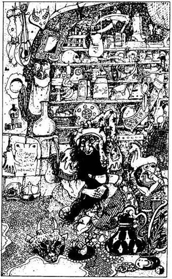
324.
Belépsz a kunyhóba, és tágra nyílik a szemed az ámulattól. A szoba zsúfolásig tele van mindenféle csecsebecsével. A falakat beborító polcok csak úgy roskadoznak tőlük, és a mennyezetről is egy csomó csetresz csüng alá, meg a falnak támasztva is rengeteg tárgy sorakozik. A kunyhó telis-tele van fegyverekkel, edényekkel, ékszerekkel, háztartási eszközökkel, varázstárgyakkal és minden egyébbel. A földön egy pöttömnyi, szakállas GNÓM ül törökülésben, aki kezeit dörzsölgetve üdvözöl, amikor meglát. Cincogó hangon hív, hogy ülj mellé és cserélj vele tárgyakat. Ehhez azonban rendelkezned kell olyan tárgyakkal, amelyeket elcserélnél vele; ha nincsenek ilyen tárgyaid, akár le se ülj mellé. Ha meg akarod nézni, mit ajánl fel neked - lapozz a 264-re. Ha nem tudsz vagy nem akarsz cserélni - lapozz a 158-ra.
325.
Elhagyod a fogadót. A hajnali fényben jól látod, hogy a fogadó igen közel van a folyóparthoz és a Jabaji folyót átívelő egyetlen hídhoz, a Kikötő Hídhoz. Átmész a széles folyó túlpartjára, ahol kétfelé ágazik az út. Ha balra indulsz tovább - lapozz a 132-re. Ha jobbra - lapozz a 198-ra.

326.
Nem tudsz kárt tenni a fémteremtményben, minden ütésed lepattan róla. Valójában csak akkor lehet legyőzni, ha az ember megtalálja a gyenge pontját. Ha figyelmesen szemügyre vetted, akkor talán észrevetted, melyik ez a pontja. Mit gondolsz, melyik?
A jobb lába? Lapozz a 265-re.
A bal bokája? Lapozz a 278-ra.
A jobb combja? Lapozz a 35-re.
Egyéb testrésze? Lapozz a 93-ra.
327.
Nem veszel lélegzetet, amíg a szennyvíz bugyogva ömlik rá a résből az arcodra. Majd elhányod magad, s ezért 3 ÉLETERŐ pontot vesztesz. Kimászol az undorító ürülékből, majd letisztogatod magad, amennyire csak lehet. Valahogy kiutat kell találnod innen. Mit teszel?
Továbbmész egyenesen, majd az első elágazásnál balra,
onnan az elsőnél jobbra, majd megint jobbra és az
elsőnél balra? Lapozz a 10-re.
Továbbmész egyenesen, majd a második elágazásnál jobbra,
onnan az elsőnél ismét jobbra és megint egyenesen
tovább? Lapozz a 298-ra.
Továbbmész egyenesén, majd az első elágazásnál jobbra,
aztán az elsőnél balra és ismét az elsőnél jobbra? Lapozz a 77-re.
328.
Csakhamar egy újabb útelágazáshoz érsz, ahonnan vagy a kis házak felé veheted az utadat - lapozz a 32-re, vagy elmehetsz jobbra - lapozz a 57-re.
329.
Amikor köréd gyűlnek, megérzed, hogy apró kezeikkel a hátizsákodat ráncigálják. Bele akarnak nyúlni, hogy megnézzék, nincs-e valami olyan értéked, amit ellophatnának. Tedd próbára a SZERENCSÉDET! Ha SZERENCSÉD van - lapozz a 316-ra. Ha nincs SZERENCSÉD - lapozz a 262-re.
330.
Megpróbálsz küzdeni ellenük, de túl szorosan fognak, és odatuszkolnak a medencéhez. Az egyiket sikerül képen törölnöd, mire felpattan egy pillanatra a szemhéja, és ekkor megpillantod azt a két tüzes golyót, mely a VÖRÖSSZEMŰEK szeme helyén van. Belelöknek a medencébe. A csobbanás azonban, amit vársz, elmarad. Lapozz a 270-re.
331.
Kifizeted a fogadósnak az ennivalót. Eltűnik a hátsó szobában, és egy hatalmas tál gőzölgő étellel tér vissza. Nesze, egyél! - mondja nevetve. - Van még, ha köll. - Elveszed a tálat, leülsz egy asztalhoz, és falatozni kezdesz. Nyersz 2 ÉLETERŐ pontot, ha ma ez az első táplálékod, de
csak 1 ÉLETERŐ pontot kapsz, ha a mai nap folyamán már ettél volna. Miközben eszel, egy otromba tengerész lép oda az asztalodhoz, és leül melléd. Csevegni akarna veled, de téged jobban leköt az evés. Ekkor meghív egy pofa sörre, amit elfogadsz. Elfogyasztod az ételedet, majd kortyolsz egyet a sörödből. Kapsz 1 ÉLETERŐ pontot a sörért. Beszélgetni kezdtek, és megkérdezi, mi járatban vagy errefelé. Elmondod neki, hogy az Északi Kaput nyitó varázslat varázsigéjét szeretnéd megtalálni. - Szívesen segítek néked - mondja -, de ahhoz, hogy megleld a varázsige sorait, meg kell ölnöd az élőholtat, az pedig nem lesz egyenlő csata! Mit szólnál még egy pofa sörhő, mi? - Ha elfogadod az ajánlatát és tovább beszélgetsz vele - lapozz a 253-ra. Ha inkább lefekszel aludni - lapozz a 86-ra.
332.
Jól szemügyre vesz, hogy megtudja, vajon mennyit remélhet tőled. Ha ÜGYESSÉG pontjaid száma 8 vagy ennél több, úgy látja, elég tehetős vagy - tán gazdag is -, és ezért 5 Aranytallért kér tőled. Ha ÜGYESSÉGED 8-nál kevesebb, közönséges vevőnek tekint, és csak 2 Aranyat kér tőled. Ha akarod, megpróbálhatsz úgy tenni, mintha egyszerű vándor volnál, de ehhez Tedd próbára a SZERENCSÉDET! Ha SZERENCSÉD van, lealkudhatsz az árból 1 Aranyat. Ha meg akarod venni a láncot, fizesd ki az árát, és lapozz a 203-ra. Ha nem akarod kifizetni a kért összeget, vagy távozz - lapozz a 9-re, vagy támadd meg, ha akarod, és lopd el a láncát - lapozz a 119-re.
333.
Csakhamar elálmosodsz. De vajon mennyire bízhatsz meg az öregben? Ha lefekszel a földre és aludni térsz - lapozz a 21-re. Ha az őröket várva inkább ébren maradsz és szemmel tartod a hátizsákodat - lapozz a 102-re.
334.
Hol csókolod meg? Ha a homlokán - lapozz a 314-re. Ha a jobb szemén - lapozz a 2-re. Ha a bal szemén - lapozz a 163-ra. Ha a bal orcáján - lapozz a 88-ra. Ha az orrán - lapozz a 296-ra. Ha a száján - lapozz a 231-re.
335.
A Pindur vinnyogó hangon köszönetet mond neked. Megkérdezi, mivel hálálhatná meg a segítségedet. Elmondod, mi járatban vagy errefelé, és megkérdezed, mit tud az Északi Kaput nyitó varázsigéről. Sajnos, semmit sem tud róla. Beszélgetés közben azonban mond valamit, aminek hasznát
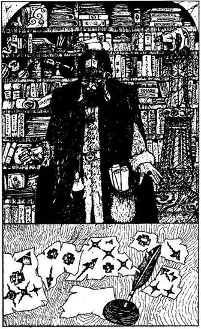
veheted. Elárulja, hogy egy bölcs Paptól többet is megtudhatsz erről a varázsigéről. Ha utadon itt továbbmész, rátalálsz a szentélyében, ahol ma a saját hitére akarja megtéríteni a gyülekezet tagjait. Arra is figyelmeztet, hogy vigyázz magadra Kharé központjában különösen a dokkok vidékén‚ mert a Rabszolgafelhajtók gyakran portyáznak arrafelé abban a reményben, hátha sikerül elfogniuk néhány rabszolgának való fickót a hajójukra. A kedvenc fogásuk az, hogy a kiszemelt áldozatot leitatják, aztán elhurcolják a hajóra. Megköszönöd a Pindur tanácsait, és továbbmész az úton. Lapozz a 153-ra. 1 SZERENCSE pontot adhatsz magadnak a figyelmeztetésért.
336.
Követed a dolgozószobájába, amelynek a falait a földtől a mennyezetig könyvekkel megrakott polcok borítják. Útközben beszélgettek, és megtudod, hogy ő bölcs tudós, aki most a helybéli gyerekeket tanítja. Békés embernek látod, aki nem hasonlít a város többi lakójához. Elmondja, hogy kellemes élete van itt, és mindent megtesz azért, hogy segítse a város fejlődését. Amikor nyilvánvalóvá válik előtted, hogy ő talán segítségedre lehet küldetésedben, megkérdezed tőle, ismeri-e az Északi Kaput nyitó varázslat varázsigéjét. - Valóban ismerem annak egyik sorát - feleli -, és boldogan meg is mondom neked, ha előbb segítesz megoldani valamit. - Beleegyezel, hogy segítesz neki. - Épp azon fáradozom, hogy megfejtsek néhány jelet. Egy feladványt akarok megoldani, de megakadtam, mert nem tudom, mi következik. Szerinted melyik? - Van némi fogalmad ezekről a jelekről, és tüzetesen szemügyre veszed őket. Nézd meg az alábbi illusztrációt, és válaszd ki, melyik következhet. Lapozz a:
115-re. 255-re. 274-re. 72-re.
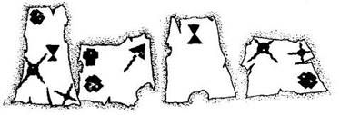
337.
Vesztesz 5 ÉLETERŐ pontot. Nincs ilyen varázslat. Lapon vissza az 1-re, és válassz újra.
338.
Vesztesz 2 ÉLETERŐ pontot! Varázslatod hatására a tó mélyén lévő Aranytallér mellett kis kupac illúziókincs jelenik meg. A hal ügyet sem vet rá. Nem tudod, hogy a kincs a te illúzióvarázslatod eredménye-e vagy sem. Ha megpróbálod elcsenni a valódi Aranytallért - lapozz a 85-re. Ha inkább elhagyod a tavat és továbbmész az úton - lapozz a 28-ra.
339.
Vesztesz 1 ÉLETERŐ pontot! Van-e nálad méhviasz? Ha nincs, nem alkalmazhatod ezt a varázslatot, és hasonmásod méri rád az első csapást (vesztesz 2 ÉLETERŐ pontot). Ha van nálad méhviasz, kend be vele a fegyveredet, és varázsolj! Most meg kell küzdened a hasonmásoddal, akinek ÜGYESSÉG és ÉLETERŐ pontja ugyanannyi, amennyi neked volt, mielőtt megtámadott volna. Ha a fegyvered varázsfegyver - dupla kárt fog okozni (azaz a szokásos 2 ÉLETERŐ pont veszteség helyett 4 pontot sebez). Ha te győzöl, el kell hagynod a kunyhót - lapozz a 137-re. A varázslat csak addig él, amíg ez a harc tart.
340.
Nincs ilyen varázslat. Lapozz vissza a 236-ra, és válassz újra. Ha mégsem gondoltad komolyan, hogy a VIK varázslat lehet - lapozz a 399-re.

341.
A Goblin odamegy a kunyhóhoz, és belép. Egy perc múlva kijön, és jelzi, hogy bátran bemehetsz, semmi ok a félelemre. Ha be akarsz menni a kunyhóba - lapozz a 27-re. Ha inkább továbbmész - lapozz a 137-re.
342.
Vesztesz 1 ÉLETERŐ pontot! Van-e Aranytallérod? Ha nincs, varázslatod nem fog működni. Ha van, helyezd a tallért a csuklódra, és varázsolj. Az érme egy láthatatlan pajzsot képez. A csata időtartamára 2 pontot levonhatsz a teremtmény Támadóerejéből, mivel e pajzs védelme alatt állsz. Fegyveredért nyúlsz. Lapozz a 243-ra. Ne feledd, hogy a csata után mind a pajzs, mind az Aranytallér eltűnik.
343.
Vesztesz 1 ÉLETERŐ pontot. Nem alkalmazhatod ezt a varázslatot, mert nem rendelkezel az ehhez szükséges Ékszerberakásos Medállal. Lapozz a 179-re.
344.
Vesztesz 5 ÉLETERŐ pontot! Nincs ilyen varázslat. Lapozz vissza a 254-re, és válassz újra.
345.
Vesztesz 1 ÉLETERŐ pontot. Varázsolsz, de nem történik semmi. Nem alkalmazhatod ezt a varázslatot, mert nem rendelkezel az ehhez szükséges Tölgyfacsemete bottal. Bejön a Lánckészítő mester, és rád vág a láncával. Vesztesz 2 ÉLETERŐ pontot. Lapozz vissza a 119-re, rántsd elő a kardodat, és küzdj meg a Lánckészítővel.
346.
Vesztesz 1 ÉLETERŐ pontot! Nem alkalmazhatod ezt a varázslatot, mert nem rendelkezel az ehhez szükséges Sárga Porral. Lapozz vissza a 108-ra, és válassz újra.
347.
Vesztesz 5 ÉLETERŐ pontot! Nincs ilyen varázslat. Lapozz vissza a 43-ra, és válassz mást.
348.
Vesztesz 1 ÉLETERŐ pontot. Nem alkalmazhatod ezt a varázslatot, mert nem rendelkezel az ehhez szükséges Kőporral. Azt hiszed, hogy a szobor most már valóban mozdulatlan, és elindulsz felé. Lapozz a 8-ra.
349.
Vesztesz 1 ÉLETERŐ pontot. Van-e Aranyhátú Tükröd? Ha nincs, nem alkalmazhatod ezt a varázslatot - rántsd elő a kardodat, és lapozz a 192-re. Ha van Aranyhátú Tükröd, előveheted a hátizsákodból, és varázsolhatsz vele. A tükröt a teremtmények felé tartod, és amikor képmásuk visszatükröződik benne, pontosan olyan hasonmásaik jelennek meg melletted, mint amilyenek ők maguk. Az eredeti teremtmények döbbenten állnak, s te a saját lényeidet vezényled ellenük. Lehet, hogy nem tudod, de ezek a teremtmények a VÖRÖSSZEMŰEK. Szemüket csukva tartják, de amikor szemhéjuk kinyílik, lángnyelvek csapnak ki mögüle és mindent felperzselnek, ami útjukba kerül. Így aztán a harc rövid, de hatásos: amikor a VÖRÖSSZEMŰEK egymásra néznek, ki-ki a maga párjára, egymást égetik fel, és holtan zuhannak a földre. Ha elloptak volna tőled némi Aranyat, azt most visszaszerezheted tőlük, és folytathatod az utadat - lapozz a 89-re.
350.
- Egy Goblint ajánlasz fel nekem? - kérdi a Gnóm hitetlenkedve. - Mi hasznom lesz egy Goblinból? - Nincs szüksége a teremtményedre. Ha most megparancsolod a Goblinnak, hogy támadjon - lapozz a 403-ra. Ha viszont azt mondod neki, hogy tűnjön el, és megpróbálsz megegyezni a Gnómmal - lapozz a 264-re.
351.
Vesztesz 2 ÉLETERŐ pontot! Van-e nálad homok? Ha nincs - lapozz a 213-ra. Ha van, beleszórhatod a vízbe, és varázsolhatsz, a tó futóhomokkal teli mederré fog válni. A kis hal minden bizonnyal meg fog halni az iszapban, de neked sikerül kiemelned az Aranytallért, még mielőtt az elsüllyedne. Tedd el az Aranyat, ha akarod, és menj tovább - lapozz a 28-ra. Ne feledd a Kalandlapodról kihúzni a felhasznált homokot!
352.
Kimászol a ringből, és Vik is átfurakszik hozzád a tömegen. Elbeszélgettek. Elmeséled neki kalandjaidat, melyek a Shamutanti dombokon estek meg veled, és azt is, miként került meg Glandragor baltája. Megkérdezed
tőle, tud-e valamit az Északi Kaput nyitó varázsige sorainak hollétéről, és ő egy fejbólintással felel. Hány sort ismersz már a varázsigéből?
Egyet sem Lapozz a 380-ra.
Egyet Lapozz a 409-re.
Kettőt Lapozz a 372-re.

353.
Vesztesz 4 ÉLETERŐ pontot! Varázsolsz, mire egy láthatatlan fal emelkedik fel előtted. Ez a fal igen hasznos lenne, ha megtámadtak volna, de jelenlegi helyzetedben teljesen hasznavehetetlen. Hiába vesztettél el ilyen sok ÉLETERŐ pontot. Lapozz a 154-re.
354.
Vesztesz 1 ÉLETERŐ pontot. Van-e nálad Óriás-fog? Ha nincs, varázslatod nem fog működni, és karddal kell megküzdened ellenfeleiddel. Lapozz a 192-re. Ha van nálad Óriás-fog, a földhöz vághatod és varázsolhatsz. A fog mellől köd száll fel, amelyből egy Óriás lép elő. Óriásodnak azonban kevés esélye van a VÖRÖSSZEMŰEK ellen. Csupán egyet kell pislogniuk, és amint kinyílik a szemük, lángnyelvek csapnak ki teremtményed felé. Az Óriás bátran küzd, de képtelen felvenni velük a versenyt. Ez a kis közjáték azonban lehetőséget ad neked arra, hogy eliszkolj a mellékutcákon. Miután a Vörösszeműek megölték az Óriásodat, sietve a nyomodba erednek. Lapozz a 41-re.
355.
Vesztesz 5 ÉLETERŐ pontot! Nincs ilyen varázslat, és semmi sem történik, mialatt botor módon megpróbálsz varázsolni. Vendéglátód csak nézi szánalmas igyekezeted és egyre türelmetlenebb lesz. Arra kéred, folytassa, amit elkezdett mondani, és iszol a sörből. Lapozz a 236-ra.
356.
Vesztesz 2 ÉLETERŐ pontot! Amikor hasonmásod közeledni kezd feléd, egy halom illúziókincset varázsolsz a lába elé. Ellenfeledet azonban egy csöppet sem érdekli a kincs, és támadásba lendül. Nincs már lehetőséged rá, hogy varázsolj. Küzdj meg vele. Ha te győzöl, távozz a kunyhóból - lapozz a 137-re. Ne feledd, hogy hasonmásodnak épp akkora az ÜGYESSÉGE és az ÉLETEREJE, mint a tiéd volt, mielőtt varázsoltál volna.
357.
Vesztesz 1 ÉLETERŐ pontot. Nem rendelkezel az ehhez a varázslathoz szükséges Szentelt Vízzel, így ez a varázslat nem működik. Miközben a varázslással bajlódsz, a testrészek közel kerülnek hozzád, és rád támadnak. Vesztesz 3 ÉLETERŐ pontot. Lapozz vissza a 11-re, és válassz újra.
358.
Vesztesz 1 ÉLETERŐ pontot! Van-e nálad homok? Ha nincs, nem alkalmazhatod ezt a varázslatot, és meg kell küzdened a Szoborral - lapozz a 299-re. Ha van nálad némi homok, odavághatod a Szobor lábához, és varázsolhatsz. Amikor a varázslat megfogan, a Szobor alatt hullámzani kezd a föld. A hatalmas óriás kezdi elveszteni az egyensúlyát, mert a varázslat hatására futóhomok képződik alatta. Nem igazán tudja, mi történik a lába alatt. Miközben megpróbál talpon maradni, elnyeli a homok. Amikor eltűnik a szemed elől, eldöntheted, hogy merre menj. Ha a kikötővárosból kivezető balra nyíló úton mész tovább - lapozz a 104-re. Ha jobbra térsz le, a Vlada Játéktermei felé vezető útra - lapozz az 56-ra. Ne feledd a Kalandlapodról kihúzni a homokot, amit felhasználtál!
359.
Van-e nálad Goblin-fog? Ha van, vágd földhöz, és varázsolj. (Ha nincs, vesztesz 1 ÉLETERŐ pontot. Lapozz vissza a 153-ra, és válassz újra). Vesztesz 1 ÉLETERŐ pontot, ha a fog segítségével varázsolsz. Egy Goblin jelenik meg előtted. Ha a Goblint odaküldöd a szoborhoz, hogy nézze meg - lapozz a 423-ra. Ha a kunyhóba küldöd be - lapozz a 341-re.
360.
Vesztesz 2 ÉLETERŐ pontot. Varázsolsz, hogy fényt deríthess bármilyen bűvös csapdára, amely életedet veszélyezteti. Itt nem leselkedik rád semmiféle varázscsapda. Ha meg akarsz egyezni Gnómmal - lapozz a 264-re. Ha inkább távozol innen - lapozz a 158-ra.
361.
Vesztesz 5 ÉLETERŐ pontot! Nincs ilyen varázslat. Lapozz vissza a 34-re, és válassz mást.
362.
Nincs ilyen varázslat. Lapozz a 323-ra, és vívd meg csatádat. Ha nem gondoltad komolyan, hogy ilyen varázslat létezhet - lapozz a 436-ra.
363.
Vesztesz 2 ÉLETERŐ pontot! Egy halom illúziókincset varázsolsz az utca közepére, és odaígéred a teremtményeknek. Gúnyosan rád mordulnak, és egyikük így kiált: - Te hígagyú barom! Lehet, hogy a mi szemünk csukva van, de azért látunk! A te kincsed haszontalan illúzió csupán! Kapjuk el ezt az ütődött alakot, barátaim! - Egyre közelebb jönnek hozzád. Kardot rántasz. Lapozz a 192-re.
364.
Vesztesz 5 ÉLETERŐ pontot! Nincs ilyen varázslat. A fegyvereddel kell megküzdened a hasonmásoddal. Döntsd el kettőtök harcát - ne feledd, hogy hasonmásod ÜGYESSÉGE és ÉLETEREJE pontosan annyi, amennyi a tiéd volt, mielőtt varázsoltál volna. Ha te győzöl, hagyd el a kunyhót. Lapozz a 137-re.
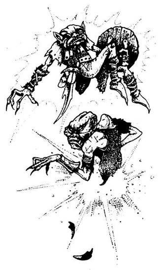
365.
Van-e nálad Goblin-fog? Ha nincs, nem alkalmazhatod ezt a varázslatot, vesztesz 1 ÉLETERŐ pontot, és lapozz a 118-ra. Ha van nálad Goblin-fog, annyit vághatsz közülük a földhöz, amennyit csak akarsz, és varázsolhatsz. Minden egyes felhasznált fogért 1 ÉLETERŐ pontot vonj le magadtól. Ezek a fogak pillanatokon belül Goblinokká válnak, akiknek megparancsolhatod, hogy segítsenek legyőzni a szárnyas teremtményeket. Mindegyik Goblin 5 ÜGYESSÉG és 5 ÉLETERŐ ponttal rendelkezik. Lapozz a 118-ra, és küzdj meg a kellemetlenkedő teremtményekkel. Állandóan támadnak benneteket a koldussal, de te döntheted el, vajon Goblinjaid közül melyik küzd meg az egyes teremtményekkel (előtte dobj Támadóerőt). Ha a Goblin Támadóereje nagyobb a támadni készülő teremtményénél, a szokásos sebet fogja ejteni. A csata után az életben maradt Goblinok eltűnnek.
366.
Vesztesz 2 ÉLETERŐ pontot. Varázsolsz. Vangorn mögött az ajtó kinyílik az utcára. Nem hátrál meg. Lapozz a 13-ra.
367.
Vesztesz 1 ÉLETERŐ pontot! Van-e Fekete Maszkod? Ha nincs, ez a varázslat nem fog működni, és kardoddal kell megküzdened velük - lapozz a 192-re. Ha van Fekete Maszkod, tartsd az arcod elé, és varázsolj. A téged körülvevő teremtmények megrettenve hátrálnak előled, és hagyják, hogy továbbmenj. Lapozz a 135-re.
368.
A fogak segítségével varázsolsz, és ennek hatására mindegyik fog egy-egy Goblinná változik, aki a te utasításodat lesi. Megparancsolod a Goblinoknak, hogy vessék magukat az Ork kölykök után. Sajnos a kölykök túl nagy előnyre tettek szert a Goblinokkal szemben, így nem tudod visszaszerezni egyetlenegy tárgyadat sem. Folytatnod kell az utadat. Lapozz a 61-re.

369.
Vesztesz 1 ÉLETERŐ pontot! Van-e nálad Bambuszfurulya? Ha nincs, nem alkalmazhatod ezt a varázslatot - lapozz vissza a 234-re, és döntsd el, ki lesz a győztes. Ha van Bambuszfurulyád, előveheted, és ha játszol rajta, varázsolhatsz. Az, akit ezzel a varázslattal megcélzol, abbahagyja a küzdelmet, és a furulyaszóra akarata ellenére táncolni kezd. Amikor ez megtörténik, a küzdelem megszakad, és minden szem haragosan mered rád, amiért megzavarod a versenyt. Valaki a tömegből elragadja a Furulyádat, és darabokra töri, míg a többiek ellökdösnek a helyszínről. Távoznod kell innen. Lapozz a 263-ra.
370.
Vesztesz 1 ÉLETERŐ pontot. Van-e nálad méhviasz? Ha nincs, nem alkalmazhatod ezt a varázslatot, és további 2 ÉLETERŐ pontot kell levonnod magadtól, mert a Lánckészítő mester a láncával lenyúzza a bőrt a hátadról - menj vissza a 119-re, és kardodat előrántva küzdj meg vele. Ha van nálad méhviasz, gyorsan bekenheted a fegyveredet, és ezt követően varázsolhatsz vele. Ettől a varázslattól kardod borotvaéles lesz. Ahányszor sebet ejtesz a Lánckészítőn, minden alkalommal a szokásos 2 ÉLETERŐ pont levonás helyett 4 pontot kell levonnod magadtól - lapozz a 119-re, és küzdj meg vele.
371.
Vesztesz 4 ÉLETERŐ pontot. Ujjaddal az ajtó felé mutatsz, és ekkor egy villám pattan ki az ujjbegyedből. A megperzselődött ajtó kinyílik, és az öreggel kimenekültök a házból. Mindketten futva indultok el lefelé, az útkereszteződés irányába. Az öreg korához képest igen fürge, és elsőnek ér az útkereszteződéshez. Lapozz a 81-re.
372.
Azt tanácsolja, hogy menj egyenesen előre, míg el nem éred a kikötőt. Megköszönöd a segítségét, és továbbmész. Lapozz a 263-ra.
373.
Vesztesz 4 ÉLETERŐ pontot. Varázsolsz, és ekkor egy láthatatlan fal képződik közted meg az Élő Hulla között. A teremtmény testrészei röptükben nekivágódnak a falnak. Ez a varázslat azonban rövid életű, így a testrészek nemsokára már ismét védőfalad körül röpködnek, és támadnak. Lapozz vissza a 11-re, és válassz újra.
374.
Vesztesz 1 ÉLETERŐ pontot! Van-e Aranytallérod? Ha nincs, ez a varázslat nem fog működni - lapozz a 468-ra. Ha van, helyezd az érmét a csuklódra, és varázsolj. A varázslat hatására az érme láthatatlan pajzzsá változik, amely mindaddig a kezeden lesz, amíg ebben a szentélyben tartózkodsz, és megsegít minden itteni küzdelmedben. Ezt követően azonban (az Aranytallérral együtt) eltűnik. Lapozz a 468-ra.
375.
Vesztesz 4 ÉLETERŐ pontot! Varázslatoddal a tóban lévő kis halat célzod meg. A kicsiny állat azonban gyorsan elúszik az útból, és a varázslat egy parányi csigát ér, amely a halacska alatt lévő kövön mászik. Ha akarod, most célba veheted a halat - de ez nem sok haszonnal fog járni. Ha el akarod csenni az Aranytallért - lapozz a 85-re. Ha távozni akarsz a tó mellől - lapozz a 28-ra.
376.
Vesztesz 1 ÉLETERŐ pontot! Van-e nálad bármilyen gyógyital vagy bodzaszörp? Ha nincs, a varázslat hatástalan lesz, és a méreg végez veled - kalandod itt véget ér. Ha van nálad ilyen ital, idd meg gyorsan, és varázsolj magadon. Az ital azonnal közömbösíti a mérget. Gyorsan visszanyered az erődet - ÉLETERŐ pontjaidat visszaállíthatod a Kezdeti értékre. A férfi csak nézi, mi történik veled. Amikor talpra állsz, elhagyhatod a házat - lapozz a 223-ra.
377.
Vesztesz 2 ÉLETERŐ pontot! Varázsolsz, és ezt követően nyugodtan beléphetsz a kriptába. Lapozz a 249-re. Mielőtt bemennél, esetleg ki akarsz venni valamit a hátizsákodból. Ha ezt akarod tenni - lapozz a 7-re.
378.
Vesztesz 1 ÉLETERŐ pontot! Van-e egy fiola ragasztód? Ha nincs, ez a varázslat nem fog működni, és a teremtmény beleharap a bokádba (vesztesz 2 ÉLETERŐ pontot) - lapozz vissza a 95-re, és küzdj meg a teremtménnyel. Ha van némi ragasztód, hozzávághatod a Borzas Vadhoz, és varázsolhatsz. A teremtmény odaragad a földhöz; ekkor könnyedén megtámadhatod és végezhetsz vele. Lapozz a 14-re.
379.
Vesztesz 5 ÉLETERŐ pontot! Nincs ilyen varázslat, így semmi sem történik, amikor varázsolnál. Lapozz vissza a 98-ra, és válassz újra.
380.
Vik elmagyarázza neked, miként juthatsz el a varázsige egyik sorának ismerőjéhez. - Ahhoz, hogy eljuss hozzá, vissza kell menned a Déli Kapu felé, addig az útig, ahol ez az ember lakik - lapozz a 61-re. De tovább is folytathatod az utadat - lapozz a 263-ra.
381.
Vesztesz 2 ÉLETERŐ pontot. Varázsolsz, hogy a zár kinyíljon. Egy kattanást hallasz, majd elhúzódik a két retesz a túloldalon, és kinyílik az ajtó. Benyitsz a kapun, és besurransz. Egy lelket sem látsz odabenn. Körülnézel. Legelőször egy épületet fedezel fel közvetlenül a fal mellett, és odapattansz. A kőház ablakait rácsok védik. A házban nem látsz egyebet, csupán egy fapadot, melyen egy öregember ül. Ha be akarsz menni a házba és üdvözölni akarod az öreget - lapozz a 169-re. Ha inkább továbbmész - lapozz a 218-ra.
382.
Vesztesz 1 ÉLETERŐ pontot! Van-e Aranyhátú Tükröd? Ha nincs, ez a varázslat nem fog működni, és miközben azon fáradozol, hogy megvédd magad, támadóid egyre közelebb kerülnek hozzád. Kardot kell rántanod - lapozz a 192-re. Ha van Aranyhátú Tükröd, gyorsan vedd elő a hátizsákodból, tartsd oda a teremtmények elé, és varázsolj! A tükörképeik életre kelnek, és harcra készen szembefordulnak az eredeti teremtményekkel. Mialatt ez megtörténik; te nyugodtan elmenekülhetsz a helyszínről. Lapozz a 135-re.
383.
Vesztesz 4 ÉLETERŐ pontot! Varázslatod hatására egy láthatatlan fal emelkedik kettőtök közé. A Gyilkos kilövi a nyílvesszőjét, de az lepattan a védőfalról. - Egy Varázsló! - mondja Vangorn. - Varázslókkal nem vitázom. Elmehetsz, idegen! - Leereszti az íját, és ellép az ajtóból, hogy utat engedjen neked. Lapozz a 46-ra.

384.
Vesztesz 2 ÉLETERŐ pontot. Varázslatod hatására öt hasonmásod jelenik meg melletted. Abban reménykedsz, hogy a hatalmas Szobor ettől megzavarodik, de sajnos a teremtmény nem dől be az illúziónak, és feléd sújt. Kezével elkap, és a földre taszít - 1 ÉLETERŐ pont sérülést szenvedsz. Kardodért nyúlsz. Lapozz a 299-re.
385.
Vesztesz 2 ÉLETERŐ pontot! Varázslatod hatására ellenfeled mozdulatai lelassulnak. Hasonmásod közömbössé válik, és képtelen odafigyelni a küzdelemre. Döntsd el kettőtök küzdelmét, de a harc időtartamára hasonmásodtól vonj le 3 ÜGYESSÉG pontot. Ne feledd, hogy hasonmásodnak ugyanannyi az ÜGYESSÉGE (most 3-maI kevesebb) és az ÉLETEREJE, mint amennyi a tiéd volt, mielőtt varázsoltál volna. Ha te győzöl, távozz a kunyhóból - lapozz a 137-re.
386.
Van-e nálad Goblin-fog? Ha nincs, nem alkalmazhatod ezt a varázslatot - lapozz vissza a 264-re, és válassz újra, de vonj le magadtól 1 ÉLETERŐ pontot sikertelen kísérletedért. Ha van nálad néhány Goblin-fog, a földhöz vághatod azokat, és varázsolhatsz velük. Vonj le magadtól 1 ÉLETERŐ pontot. A fog a varázslat hatására a szemed előtt változik át egy ronda Goblinná, aki a parancsaidra vár. Ha azt parancsolod neki, hogy támadja meg a Gnómot - lapozz a 403-ra. Ha felajánlod a Gnómnak a Goblint cserébe az árujáért - lapozz a 350-re.
387.
Vesztesz 1 ÉLETERŐ pontot! Varázsolsz, de nem történik semmi. Nem alkalmazhatod ezt a varázslatot, mert nem rendelkezel az ehhez szükséges Kristálygömbbel. Zavarban vagy, amiért varázslásod csődöt mondott. Megiszod a sörödet, és bárgyún nézel vendéglátódra. Lapozz a 236-ra.
388.
Vesztesz 1 ÉLETERŐ pontot! Van-e Óriás-fogad? Ha nincs, hiába pazaroltad el ÉLETERŐ pontodat, mert a varázslat nem fog működni - lapozz a 154-re. Ha van nálad Óriás-fog, sikerül földhöz vágnod és varázsolnod vele. A fog körül füstfelhő támad, és amikor a füst kezd eloszlani, egy hatalmas, kegyetlennek látszó Óriás jelenik meg előtted. Megparancsolod, hogy szabadítson ki a háló fogságából, amit könnyűszerrel meg is tesz, majd amikor feladatát teljesítette, eltűnik. Most már elhagyhatod a kunyhót. Lapozz a 9-re.
389.
Vesztesz 1 ÉLETERŐ pontot! Van-e nálad Aranytallér? Ha nincs, ez a varázslat nem fog működni - lapozz a 310-re, és válassz valami mást. Ha van Aranytallérod, helyezd a csuklódra, és varázsolj! Varázslatod hatására az érme láthatatlan pajzzsá változik, amely a harc során megvéd majd. Lapozz a 118-ra, és küzdj meg a teremtményekkel, de ne feledd, hogy ha a pajzs védelme alatt állsz, 2 pontot levonhatsz majd bármelyik rád támadó teremtmény ÉLETEREJÉBŐL. A csata után a pajzs és az Aranytallér is eltűnik.
390.
Vesztesz 2 ÉLETERŐ pontot! Varázslatod rövid időre mindenfajta csapdától megvéd. Most, ha akarod, beléphetsz a kriptába - lapozz a 249-re, vagy bármit elővehetsz a hátizsákodból, ami talán hasznos lehet - lapozz a 7-re.
391.
Vesztesz 1 ÉLETERŐ pontot! Van-e nálad egy pár orrdugasz? Ha van, azonnal helyezd az orrodba. Varázslatoddal célozd meg a harc színhelyét. Iszonyatos bűz támad a levegőben. Az emberek a tömegben köhögni kezdenek, és visszatartják a lélegzetüket, miközben szanaszét rohannak a helyszínről, ahol a küzdelem azonnal megszakad. Ha nincs orrdugód, téged is megcsap a bűz, és miközben majdnem elhányod magad, vesztesz 3 ÉLETERŐ pontot. Most továbbmehetsz az úton. Lapozz a 153-ra.
392.
Eszedbe jutnak Glandragor szavai: - Ha bajba jutnál Kharéban, csak hívd segítségül Viket, az én nagy hatalmú, befolyásos barátomat. - Egymás után többször kiáltod a nevét, kérve, hogy segítsen. A mennyezet nyílásában hamarosan megjelenik egy arc, és dühösen vicsorogva így szól: - Ki az, aki Viket szólította? - Közlöd, hogy te voltál, erre az arc eltűnik, majd
visszajön valakivel, aki valószínűleg a hajó kapitánya lehet. Elmeséled történetedet - Bocsánatot kell kérnem tőled túl buzgó legénységem nevében - mondja a kapitány. - Nem tudhatták, hogy közös barátunk van. Vik valóban a barátom. Tulajdonképpen az életemet köszönhetem neki, ő mentett meg a lumléi Pajzsos Hajadonok karmaiból. Ne aggódj, szabadon engedlek. - Egy kötélhágcsót dobnak le neked a hajófenékbe, amelyen felmászol a fedélzetre. Büszkén távozol a hajóról. Lapozz a 487-re.
393.
Vesztesz 2 ÉLETERŐ pontot. Varázsolsz a cammogó teremtmény ellen, amelynek lassú mozdulatai, ha lehet, még jobban lelassulnak Most kardot ránthatsz, és megküzdhetsz vele:
Nyálkaevő ÜGYESSÉG 7 ÉLETERŐ 11
Varázslatod hatása alatt az első négy Fordulóban ÜGYESSÉG pontja csupán 4 lesz. Ezt követően mozgása és ÜGYESSÉGE visszaáll az eredeti szintre. Ha legyőzted a teremtményt - lapozz a 196-ra.
394.
Vesztesz 1 ÉLETERŐ pontot! Nem alkalmazhatod ezt a varázslatot, mert nem rendelkezel az ehhez Szükséges Tölgyfacsemete bottal. Lapozz az 55-re.
395.
Vesztesz 2 ÉLETERŐ pontot! Varázslatod hatására megérzed, hol van a környéken veszély. Az előtted lévő sötét kör valóban veszélyt jelent, és el kell kerülnöd. A kripta is veszélyes lehet, ezért ha belépsz, meg kell
győződnöd róla, hogy rendelkezel egyfajta speciális fegyverrel. A legbiztonságosabb az lenne, ha be sem lépnél a kriptába, de talán nem ez a legjobb megoldás. Ha távozni akarsz - lapozz a 16-ra. Ha be akarsz menni - lapozz a 249-re. Ha előveszel valamit a hátizsákodból, mielőtt bemennél a kriptába - lapozz a 7-re.
396.
Vesztesz 5 ÉLETERŐ pontot! Nincs ilyen varázslat. Az Ork kölykök elszeleltek, mialatt te a varázslattal bajlódtál. Lapozz a 61-re.
397.
Káromkodsz egy nagyot, amikor elindulnak feléd. A kardod nem valami hatásos ebben a helyzetben, tán jobb lenne egy kalapács vagy egy balta. Miközben erre gondolsz, eszedbe jut Glandragor kocsmája. Mit is mondott neked? "Ha bajba jutsz Kharéban, csak szólítsd Viket…“ Miközben egyre hátrálsz támadóid elől, úgy döntesz, talán érdemes lenne kipróbálni. Azt mondod nekik, hogy ne bántsanak, mert Vik barátja vagy. Abban a pillanatban, amikor kiejted Vik nevét, megállnak. Összesúgnak: - Vik barátja… Nem nyúlhatunk hozzá… És ha csak blöfföl?… És ha mégsem?… - Végül is félreállnak az útból, és továbbmehetsz. Lapozz a 135-re.
398.
Vesztesz 5 ÉLETERŐ pontot! Nincs ilyen varázslat. Lapozz a 43-ra, és döntsd el, mit lépsz.
399.
Eszedbe jutnak a Birritantiból való kedves Glandragor szavai. Bárcsak itt lenne az ő Vik barátja, biztosan segítene! De miközben haldokolsz, félrebeszélsz, és hangosan kimondod Vik nevét. Vangorn meghallja, odaugrik hozzád, és fölemeli a fejedet. - Ismered Viket? - kérdi. Bólintasz. Kirohan a konyhába, és egy aprócska, itallal teli csészével siet vissza. Nem tudod megakadályozni, hogy bele ne erőszakolja az italt a szádba. Kibírhatatlan fájdalmat érzel, és elájulsz, de rövidesen visszanyered az eszméletedet. Kinyitod a szemedet, és látod, hogy Vangorn egy székre ültetett, és figyelmes néz. Mosolyog, amikor magadhoz térsz, és megkérdi, honnan ismered Viket. Elmeséled neki Glandragor baltájának történetét - Vik az én fivérem - mondja erre. - Hetekkel ezelőtt láttam utoljára, de nagyon szeretem. Vik barátja az én barátom is. - Megkérdi, hogy érzed magad, és felajánl még egy korty ellenmérget. Te azonban máris jól érzed magad. Egyfolytában a bocsánatodért esedezik, amiért megmérgezett. Menni akarsz, de még megkérdezi, vajon tudna-e neked olyan segítséget nyújtani, aminek hasznát vennéd az utadon. 5 Aranyat kapsz tőle, és egy Fekete Maszkot, amit majd varázsláskor alkalmazhatsz. Még egy jó tanácsot is ad: - Ha utad során egy Bronzszoborra lelnél, légy óvatos. Ezt a szobrot csupán egyetlen pontján lehet ártalmatlanná tenni. - Köszönetet mondasz neki, és távozol. Nyersz 2 SZERENCSE pontot, és lapozz a 46-ra.
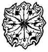
400.
Vesztesz 1 ÉLETERŐ pontot! Nem alkalmazhatod ezt a varázslatot, mert nem rendelkezel az ehhez szükséges Aranyékszerrel. Lapozz vissza a 98-ra, és válassz mást.
401.
Vesztesz 1 ÉLETERŐ pontot! Van-e nálad kerek papi sapka? Ha nincs, nem alkalmazhatod ezt a varázslatot - lapozz az 55-re. Ha van ilyen sapkád, tedd a fejedre, varázsolj, és figyelmesen várd a telepatikus üzenetet. Hirtelen megérted a szobor gondolatait! A szobor élő teremtmény, mely most akar megenni téged! Hátrálni kezdesz az ajtó felé. Mikor már jócskán eltávolodtál tőle, futásnak eredsz az út irányába - lapozz a 137-re.
402.
Nincs ilyen varázslat. Lapozz vissza a 312-re, és válassz újra. Ha nem gondoltad komolyan, hogy ez varázslat - lapozz a 392-re.
403.
A Goblin rávicsorít a Gnómra, és támadni készül. - Hah! - sziszegi a Gnóm. - Szóval úgy gondolod, hogy nem tudok elbánni ezzel a kis mitugrásszal, mi? Na, majd meglátjuk, idegen! - Hátranyúl, és egy kis fiolából kihúzza a dugót, majd a fiola tartalmát ráönti a Goblinra. A Goblin pillanatokon belül szoborrá dermed. - Elég ennyi, vagy többet akarsz tudni az erőmről? - kérdi a pöttömnyi alak. Te azonban úgy döntesz, hogy azonnal távozol. Lapozz a 158-ra.
404.
Vesztesz 1 ÉLETERŐ pontot! Nem alkalmazhatod ezt a varázslatot, mert nem rendelkezel az ehhez szükséges Csont Karpereccel. Miközben a varázslattal bajlódsz, az Ork kölykök elszelelnek, és soha nem leszel képes elkapni őket. Lapozz a 61-re.
405.
Vesztesz 1 ÉLETERŐ pontot! Van-e bodzaszörpöd vagy bármilyen gyógyitalod? Ha nincs, ez a varázslat nem fog működni. Ha van gyógyitalod, megihatod gyorsan, és varázsolhatsz. Erőd visszatér és ÉLETERŐDET visszaállíthatod a Kezdeti értékre. Most azonban meg kell küzdened az ellenfeleddel! Lapozz a 323-ra, és ne feledd, hogy gyógyitalodat megittad.
406.
Vesztesz 1 ÉLETERŐ pontot! Nem alkalmazhatod ezt a varázslatot, mert nem rendelkezel az ehhez szükséges Tüzes Vízzel. Egyre jobban fáj a gyomrod, és csakhamar elveszted az eszméletedet. A Gyilkos Vangorn újabb áldozatot szedett…
407.
Vesztesz 1 ÉLETERŐ pontot, és varázsolsz. Ebben a pillanatban iszonyú bűz támad körülötted. A szag olyan rettenetes, hogy majd kifordul a gyomrod (3 ÉLETERŐ pont kárt okoz benned), hacsak nincs nálad orrdugasz, amely megvédhet. Ez a szörnyű bűz egy időre sakkban tartja az ellenfeleidet, s ezalatt eltűnhetsz a mellékutcákon, de amint a varázslat megszűnik, ismét a nyomodba erednek. Lapozz a 41-re.
408.
Vesztesz 1 ÉLETERŐ pontot. Nem alkalmazhatod ezt a varázslatot mindaddig, amíg nem rendelkezel a Viharkürttel. Lapozz vissza az 1-re, és válassz újra.
409.
Vik azt tanácsolja, hogy menj egyenesen tovább, és az első adandó alkalommal fordulj balra. Ha onnan letérsz jobbra az első vagy a második utcán - nem tudja biztosan, melyiken kell -, akkor megtalálod azt az embert, aki ismeri a varázsige egyik sorát. Megköszönöd a segítségét, és folytatod az utadat. Lapozz a 263-ra.
410.
Vesztesz 2 ÉLETERŐ pontot. Varázslatod hatására mindkét teremtmény iszonyatosan lomhává válik. Mozdulataik lelassulnak, és nem tudnak küzdeni, mert mindketten érzik a varázslat erejét. A maradék bámészkodókkal együtt szétnéznek, vajon ki rontotta el a szórakozásukat. Úgy döntesz, hogy gyorsan távozol. Lapozz a 153-ra.
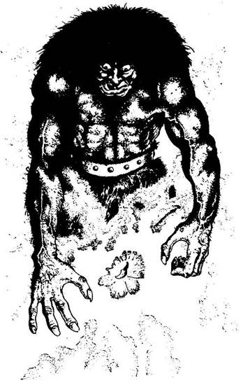
411.
Vesztesz 1 ÉLETERŐ pontot! Van-e nálad Óriás-fog? Ha nincs, varázslatod nem fog működni, és amíg a varázslással bajlódsz, a Szobor feldönt - vesztesz 1 ÉLETERŐ pontot, és lapozz a 299-re. Ha van Óriás-fogad, a földhöz vághatod, és elővarázsolhatsz vele egy hatalmas Óriást, aki majd megküzd helyetted a szoborral. Döntsd el a harcot:
ÜGYESSÉG ÉLETERŐ
Bronzszobor 10 15
Óriás 8 9
Ha a te Óriásod győz, közvetlenül a harc után eltűnik. Ekkor választhatsz, hogy merre indulsz: ha kifelé mész Kharéból - lapozz a 104-re; ha a Játéktermekbe igyekszel - lapozz az 56-ra. Ha az Óriásod veszít, magadnak kell megvívnod a Szoborral a harcot, de amikor az első csapásodat méred rá - lapozz a 326-ra.
412.
Elmondod a varázsigét, és vársz. Végigfut a hideg a hátadon, amikor meghallod a kapu nyikorgását. De nem a tárt kaput látod magad előtt, hanem egy szellem alakú ködfelhőt pillantasz meg, amely a kapukeret tetején elhelyezett fadobozból száll föl. A szellemalak úgy ugrál a levegőben, akár egy zsinóron rángatott bábu, és te kővé dermedve figyeled. Hirtelen rád veti magát, és még mielőtt bármit tehetnél, elnyel! Köhögsz, izzadsz, pánikba esel, amikor rájössz, hogy a KÉNSZELLEM karmai közé kerültél, melynek mérgező gázai megfojtanak! Nemhiába figyelmeztettek, hogy az Északi Kapunak saját védelmi rendszere van, és avatatlan személy csak az élete kockáztatásával vállalkozhat rá, hogy a kaput kinyissa. A te életed ezúttal odaveszett…
413.
Vesztesz 1 ÉLETERŐ pontot. Nem alkalmazhatod ezt a varázslatot, mert nem rendelkezel az ehhez szükséges Kristálygömbbel. Ha most közelebbről akarnád megszemlélni a szobrot - lapozz a 8-ra. Ha a kunyhóba szeretnél bemenni - lapozz a 27-re.
414.
Vesztesz 2 ÉLETERŐ pontot. Varázsolsz, és várod a jelet, miként tudnál a legbiztonságosabban cselekedni. A sörivás kétségkívül nem a legbölcsebb dolog, de vendéglátód föléd hajol, és várja, hogy igyál. Egy szempillantás alatt az arcába löttyinted a korsó sört, és az ajtóhoz rohansz. Még mielőtt felfogná, mi történik, te már kint is vagy. Lapozz a 46-ra.
415.
Vesztesz 5 ÉLETERŐ pontot! Nincs ilyen varázslat. Lapozz a 154-re.
416.
Vesztesz 1 ÉLETERŐ pontot! Van-e nálad Napékszer? Ha nincs, nem alkalmazhatod ezt a varázslatot - lapozz vissza a 234-re, és döntsd el a csata kimenetelét. Ha van nálad Napékszer, varázsolhatsz vele. Az Ékszer erős fénnyel kezd ragyogni, és segíthetsz vele kedvenc küzdőfelednek. A varázslat csak az első három Forduló alatt hat. Ha e három Forduló alatt az ellenfél sebet ejt kedvenc harcosodon, akkor elkápráztathatod az Ékszer ragyogó fényével. A vakító fényhatás miatt a szokásos 2 ÉLETERŐ pont veszteség helyett csupán 1 ÉLETERŐ pontot kell levonni. Ne feledd, ez a fényhatás csak az első három Forduló alatt fog működni; ezt követően a harc a szokásos módon zajlik. Most lapozz vissza a 234-re, és döntsd el a harc kimenetelét.
417.
Vesztesz 2 ÉLETERŐ pontot! Varázsolsz a DÖGNYÚZÓ ellenében, aki megáll. Elfordul tőled, és céltalanul botorkálni kezd a szobában, s közben mindenbe beleütközik. Amíg ilyen zavart, addig elveheted a ládát az asztal alól. Lapozz a 29-re.
418.
Vesztesz 1 ÉLETERŐ pontot! Van-e kerek papi sapkád? Ha nincs, varázslatod nem fog működni. Ha van ilyen sapkád, a fejedre teheted és varázsolhatsz. Amikor a varázslat hatni kezd, vársz, amíg telepatikus üzenetet nem kapsz arra vonatkozóan, hogy van-e a közeledben valamilyen teremtmény. Ilyen üzenetet azonban nem kapsz. Nincs élő teremtmény a közeledben. Ha most odamész az ajtóhoz - lapozz a 288-ra. Ha átugrod a kört - lapozz a 258-ra.
419.
Vesztesz 1 ÉLETERŐ pontot. Van-e nálad gyógyital vagy bodzaszörp? Ha nincs, nem alkalmazhatod ezt a varázslatot - lapozz vissza a 264-re, és válassz újra. Ha van, megihatod az italt és varázsolhatsz. Amikor a varázslat hatni kezd, úgy érzed, új erőre kaptál - testedet erő hatja át. ÉLETERŐDET visszaállíthatod a Kezdeti értékre. Most pedig lapozz vissza a 264-re, és kösd meg az üzletet a Gnómmal. Ne feledd, hogy elhasználtad a gyógyitalt!
420.
Vesztesz 1 ÉLETERŐ pontot! Van-e kerek papi sapkád? Ha nincs, varázslatod hatástalan lesz - lapozz vissza a 108-ra, és válassz újra. Ha van ilyen sapkád, a fejedre teheted és varázsolhatsz: megsejtheted a kunyhó előtt álló tűzmester gondolatait. "Vajon beleesik-e ez a vándor a csapdámba?" - ezt forgatja az agyában. Úgy véled, azt szeretné, ha belépnél a tűzbe. Ha a lángok közé lépsz - lapozz a 130-ra. Ha inkább elhagyod ezt a helyet - lapozz a 137-re.
421.
Elmondod a varázsigét, és vársz. Végigfut a hideg a hátadon, amikor a kapu megnyikordul De nem a tárt kaput látod magad előtt, hanem egy szellem alakú ködfelhőt pillantasz meg, amely a kapukeret tetején elhelyezett dobozból száll föl. A szellemalak úgy ugrál a levegőben, akár egy zsinóron rángatott bábu, és te kővé dermedve figyeled. Hirtelen rád veti magát, és még mielőtt bármit tehetnél, elnyel! Köhögsz, izzadsz, pánikba esel, amikor rájössz, hogy a KÉNSZELLEM karmai közé kerültél, melynek mérgező gázai megfojtanak! Nemhiába figyelmeztettek, hogy az Északi Kapunak saját védelmi rendszere van, és avatatlan személy csak az élete kockáztatásával vállalkozhat rá, hogy a kaput kinyissa. A te életed ezúttal odaveszett…
422.
Vesztesz 1 ÉLETERŐ pontot. Van-e nálad homok? Ha nincs, a varázslatod nem fog működni - ránts kardot, és lapozz a 192-re. Ha van nálad homok, vágd a földhöz a teremtmények lábánál, és varázsolj. A varázslat hatására a lények lába alatt a föld hullámzani kezd, és futóhomokká változik. Elvesztik az egyensúlyukat, elesnek, és a homok fogságában süllyedni kezdenek. Segítségért kiáltanak, de csakhamar elnyeli őket a homok.
Sajnos a tőled ellopott Aranytallérok is odavesznek velük együtt. Most továbbmehetsz, ha a 89-re lapozol. Ne feledd, hogy egy adag homokot felhasználtál már abból, amit esetleg találtál!
423.
Goblinod elindul a Szobor felé. A hátad mögül ekkor hangos ugatást hallasz, és megfordulsz. Semmi vész, csak egy kutya szaladt át az úton, és megugatta a járókelőket. Visszafordulsz a Szobor felé, és majd elájulsz, amikor meglátod, hogy Goblinod holtan fekszik a Szobor lábánál, amely meg sem moccant! Ha jobban meg akarod nézni a Szobrot - lapozz a 8-ra. Ha be akarsz nézni a kunyhóba - lapozz a 27-re. Ha gyorsan távozol innen - lapozz a 137-re.
424.
Vesztesz 5 ÉLETERŐ pontot! Nincs ilyen varázslat. Lapozz vissza a 317-re, és válassz újra.
425.
Vesztesz 1 ÉLETERŐ pontot! Varázsolsz, de semmi sem történik. Nem alkalmazhatod ezt a varázslatot, mert nem rendelkezel az ehhez szükséges Aranyékszerrel. Lapozz a 323-ra, és küzdj meg ellenfeleddel.
426.
Van-e nálad Goblin-fog? Ha nincs, vesztesz 1 ÉLETERŐ pontot, mert enélkül nem tudsz varázsolni, és menj tovább az utadon - lapozz a 61-re. Ha van nálad Goblin-fog, annyit vágj a földhöz, amennyit akarsz, és varázsolj. Annyi ÉLETERŐ pontot vonj le magadtól, ahány fogat a varázsláshoz felhasználtál. Lapozz a 368-ra.
427.
Vesztesz 1 ÉLETERŐ pontot! Van-e nálad Bambuszfurulya? Ha nincs, nem alkalmazhatod ezt a varázslatot, de miközben azon fáradozol, hogy az működjön, a teremtmény a közeledbe kerül, rád csap, és 2 ÉLETERŐ pont kárt tesz benned - lapozz vissza 77-re, és döntsd el a harc kimenetelét. Ha van nálad Bambuszfurulya, nyugodtan varázsolhatsz a Nyálkaevő ellen, és furulyázhatsz közben. A zeneszó hangjára az alaktalan teremtmény megáll, és fejét oldalra billenti. Hirtelen kiugrik a vízből, elordítja magát, és amikor földet ér, olyan mozdulatokat tesz, amilyenekre csak egy Nyálkaevő képes, ha azt hiszi, hogy táncol! Visszafordulhatsz, amíg képtelen megtámadni! Lapozz a 196-ra.
428.
Vesztesz 5 ÉLETERŐ pontot! Nincs ilyen varázslat. Lapozz vissza a 26-ra, és válassz újra.
429.
Vesztesz 4 ÉLETERŐ pontot. Varázsolsz, s ekkor hirtelen egy igen erős védőgyűrű vesz körül. Mindaddig, amíg ennek hatása fennáll, nem érhet semmi veszély. Odamész a Szoborhoz. Nem történik semmi. Benézel a kunyhóba. Nincs benn semmi, leszámítva a földön lévő törmeléket. Sehol egy teremtett lélek. Hirtelen megszűnik a varázslat. Ha bemész a kunyhóba - lapozz a 27-re. Ha odamész a Szoborhoz és leveszed a nyakában lévő medált - lapozz a 8-ra. Ha inkább továbbmész - lapozz a 137-re.
430.
Vesztesz 2 ÉLETERŐ pontot! Varázsolsz, és várod a hatást. A gyomrod egyre jobban fáj, végül nem bírod tovább, és meghalsz. Soha többé nem fogsz már magadhoz térni. A varázslatod csupán a bűvös dolgoktól védett volna meg, ez a méreg azonban korántsem volt bűvös erejű. Küldetésedet nem tudtad teljesíteni…
431.
Vesztesz 2 ÉLETERŐ pontot! Varázsolsz. Amíg Courga Szentélyében tartózkodsz, nem fog rajtad a varázslat. Lapozz a 468-ra.
432.
Vesztesz 2 ÉLETERŐ pontot. Varázsolsz, és ekkor meghallod, hogy kattan egyet ár. Belököd az ajtót, és az rögtön kinyílik. Kirohantok a házból az öreggel, aki megköszöni, hogy segítettél neki a szabadulásban, és futva elindul előtted lefelé az úton. Csakhamar egy útkereszteződéshez értek. Lapozz a 81-re.
433.
Vesztesz 2 ÉLETERŐ pontot! Varázsolsz, Amíg a varázslatod hat, elkerülöd a bűvös csapdákat. Lapozz a 118-ra, és küzdj meg a teremtményekkel Ez a varázslat addig él, amíg a küzdelem tart.
434.
Vesztesz 4 ÉLETERŐ pontot! Kinyújtod a kezedet a teremtmények felé, és varázsolsz. Mindkét tenyereden egy-egy kis tűzgolyó jelenik meg, és ellenfeleidhez vágod őket. Az egyik VÖRÖSSZEMŰ kinyitja a szemét, és a belőle kipattanó lángnyelv felfogja a tűzgolyóidat. A csattanás visszairányítja feléd a tűzgolyókat, és el kell ugranod előlük, nehogy eltaláljanak. Az emlékmű aljában lévő medencében landolsz, de a várt csobbanás elmarad - lapozz a 270-re.
435.
Vesztesz 2 ÉLETERŐ pontot. Varázsolsz. Ekkor öt képmásod jelenik meg melletted, és megzavarja a teremtményt. Ez a varázslat azonban csak és kizárólag a teremtmény Feje ellen hatásos, mert a test többi része nem rendelkezik önálló értelemmel. Lapozz vissza a 11-re, és döntsd el a harc kimenetelét. Ha bármelyik Fordulóban a Hulla Feje nagyobb Támadóerőt dob, mint amennyi a tied - dobj egy kockával. Ha 1-től 5-ig dobsz, a Fej az egyik hasonmásodat támadta meg. Ha 6-ot dobsz, a Fej téged talált el, és a szokásos sérülést szenveded el.
436.
A szorító sarkából hallod, amint a tömegben valaki így kiált: - Vik! Vik, drága barátom! Mi újság? - Amikor odanézel, amerről a hang jött, két férfit pillantasz meg, aki épp üdvözli egymást. Odakiáltasz Viknek, és megmondod neki, hogy Glandragor barátja vagy. E név hallatára széles mosoly terül el Vik arcán. Azt mondja, hogy megvárja, míg megvívsz az ellenfeleddel, és sok szerencsét kíván hozzá. Nyersz 2 SZERENCSE pontot, mert találkoztál vele. Lapozz vissza a 82-re, és válassz újra. Ha túléled a küzdelmet - lapozz utána a 352-re, ha találkozni akarsz Vikkel.
437.
Vesztesz 5 ÉLETERŐ pontot! Nincs ilyen varázslat. Lapozz vissza a 95-re, és küzdj meg a teremtménnyel, vagy válassz másik varázslatot.
438.
Vesztesz 2 ÉLETERŐ pontot! Egy kis kupac kincset varázsolsz a lábad elé a földre. Felkiáltasz a fejed fölött lévő nyíláson, mire egy arc jelenik meg. A legénység egyik tagja rád mordul, és megkérdi, mit akarsz. Kapzsi mosoly jelenik meg az arcán, amikor felmutatod neki a kincset. Körülnéz, majd leereszt egy kötélhágcsót, hogy mássz fel. Amikor felérsz, átadod neki a hamis kincset, és gyorsan elhagyod a hajót. Lapozz a 487-re.
439.
Vesztesz 1 ÉLETERŐ pontot! Nem alkalmazhatod ezt a varázslatot, mert nem rendelkezel az ehhez szükséges Zöld Fémgyűrűvel. Lapozz vissza a 26-ra, és válassz újra.
440.
Vesztesz 5 ÉLETERŐ pontot. Nincs ilyen varázslat. Lapozz vissza a 119-re, rántsd elő a kardodat, és küzdj meg a Lánckészítővel.
441.
Vesztesz 1 ÉLETERŐ pontot! Van-e nálad kavics? Ha nincs, hiába erőlködsz, a varázslat nem működik, és a darabokra hasított test részei körülötted keringenek, és 2 ÉLETERŐ pont kárt tesznek benned. Ha van nálad kavics, varázsolhatsz velük. A varázslat hatására minden kavics abban a pillanatban felrobban, amint a testrésszel találkozik, 1 ÉLETERŐ pont kárt tesz benne, és megbénítja azt. Annyi kavicsot használhatsz el, ahányat csak akarsz, és ahhoz a testrészhez vágod hozzá, amelyikhez akarod. Ahhoz, hogy megtudd, vajon dobásod talált-e, dobj két kockával. Ha a dobott összeg ugyanannyi vagy kevesebb, mint ÜGYESSÉGED, dobásod talált és a testrészt elpusztította. Ha a dobott összeg nagyobb, mint ÜGYESSÉGED - a kavics célt tévesztett. Minden kavicsnál ismételd meg ezt a kockadobást, és válassz testrészt. Lapozz vissza a 11-re, és döntsd el a harc kimenetelét. Annyi robbanó kavicsot használhatsz fel, amennyit csak akarsz, de miután eldobtad a kavicsaidat, a megmaradt testrészekkel meg kell küzdened.
442.
Vesztesz 1 ÉLETERŐ pontot! Van-e nálad bodzaszörp vagy bármilyen gyógyital? Ha nincs, ez a varázslat hatástalan lesz. Ha van, megihatod és varázsolhatsz. Erőd rohamosan visszatér, és sebeid begyógyulnak a Varázslat hatására. ÉLETERŐDET visszaállíthatod a Kezdeti értékre.
Akár működik a varázslatod, akár nem, most vagy fel kell menned az ajtóhoz - lapozz a 288-ra, vagy át kell ugranod a kört - lapozz a 258-ra. Ne feledd, hogy italodat felhasználtad!
443.
Vesztesz 2 ÉLETERŐ pontot! Varázsolsz, és várod, milyen hatást váltasz ki a teremtményekből. (Mint tudod, ennek a varázslatnak előre nem sejthető hatása van.) A Borzas Vad dermedten megáll és rád néz. Tétován tesz néhány lépést, mintha azt próbálná eldönteni, mit is csináljon. Hirtelen rád veti magát és felöklel (vesztesz 1 ÉLETERŐ pontot). Ahelyett azonban, hogy folytatná a harcot, körbe-körbe kezd rohanni! Lapozz vissza a 95-re, és küzdj meg a teremtménnyel, vagy válassz új varázslatot. Ha úgy döntesz, hogy harcolsz, levonhatsz tőle 1 ÜGYESSÉG pontot, mert kissé megzavarodott.
444.
A fejedre teszed a kis sapkát, és varázsolsz. Erősen koncentrálsz házigazdád agyára, és szinte abban a pillanatban megvilágosodnak előtted a gondolatai. Egy biztos: azt akarja, hogy idd meg az italt, amelybe valami kábítószert tettek. Ha megiszod az italt, ahogy akarja - lapozz a 236-ra. Ha elnézést kérsz és távozol - lapozz a 173-ra.
445.
Vesztesz 2 ÉLETERŐ pontot! Egy kis halom aranyat varázsolsz az asztalra. A teremtmény egy ideig nézi, majd rád pillant. A viselkedéséből arra következtetsz, hogy átlát rajtad, és rájött, hogy csak illúzió, amit lát. Iszonyúan dühös, amiért így becsaptad. Elindul feléd, és ekkor a fegyveredért nyúlsz. Lapozz a 243-ra.
446.
Vesztesz 4 ÉLETERŐ pontot. Elmondod a varázsigét, és várod, hogy megvilágosodjon előtted, vajon hány aranyat lophattak el a teremtmények, de nem történik semmi. Lehetséges, hogy ezek a lények ellenállnak a varázslatnak? Vagy csupán arról van szó, hogy valami megakadályozza a dolgok helyes menetét? A teremtmények egyre közelednek feléd. Lapozz a 192-re.
447.
Vesztesz 1 ÉLETERŐ pontot! Ez a varázslat hatástalan, mert nem rendelkezel az ehhez szükséges Tölgyfacsemete bottal. Lapozz vissza a 98-ra, és válassz újra.
448.
Vesztesz 1 ÉLETERŐ pontot! Van-e nálad egy kis kerek papi sapka? Ha nincs, varázslatod nem fog működni, és az Ork kölykök eltűnnek a szemed elől, még mielőtt a varázsigét kimondanád (lapozz a 61-re). Ha van nálad ilyen sapka, tedd a fejedre, és varázsolj! A varázslat hatására telepatikusan megérzed, merre vannak az Ork kölykök. Mindannyian más irányba futottak, de te azonnal tudod, melyikük lopta el a legértékesebb tárgyadat, és utánaveted magad. Végül utoléred, és kényszeríted, hogy adja vissza ellopott tulajdonodat. Ezt követően visszatérhetsz és folytathatod az utadat. Lapozz a 61-re.
449.
Vesztesz 1 ÉLETERŐ pontot. Van-e nálad egy kevés homok? Ha nincs, a varázslat nem fog működni, és miközben azon fáradozol, hogy varázsolj, a Lánckészítő mester 2 ÉLETERŐ pontnyi sebet ejt rajtad - lapozz vissza a 119-re, és kardoddal küzdj meg vele. Ha van nálad homok, vesd oda a Lánckészítő lábához, és varázsolj. A Lánckészítő lába alatt megremeg a föld, és a mester elveszti az egyensúlyát. Futóhomok közepén áll, mely szép lassan elnyeli! Gyorsan leveszi a zakóját, és a futóhomokra teríti, hogy ezzel akadályozza meg a gyors süppedést. Odalépsz hozzá, kihúzod alóla a zakót, és ekkor a mestert elnyeli a homok. Lapozz a 195-re. Az összes homokodat felhasználtad, s ezért ezt a varázslatot legközelebb csak akkor alkalmazhatod, ha ismét szert teszel némi homokra.
450.
Vesztesz 1 ÉLETERŐ pontot. Van-e nálad Aranytallér? Ha nincs, nem tudod ezt a varázslatot alkalmazni, és miközben azon igyekszel, hogy varázslatod sikerüljön, a testrészek 2 ÉLETERŐ pont kárt tesznek benned. Ha van nálad Aranytallér, a csuklódra helyezve varázsolhatsz vele. Az Aranytallér a varázslat hatására láthatatlan pajzzsá változik, mely segíteni fog a küzdelemben Lapozz vissza a 11-re, és küzdj meg a testtel, de mivel a varázspajzzsal küzdesz, 2 pontot levonhatsz minden testrész Támadóerejéből. Természetesen a pajzs és az Aranytallér is eltűnik a harc után.
451.
Vesztesz 1 ÉLETERŐ pontot. Van-e Óriás-fogad? Ha nincs, ez a varázslat hatástalan lesz - lapozz a 323-ra, és vívd meg csatádat. Ha van Óriás-fogad, elővarázsolhatsz vele egy bűvös Óriást. A tömeg üdvrivalgással fogadja az Óriást. Közlöd a haramiával, hogy ő a te bajnokod, és ő fog kiállni helyetted. Lapozz a 323-ra, és döntsd el kettőjük harcát.
Óriás ÜGYESSÉG 8 ÉLETERŐ 9
Ha a te Óriásod győz, elteheted az általa megnyert pénzt.
452.
Vesztes 2 ÉLETERŐ pontot! Varázsolsz, és szinte azonnal nőni kezdesz, míg végül csaknem Óriás méretűvé válik a tested, de sajnos túl nagyra nőttél, és így nem férsz be a kripta ajtaján! Vagy távozz erről a helyről - lapozz a 16-ra, vagy várd ki, amíg a varázslat megszűnik, és akkor menj be a kriptába - lapozz a 249-re.
453.
Vesztesz 2 ÉLETERŐ pontot! Varázsolsz, és belépsz a lángok közé. Nem érzel semmit. Kinyitod a tűz közepén álló ládát, és 10 Ezüsttallért meg egy Ezüsttükröt találsz benne. Magadhoz veszed őket, és kilépsz a lángok közül. Amint jobban megnézed kincseidet, azok a szemed láttára válnak arannyá! 10 Aranytallért és egy Aranyhátú Tükröt találtál. Gyorsan a hátizsákodba rejted szerzeményedet, mert bentről egy hang szól ki hozzád: - Nos, mit gondolsz? - kérdi a hang tulajdonosa. Eszedbe jut, hogy fontolóra kellett venned a tüzet! Közlöd vele, hogy a tűz nem érdekel, megköszönöd, hogy bemutatta neked a tudományát, és elhagyod a kunyhót. Az úton lefelé mész tovább. Lapozz a 137-re.
454.
Vesztesz 5 ÉLETERŐ pontot! Nincs ilyen varázslat, és a Szobor már-már elér. Rántsd elő a kardodat, és lapozz a 299-re.
455.
Vesztesz 1 ÉLETERŐ pontot! Van-e nálad egy kis üveg ragasztó? Ha nincs, lapozz a 13-ra. Ha van, hozzávághatod a Gyilkoshoz és varázsolhatsz. Az üvegcse összetörik és tartalma ráfolyik ellenfeledre. Varázslatod hatására a Gyilkos keze hozzáragad az íjhoz, a lába pedig a földhöz. Most kimehetsz az ajtón. Lapozz a 46-ra.
456.
Vesztesz 2 ÉLETERŐ pontot! Varázsolsz, és várod a jelzést, hogy most mit érdemes lépned. Egy belső hang azt súgja neked, hogy a hal elég rondán harap ugyan, de mégsem kell félni tőle: nem jelent igazi veszélyt. Ha akarod, behajolhatsz a halhoz a víz alá - lapozz a 320-ra. Ha megpróbálod ellopni az Aranytallért - lapozz a 85-re. Ha elhagyod a tavat - lapozz a 28-ra.
457.
Vesztesz 1 ÉLETERŐ pontot. Nem választhatod ezt a varázslatot, mert nem rendelkezel az ehhez szükséges Ékkődíszes Medállal. Lapozz a 264-re, és válassz újra.
458.
Vesztesz 1 ÉLETERŐ pontot! Nem alkalmazhatod ezt a varázslatot, mert nem rendelkezel az ehhez szükséges Kőporral. Miközben azon igyekszel, hogy varázslatod működjön, a teremtmények egyre közelednek feléd. Elő kell rántanod a kardodat. Lapozz a 192-re.
459.
Vesztesz 1 ÉLETERŐ pontot! Varázsolsz, de nem történik semmi. Nem alkalmazhatod ezt a varázslatot, mert nem rendelkezel az ehhez szükséges Gyöngygyűrűvel. Miközben azon igyekszel, hogy varázsolj, a Borzas Vad odaugrik hozzád, és a lábadba mélyeszti éles fogait. Vesztesz 3 ÉLETERŐ pontot, és küzdj meg vele.
Borzas Vad ÜGYESSÉG 5 ÉLETERŐ 7
Ha legyőzöd - lapozz a 14-re.
460.
Vesztesz 5 ÉLETERŐ pontot! Nincs ilyen varázslat. Lapozz Vissza a 234-re, és küzdj meg az ellenfeleddel
461.
Vesztesz 4 ÉLETERŐ pontot. Varázsolsz, hogy a szobor megmozduljon. Jól gondoltad! A szobor valóban élő teremtmény, és akaratodnak megfelelően elindul feléd. Megparancsolod, hogy adja át neked a nyakában lévő medált, majd menjen vissza a talapzatára, és foglalja el eredeti helyét. Utasításodnak megfelelően cselekszik. Lapozz a 117-re.

462.
Nincs ilyen varázslat. Lapozz vissza a 290-re, és válassz újra. Ha úgy gondoltad, hogy ilyen varázslat nem is létezik - lapozz a 397-re.
463.
Vesztesz 1 ÉLETERŐ pontot! Van-e Fekete Maszkod? Ha nincs, ez a varázslat nem fog működni - kardot kell rántanod. Lapozz 192-re. Ha van Fekete Maszkod, tartsd az arcod elé és varázsolj. A teremtmények rémülten menekülnek előled. Eldobják az összes Aranyadat, amit loptak tőled, és iszkolnak, amerre látnak. Nyugodtan folytathatod az utadat - lapozz a 89-re.
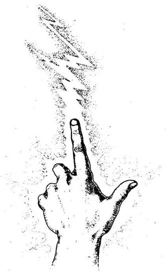
464.
Vesztesz 4 ÉLETERŐ pontot! A fából készült oldalfalaknál állsz, és miközben varázsolsz, társad elrejti az arcát, amikor ujjbegyedből egy villám csap ki, és belevágódik a fába. Az általad ütött lyukon át kintről beszűrődik a napfény. Felszabadultan lélegzel fel - a víz szintje fölött sikerült átégetned a hajó oldalát. Hallod, hogy a fedélzeten nagy a felbolydulás, de mielőtt még újra elfognának, sikerül a lyukon át kimásznod a dokkra. Lapozz a 487-re.
465.
Vesztesz 1 ÉLETERŐ pontot. Nem alkalmazhatod ezt a varázslatot, mert nem rendelkezel az ehhez szükséges Viharkürttel. Lapozz vissza a 26-ra, és válassz újra.
466.
Vesztesz 1 ÉLETERŐ pontot! Nem alkalmazhatod ezt a varázslatot, mert nem rendelkezel az ehhez szükséges Zöld Fémgyűrűvel. Lapozz vissza a 47-re, és válassz újra.
467.
Vesztesz 1 ÉLETERŐ pontot! A varázslat hatástalan, mert nem rendelkezel az ehhez szükséges Zöld Fénygyűrűvel. Lapozz vissza a 108-ra, és válassz újra.
468.
Mit teszel?
Körülnézel, milyen kincseket lophatnál el? Lapozz a 205-re.
Megnézed közelebbről a bálványt? Lapozz a 122-re.
Gyorsan megnézed, nincs-e csapda valahol? Lapozz a 224-re.
Megbizonyosodsz róla, hogy egyedül vagy? Lapozz a 168-ra.
469.
Vesztesz 1 ÉLETERŐ pontot! Van-e Csont Karpereced? Ha nincs, nem tudsz varázsolni - lapozz vissza a 234-re, és döntsd el, ki nyeri a harcot. Ha van Csont Karpereced, felhúzhatod a karodra, és varázsolhatsz. Varázslatoddal azt a látszatot keltheted, mintha kedvenc versenyződ felbukott volna. Ellenfele odapattan hozzá, hogy kihasználja ezt az alkalmat, de ekkor a te embered, aki valójában nem bukott fel, nagyot rúg rajta. Vonj le harcosod ellenfelétől 2 ÉLETERŐ pontot. Ezt követően azonban az illúzióvarázslat megszűnik, és a harc a szokásos módon folytatódik. Lapozz vissza a 234-re, és döntsd el kettőjük csatáját.
470.
Vesztesz 2 ÉLETERŐ pontot! Varázsolsz, és várod a jelzést, vajon varázslattal van-e dolgod, de nem történik semmi. Nincs itt semmiféle mágikus erő. Lapozz vissza a 213-ra, és döntsd el, mit teszel.
471.
Van-e nálad Goblin-fog? Ha nincs, nem alkalmazhatod ezt a varázslatot - vesztesz 1 ÉLETERŐ pontot, lapozz vissza a 77-re, és küzdj meg a Nyálkaevővel a kardod segítségével. Ha van nálad Goblin-fog, annyit dobj közülük a Nyálkaevő elé, amennyit csak akarsz, és varázsolj! Vonj le magadtól foganként 1 ÉLETERŐ pontot, és lapozz az 505-re.
472.
Vesztesz 2 ÉLETERŐ pontot! Varázsolsz, majd mereven nézed a kunyhót, és várod, hogy megtudd, vajon nem leselkedik-e rád odabenn csapda. A kunyhó azonban teljesen veszélytelen. Ha be akarsz menni - lapozz a 27-re. A varázslatnak köszönhetően egy vészcsengő szólal meg benned, amikor a szoborra téved a tekinteted. Ha meg akarod nézni közelebbről a szobrot - lapozz a 8-ra. Ha nem, továbbmehetsz - lapozz a 137-re.
473.
Vesztesz 2 ÉLETERŐ pontot! Varázsolsz a HÁRPIÁK ellen, de miközben azok lecsapnak rád, nem tudod, hogy pontosan céloztál-e. Ha akarod, Tedd próbára a SZERENCSÉDET! Ha SZERENCSÉD van, varázslatod eltalálja az egyik teremtményt, s annyira megzavarodik ettől, hogy mostantól nem fog veszélyt jelenteni a számodra. (Dobj föl egy érmét, hogy megtudd, melyik Hárpiát találtad el.) Ha nincs SZERENCSÉD, vagy, ha
nem akarod SZERENCSÉDET használni, a varázslat célt téveszt. Lapozz a 118-ra, és küzdj meg a Hárpiákkal.
474.
Vesztesz 4 ÉLETERŐ pontot! Fölemeled mindkét kezedet, és ekkor egy-egy izzó tűzgolyó jelenik meg a tenyeredben. Mindkettőt az ajtó zárjához vágod. A hatalmas hő lángra lobbantja az ajtót, és ekkor hátrahúzódsz, mert a tűzre már minden bizonnyal felfigyelnek. Így is történik, két őr rohan oda, és furcsa nyelven karattyolva megpróbálja eloltani a tüzet, de mindhiába. Elrohannak vízért, és ekkor lehetőséged nyílik rá, hogy besurranj az ajtón. Odabent sürgősen rejtekhely után nézel. A kapu túloldalán egy rácsos ablakú házat pillantasz meg a fal mellett, és odafutsz. Belesel az ablakon, és egy öregembert látsz, aki egy fapadon ül. Ha be akarsz menni a házba, hogy üdvözöld az öreget - lapozz a 169-re. Ha inkább továbbmész innen - lapozz a 218-ra.
475.
Vesztesz 2 ÉLETERŐ pontot! Néhány Aranytallérnál sokkal értékesebb dolgot ígérsz az őröknek. Benyúlsz a hátizsákodba, megfogsz egy tárgyat (te döntsd el, melyik legyen az - de bármit választasz, az számodra elvész!), és varázsolsz vele. Amikor kihúzod a hátizsákodból hamis kincsekkel teli kezedet, tágra nyílik a szemük az ámulattól. Felajánlod nekik a "kincset", ha cserébe kiengedne a Kapun. Beleegyeznek, és mohón a hamis kincs után kapnak, majd megosztoznak rajta és zsebre teszik. Átengedne az Északi Kapun. Lapozz a 271-re, de jó lesz, ha gyorsan szeded a lábad, mert az őrök hamarosan rájönnek, hogy a kincs nem létezik!
476.
Vesztesz 4 ÉLETERŐ pontot! Varázsolsz, és ekkor láthatatlan erőtér alakul ki körülötted. Ez az erőtér csupán a következő választásod idejére nyújt majd védelmet számodra, aztán megszűnik. Ha most be akarsz rohanni a szobába - lapozz a 249-re. Ha benyúlsz a hátizsákodba, hátha találsz benne valamit, amit felhasználhatsz - lapozz a 7-re.
477.
Vesztesz 1 ÉLETERŐ pontot! Van-e kerek papi sapkád? Ha nincs, ez a varázslat nem fog működni - lapozz a 468-ra. Ha van ilyen sapkád, a fejedre teheted és varázsolhatsz. Ha bármilyen értelmes lény van a közeledben, képes leszel kitalálni a gondolatait, de semmiféle telepatikus jelzést nem kapsz; valószínűleg nincs ilyen lény a közeledben. Lapozz a 468-ra.
478.
Vesztesz 5 ÉLETERŐ pontot! Nincs ilyen varázslat. El kell hagynod a kunyhót, és tovább kell menned az utadon. Lapozz a 137-re.
479.
Vesztesz 1 ÉLETERŐ pontot. Van-e nálad Zöld Paróka? Ha nincs, nem alkalmazhatod ezt a varázslatot, és vissza kell menned a 77-re, hogy kardoddal küzdj meg a szörnnyel. Ha van nálad Zöld Paróka, a fejedre teheted, és megpróbálhatsz szót érteni a Nyálkaevővel. Beszélni kezdesz, de csak ordítás és artikulálatlan üvöltés jön ki a szádon. A Nyálkaevő nyelve, úgy látszik, mindössze néhány alapjelzésre korlátozódik. Megáll, figyeli, mit mondasz, majd támadásra lendül. Küzdj meg a Nyálkaevővel a kardod segítségével!
Nyálkaevő ÜGYESSÉG 7 ÉLETERŐ 11
Ha legyőzted, lapozz a 196-ra.
480.
Vesztesz 1 ÉLETERŐ pontot! Nem alkalmazhatod ezt a varázslatot, mert nem rendelkezel az ehhez szükséges Tüzes Vízzel. Mialatt azon igyekszel, hogy varázsolj, az egyik HÁRPIA lecsap rád, és karmaival felhasítja a karodat. Vesztesz 2 ÉLETERŐ pontot - lapozz a 118-ra, és küzdj meg velük.
481.
Vesztesz 2 ÉLETERŐ pontot! Varázsolsz, és várod a jelzést, miként juthatsz ki a háló fogságából. A varázslat működik, de nem túl könnyű szorult helyzetedből kiszabadulni. Lapozz a 154-re.
482.
Vesztesz 2 ÉLETERŐ pontot! Varázsolsz, és várod a figyelmeztetést, Vajon varázslattal van-e dolgod, de hiába vársz. Nyugodtan feltételezheted, hogy semmiféle varázslat nem fog bekövetkezni. Lapozz vissza a 153-ra, és válassz újra.
483.
Vesztesz 1 ÉLETERŐ pontot! Van-e Zöld Parókád? Ha nincs, nem alkalmazhatod ezt a Varázslatot - lapozz vissza a 26-ra, és válassz újra. Ha van Zöld Parókád, a fejedre teheted és varázsolhatsz. Amikor beszélni kezdesz az őrökhöz, furcsa nyelven szólalsz meg. Az őrök döbbenten hallgatnak! Összesúgnak, majd odafordulnak hozzád. - Idegen, te crolian nyelven, vagyis a mi anyanyelvünkön beszélsz! Csak nem mauristatiai vagy? - Azt mondod nekik, hogy valóban odavalósi vagy, és rábeszéled őket, hogy engedjenek át az Északi Kapun. Lapozz a 271-re.
484.
Vesztesz 4 ÉLETERŐ pontot! Varázsolsz, és várod, hogy a mágikus erőtér körülvegye a testedet. Sajnos, nem ilyen védelemre van szükséged, mivel gyorsan ölő mérget ittál! Egyre jobban fáj a gyomrod, és a biztos halállal nézel szembe, hacsak nem tudod segítségül hívni Istennődet. Lapozz a 129-re, ha Istennődet segítségül hívhatod; máskülönben kalandod itt véget ér.
485.
Vesztesz 1 ÉLETERŐ pontot! Van-e nálad bodzaszörp vagy bármilyen gyógyital? Ha nincs, nem alkalmazhatod ezt a varázslatot - lapozz a 468-ra. Ha van, megihatod és varázsolhatsz. Erőd gyorsan visszatér, és sebeid begyógyulnak. ÉLETERŐDET visszaállíthatod a Kezdeti értékre. Lapozz a 468-ra. Ne feledd, hogy italodat megittad!
486.
Vesztesz 1 ÉLETERŐ pontot! Varázsolsz, de nem történik semmi. Nem alkalmazhatod ezt a varázslatot, mert nem rendelkezel az ehhez szükséges Tölgyfacsemete bottal. Lapozz vissza a 254-re, és válassz újra.
487.
Miután elhagytad a hajót, a Jabaji folyó innenső oldalán, a dokkoknál kötsz ki. Ettél-e tegnap? Ha nem, le kell vonnod magadtól 3 ÉLETERŐ pontot, mert nagyon éhes vagy. Átmész a Kikötő Hídon a Jabaji folyó
túloldalára, ahol az út kétfelé ágazik. Ha jobbra mész tovább - lapozz a 198-ra. Ha balra - lapozz a 132-re.
488.
Vesztesz 1 ÉLETERŐ pontot! Van-e kis kerek papi sapkád? Ha nincs, a varázslat nem fog működni. Ha van, tedd a fejedre, és várd meg a nyálkás testű teremtmény telepatikus üzenetét. Hiába vársz, nem történik semmi. A teremtmény agya valószínűleg nem alkalmas az értelmes gondolkodásra. Egy azonban biztos: meg akar támadni, és amíg a varázslattal voltál elfoglalva, a közeledbe került. Rántsd elő a kardodat, és küzdj meg vele!
Nyálkaevő ÜGYESSÉG 7 ÉLETERŐ 11
Ha legyőzted - lapozz a 196-ra.
489.
Vesztesz 1 ÉLETERŐ pontot! Van-e nálad Bambuszfurulya? Ha nincs, nem alkalmazhatod ezt a varázslatot, és vissza kell menned a 24-re, hogy másik menekülési útvonalat válassz. Ha van nálad ilyen Furulya, előveheted a hátizsákodból, és varázsolhatsz vele. Miközben játszol rajta, üldözőid megállnak, és mintha egy láthatatlan bábművész mozgatná őket, esetlen szökdécselésbe, ugrándozásba kezdenek. Ezt a kedvező alkalmat kihasználhatod arra, hogy elmenekülj előlük és folytasd az utadat. Lapozz a 89-re.
490.
Vesztesz 2 ÉLETERŐ pontot! A földre dobod a hátizsákodat, és elfordulsz a Gnómtól. Belenyúlsz a hátizsákodba, varázsolsz, és az egyik benne lévő tárgyat egy halom illúziókinccsé változtatod. Te döntheted el, hogy melyik tárgyadat választod erre a célra. (Ha semmilyen tárgy nincs a birtokodban, választhatsz valamennyit az Élelmedből, vagy ha ezt sem akarod, nem fogsz semmilyen kincset varázsolni.) Felmutatod az általad felajánlott tárgyat, és azt mondod neki, hogy szeretnéd megnézni, mit kínál ezért cserébe. Gondolkodik, majd elfogadja az ajánlatodat. Lapozz vissza a 264-re, és válaszd ki két tárgyadat.
491.
Vesztesz 4 ÉLETERŐ pontot! Elmondod a megfelelő varázsigét, és megparancsolod a Szobornak, hogy menjen vissza az eredeti helyére. Izgatottan várod, hogy engedelmeskedjen, azonban nem törődik a varázslato
dal, fogja magát, előrelendül, és kezével megpróbál elkapni. Gyorsan elugrasz az útjából, és kardot rántasz. Lapozz a 299-re.
492.
Vesztesz 2 ÉLETERŐ pontot! Varázsolsz, és várod a "belső tanácsot", merre menj, hogy a rád leselkedő veszélyt elkerüld. Mikor a varázslat működni kezd, ellenállhatatlan kényszert érzel, hogy elfuss erről a helyről. Ha követed ezt a tanácsot - lapozz az 55-re. Ha kardot rántasz - lapozz a 76-ra.
493.
Vesztesz 4 ÉLETERŐ pontot! Varázsolsz, és megparancsolod a férfinak, hogy tegye le a fegyverét. A Gyilkos egyre csak nevet - ez a varázslat csak az értelemmel nem rendelkező teremtményekre van hatással! Lapozz a 13-ra.
494.
Vesztesz 1 ÉLETERŐ pontot! Varázsolsz, de nem történik semmi. Nem alkalmazhatod ezt a varázslatot, mert nem rendelkezel az ehhez szükséges Tüzes Vízzel. Lapozz vissza a 235-re, és válassz újra.
495.
Vesztesz 1 ÉLETERŐ pontot! Van-e kerek papi sapkád? Ha nincs, ez a varázslat nem fog működni, és amíg hiába kísérletezel, körülvesznek - lapozz a 330-ra. Ha van ilyen sapkád, tedd a fejedre, és varázsolj! A varázslat hatására kitalálod ellenfeleid gondolatát, és azt is megtudod, hogy ezek a VÖRÖSSZEMŰEK. Ha a szemük csukva van, teljesen formálisak, de ha kinyitják, életveszélyesek. Egyre közelednek feléd, és kardoddal kell megvédened magad. Lapozz a 192-re.
496.
Vesztes 2 ÉLETERŐ pontot! Varázsolsz, és abban a pillanatban nőni kezdesz és egyre erősebb leszel. Odalépsz a csukott Déli Kapuhoz, és megpróbálod kinyitni. Nekifeszülsz, de az meg sem moccan. Végül is visszanyered eredeti nagyságodat, de addigra benn felfigyelnek a zajra. Lapozz a 178-ra.
497.
Vesztesz 2 ÉLETERŐ pontot! Van-e Fekete Maszkod? Ha nincs, varázslatod hatástalan lesz. Ha van Fekete Maszkod, előveheted a hátizsákodból, és arcod elé tartva varázsolhatsz, de miközben ezt teszed, a haramia odamegy hozzád. A tömeg kifütyül, mert a szabályok értelmében harc közben nem szabad varázsolni. A haramia fél tőled, de mindaddig, míg véd a varázslat, nem engedi, hogy a harc elkezdődjék. Le kell venned a Maszkot. Lapozz a 323-ra, és küzdj meg vele.
498.
Vesztesz 1 ÉLETERŐ pontot! Van-e kerek papi sapkád? Ha nincs, elég viccesen nézel ki, amint elkeseredetten igyekszel varázsolni, jobban teszed, ha megiszod a sört, ahogy azt javasolta - lapozz a 236-ra. Ha van kerek papi sapkád - lapozz a 444-re.
499.
Vesztesz 1 ÉLETERŐ pontot! Van-e nálad bodzaszörp vagy bármilyen gyógyital? Ha nincs, ez a varázslat nem fog működni. Ha van, megihatod az italt, és miután varázsoltál, erőd visszatér, sőt ÉLETERŐDET is visszaállíthatod a Kezdeti értékre. Ha akarod, most bemehetsz a kriptába - lapozz a 249-re, vagy elővehetsz valamit a hátizsákodból - lapozz a 7-re.
500.
Vesztesz 1 ÉLETERŐ pontot! Van-e Fekete Maszkod? Ha nincs, ez a varázslat nem fog működni, és amíg azon igyekszel, hogy történjen valami, a teremtmény rád ront és beleharap a bokádba (vesztesz 2 ÉLETERŐ pontot) - vissza kell lapoznod a 95-re. Vagy küzdj meg az ellenfeleddel, vagy válassz más varázslatot. Ha van Maszkod, tartsd az arcod elé, és varázsolj. A Borzas Vad rémülten felvisít, és sörtéi égnek merednek! Félelmében elájul. Lapozz a 14-re.
501.
Vesztesz 1 ÉLETERŐ pontot! Van-e Zöld Parókád? Ha nincs, ez a varázslat nem fog működni. Ha van ilyen parókád, tedd a fejedre, és varázsolj! A hajófenékben a többi alak is mozgolódni kezd. A varázslat hatására képes vagy saját anyanyelvükön beszélni hozzájuk, de sajnos egyikük sem tud előállni elfogadható szökési tervvel. Lapozz a 179-re.
502.
Vesztesz 2 ÉLETERŐ pontot! Varázsolsz a Lánckészítő mester ellen. Abbahagyja a támadást, és rád mereszti a szemét. Közelebb lépsz hozzá, de mozdulatai teljesen lelassultak. Győzelmi vágya elszállt. Lapozz vissza a 119-re, és küzdj meg a Lánckészítővel. A varázslat miatt ÜGYESSÉG pontjainak a számát csökkentsd 5-re a harc időtartamára.
503.
Vesztesz 2 ÉLETERŐ pontot! Varázsolsz, és lelki szemeiddel egy figyelmeztető jelet pillantasz meg. Az oltár előtt lévő szőnyegbe egy sötét kört szőttek bele. Nem szabad rálépned! Lapozz a 468-ra.
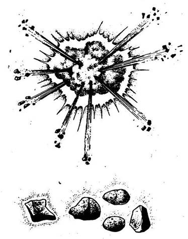
504.
Vesztesz 1 ÉLETERŐ pontot! Felszedtél-e utad során akár egyetlenegy kavicsot is? Ha nem, nem alkalmazhatod ezt a varázslatot - lapozz vissza a 254-re, és válassz újra. Ha van nálad néhány kavics, varázsolj velük, és vágd hozzá azokat az ablakon lévő rácshoz. Amint hozzáérnek, felrobbannak, és szétfeszítik a rácsot. Három kavics elegendő ahhoz, hogy kiszabadulj az öreggel együtt. (Húzd ki a kavicsokat a Kalandlapodról!) Mindketten kimásztok az ablakon, és elindultok az úton Kharéba. Az öreg igen fürge, és csakhamar lehagy. Mikor odaérsz az útkereszteződéshez - lapozz a 81-re.
505.
Annyi Goblin jelenik meg előtted, ahány fogat felhasználtál, és megparancsolod nekik, hogy essenek neki a Nyálkaevőnek. A Goblinok azonban derékig állnak a vízben, így nem jelentenek komoly veszélyt a teremtmény számára, amely könnyűszerrel elbánik velük, majd te következel. Rántsd elő a kardodat, és küzdj meg ezzel a szörnnyel.
Nyálkaevő ÜGYESSÉG 7 ÉLETERŐ 11
Ha legyőzted - lapozz a 196-ra.
506.
Vesztes 2 ÉLETERŐ pontot! Varázsolsz; ekkor öt hasonmásod jelenik meg, és megállásra kényszeríti az Ork kölyköket. Ha 6 vagy annál kevesebb tárgyadat lopták el, most mindet visszaszerezheted. Ha hatnál több tárgyadat lopták el, legfeljebb 6 tárgyat tudsz visszaszerezni (te választod ki, melyiket). Ezt követően folytathatod az utadat. Lapozz a 61-re.
507.
Vesztesz 4 ÉLETERŐ pontot! Ezzel a varázslattal a harcban részt vevő ellenfelek bármelyikét lomhává, ügyetlenné teheted. Aki ennek a varázslatnak a hatása alatt áll, csak egy kockával dobhat (a szokásos kettő helyett), amikor a Támadóerejét állapítja meg. A varázslat 6 Fordulón át hatásos. Minthogy azonban a küzdőktől távol állva varázsolsz, fennáll a veszélye annak, hogy a két résztvevő közül nem azt éri a varázslatod, akit kiszemeltél magadnak, sőt az is előfordulhat, hogy mindkettőre hatni fog
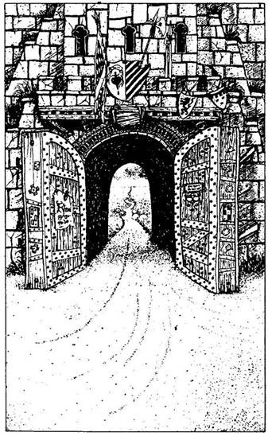
ugyanaz a varázslat! Jelöld meg azt a küzdőfelet, akit varázslatod célpontjául kiszemeltél magadnak, és dobj egy kockával. Ha 1-et, 2-t vagy 3-at dobsz, jól céloztál. Ha 4-et vagy 5-öt dobsz, varázslatod nem azt éri, akit akartál. Ha 6-ot dobsz, a varázslat mindkét résztvevőre egyformán fog hatni! Most lapozz vissza a 234-re, és döntsd el kettőjük harcát.
508.
Vesztesz 1 ÉLETERŐ pontot! Varázsolsz az ellenfeled ellenében, de nem történik semmi! Nem alkalmazhatod ezt a varázslatot, mert nem rendelkezel az ehhez szükséges Ékszerberakásos Medállal. Mialatt varázsolni próbálsz, ellenfeled rád méri az első csapását. Vesztes 2 ÉLETERŐ pontot. Fegyvereddel folytasd a harcot. Ne feledd, hogy ellenfeled ÜGYESSÉG és ÉLETERŐ pontszámai épp olyanok, minta tieid voltak a varázslás előtt és mielőtt még csapást mért volna rád. Ha legyőzöd, elhagyhatod a kunyhót. Lapozz a 137-re.
509.
Vesztes 5 ÉLETERŐ pontot! Nem alkalmazhatod ezt a varázslatot, mert ilyen varázslat nem létezik. Lapozz a 13-ra.
510.
Vesztes 1 ÉLETERŐ pontot! Nem alkalmazhatod ezt a varázslatot, mert nem rendelkezel az ehhez szükséges Gyöngygyűrűvel. Miközben azon igyekszel, hogy varázsolj, üldözőid egészen közel kerülnek hozzád, és kardot kell rántanod, hogy megküzdj velük. Lapozz a 192-re.
511.
A kapu lassan kinyílik előtted. Túljutottál a szörnyűséges kikötőváros csapdáin, és elérkeztél utad feléhez. A kapu túloldalán Bakland végeláthatatlan vidéke tárul eléd. Baddu-Bak hatalmas síksága lesz küldetésed következő állomása, ahonnan eddigi felbecsülhetetlen értékű tapasztalataid segítségével majd eljutsz az Ilklala tóhoz.
Eszedbe jutnak a látnoki képességű Őrmester szavai, aki így szólt, amikor elhagytad az Előretolt Helyőrséget: - Ha elhagyod Kharét, át kell kelned az ismeretlen Baklandon, ahol állítólag nem a nap járása szabályozza a nappalokat és az éjszakákat, hanem természetfölötti erők uralkodnak. Amint távozol Kharéból, figyelni fognak.
Fegyvercsörgés zaja zökkent ki álmodozásodból - úgy látszik, az őrök tértek vissza. Még egy utolsó pillantást vetsz a hátad mögött elterülő városra, és átmész a kapun. Sűrű felhők gyülekeznek előtted az égen. Megérkeztél Baklandba…